前言 這是來參考大漠窮秋老師的書”Angular 基礎教程（7.0）”來將裏面的例子以ng8來改寫一下，並將在github 上以分支的方式將各章節來分類一下。
lesson01 來建立基礎的ng8，基本上的node的安裝，和ng8的安裝，我之前的文章有記錄過，所以在此不在重覆的提起，而是直接來建立一個ng8的專案，在cmd下
使用會建立router的選項，這是將路由分出來，之後會比較好處理。會跳出選擇那種CSS的處理器，一般是選擇SCSS來處理，選好了直接按下enter鍵之後等待ng幫我們建立好專案。
1 2 3 4 5 6 7 8 D:\Project\github\learn-anguar>ng new HelloAngular ? Would you like to add Angular routing? Yes ? Which stylesheet format would you like to use? CSS > SCSS [ http://sass-lang.com/documentation/file.SASS_REFERENCE.html Sass [ http://sass-lang.com/documentation/file.INDENTED_SYNTAX.html ] Less [ http://lesscss.org ] Stylus [ http://stylus-lang.com
編輯器的問題 我是使使用vscode來編輯和debug的。可以進到目錄”HelloAngular”，在cmd模式下來下code .就可打開vscode的編輯器來，執行和除錯此程式。
參考 https://github.com/ttom921/learn-anguar/tree/lesson01
lesson2-1組件概述 Angular一切都是圍著組件化 來展開的，組件是Angular的核心概念模型。以下是一個最簡單的Angular組件定義。
1 2 3 4 5 6 7 8 9 10 import { Component } from '@angular/core' ;@Component ({ selector: 'app-root' , templateUrl: './app.component.html' , styleUrls: ['./app.component.scss' ] }) export class AppComponent { title = 'HelloAngular' ; }
@Component：這是一個Decorator（裝飾器），其作用類似于Java里面的Annoation（注解）。Decorator這個特性目前處于Stage2（草稿）狀態，還不是ECMA的正式規範請點擊這里查看具體詳情 。
selector：組件的標籤名，外部使用者可以這樣來使用以上組件，默認情況下，ng命令生成出來的組件都會帶上一個app前綴，如果你不喜歡，可以在angular.json里面修改prefiex配置項，設置為空字串將不帶依任何前綴。
templateUrl：引用外部HTML模板。如果你想直接編寫內聯模板，可以使用template，支持ES6引入的模板字符串 寫法，可參考
styleUrls：引用外部CSS樣式文件，這是一個數組，也就意味著可以引用多份CSS文件。
export class AppComponent：這是ES6里面引入的模塊和class定義方式。
lesson2-2 把CSS預編譯器改成SCSS 目前因為已經在開始上來選擇SCSS為CSS的編譯器，所以這裏就跳過去。
lession2-3 組件模板
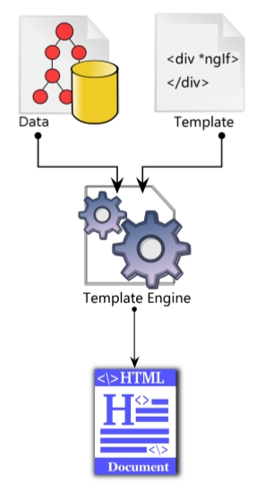
模板是編寫Angular組件最重要的一環，至少需要深入理解以下知識點才能玩轉Angular模板：
對比各種JS模板引擎設計思路
Mustache（八字胡）語法
模板內的局部變量
屬性綁定、事件綁定、雙向綁定
在模板里面使用結構型指令*ngif 、*ngFor、ngSwitch
在模板里面使用屬性型指令NgClass、NgStyle、NgModel
在模板里面使用管道格式化數據
一些小Feature，如安全導航、非空斷言
對比各種JS模板引擎設計思路 幾乎每一款前端框架都會提供自已的模板語法：
在jQuery如日中天的時代，有Handlebars那種功能超強的模板
React推崇JSX模板語法
當然還有Angular提供的那種與指令緊密結合的模板語法。
綜點來說，無論哪一種前端模板，大家都比較推崇輕邏輯 （Logic-less）的設計思路。
何為輕邏輯 ？ 簡而言之，所謂輕邏輯 就是說，不能在模板里面編寫非常複雜的JavaScript表達式。比如，Angular的模板語法就有規定：
不能在模板里面new對象
不能使用 =、+=、-=這類的表達式
不能用++、--運算符
不能用使用位元運算符
為什麼要輕邏輯 ？
最重要的原因是怕影響運行性能，因為模板可能會被執行很多次。
比如寫以下Angular模板
1 2 3 4 5 <ul > <li > *ngFor="let race of races" {{race.name}} </li > <ul >
很明顯，瀏覽器不認識*ngFor 和 { {...} }這重語法，因此必須在瀏覽器里面進行”編譯“，獲得對應的模板函數，然後再把數據傳遞給模板函數，最終結合起來獲得一堆HTML標籤後才能把這一堆標籤插入到DOM樹里面去。
如果啟用了AOT，處理的步驟有些變化，＠angular/cli會對模板進行”靜態編譯“，避免在瀏覽器里面動態編譯的過程。而Handlebars這種模板引擎完全是運行時編譯模板字符串的，可以編寫以下代碼：
1 2 3 4 5 6 7 8 9 10 11 12 13 14 15 16 17 var source=` <ul> {{#each races}} <li>{{name}}</li> {{/each}} </ul> ` ;var templateFn=Handlebars.complie(source);var html=tmeplatefn([ {name :'人族' }, {name :'𫋵族' }, {name :'蟲族' } ]);
注意到Handlebars.compile這個調用了吧？這個地方的本質是在運行時把模板字符串”編譯“成JS函數。
鑑于JS解䆁執行的特性，你可能會擔憂這里會有性能問題，這種擔憂是合理的，不過Handlebars是一款非常優秀的模板引擎 ，它在內部做了各種優化和緩存處理。模板字符串一般只會在第一次被調用的時候編譯一次，Handlebars會把編譯好的函數緩存起來，後面再次調用的時候會從緩存里可獲取，而不會多次進行”編譯“。
上面多次提到了”編譯”這個詞，所以很顯然這里有一個東西是無法避免的，那就是必須提供一個JS版的”編譯器“，讓這個”編譯器“運行在瀏覽器里面，這樣才能在運行時把用戶編寫的模板字符串”編譯成模板函數“。
有一些模板引擎會直的去用JS編寫一款”編譯器”出來，比如Angular和Handlebars，它們確實都編寫了一款JS（TS）版的編譯器。而有一些簡單的模板引擎，例如Underscore里面的模板函數，只是用正則表達式做了字符串替換而已，顯得特別簡陋。這重簡陋的模板引擎對模板的寫法有非常多的限制，因為它不是直正的編譯器，能持的語法特性非常有限，所以，評估一款模板引擎的強弱，最核心的東西就是評估它的”編譯器“做得怎麼樣。
但是不管㤰麼說，畢竟是JS版的”編譯器“，我們不可能把它做得像G++那麼強大，也沒有必要做得那麼強大，因為這個JS版的編讀器而要在瀏覽器里面運行，搞得太複雜瀏覽器拖不動！
以上就是為什麼大多數模板引擎都要強調”輕邏輯“的最根本原因。
關于Angular來說，強調”輕邏輯“還有另一個原因：在組件的整個生命週期里面，模板函數會被執行很多次 。可以想象，Angular每次要刷新組件外觀的時候，都需要去調用一下模板函數，如果你在模板里面編寫了非常複雜的代碼一定會增加渲染時間，用戶一定會感到界面有”卡頓“。
人眼的視覺延遲大約是100～400ms，如果整個頁面渲染時間超過了400ms，介面基本上就卡得沒法用了。有一些做游戲的開發者會追求60fps刷新率的細𧸐感覺，60分之1秒約等于16.7ms，如果UI整體的渲染時間超過了16.7ms，就沒法達到這個要求了。
輕邏輯（Logic-less）帶來了效率的提升，也帶來了一些不方便，比如很多模板引擎都實現了if語句，但是沒有實現else，所以開發者們在編寫複雜業數邏輯的時候模板代碼會顯示得非常囉嗦。
目前來說，并沒有完美的方案能同時兼願運行效率和語法表現能力，這里只能取得一個平衡。
Mustache語法 Mustache語法也就是雙花恬號語法{ {...} }，老外覺得它像八字鬍子。
好消息是，很多模板引擎接受了Mustache語法，這樣一來學習量𦙆降低了不少。
關于Mustache語法，需要掌握以下3點：
它可以獲取到組件里面定義的屬性值
它可以自動計算簡單的數學表達式，如加、減、乘、除、取模
它可以獲得方法的返回值
請依次看例子，先來建立元件來測試此功能
1 ng g component test-interpolation
插值語法關鍵代碼實例
1 2 3 <h3 > 歡𨒖來到{{title}} </h3 >
1 2 3 4 5 6 export class TestInterpolationComponent implements OnInit { title = "假的星際爭霸2" ; constructor ( ngOnInit() { } }
簡單的數字表達式求值
調件組件里面定義的方法
1 <h3 > 可以調用方法{{getVal()}}</h3 >
1 2 3 getVal(): any { return 65535 ; }
模板內的局部變量 1 2 3 4 5 <h3 > 可以調用方法{{getVal()}}</h3 > <hr /> <input #heroInput > <p > {{heroInput.value}}</p > <button (click )="sayHello(heroInput.value)" > 局部變量</button >
在src\app\test-interpolation\test-interpolation.component.ts
1 2 3 4 5 6 7 8 9 10 11 12 13 14 15 16 17 18 19 20 import { Component, OnInit } from '@angular/core' ;@Component ({ selector: 'app-test-interpolation' , templateUrl: './test-interpolation.component.html' , styleUrls: ['./test-interpolation.component.scss' ] }) export class TestInterpolationComponent implements OnInit { title = "假的星際爭霸2" ; constructor ( ngOnInit() { } getVal(): any { return 65535 ; } sayHello(name: string ) { alert(name); } }
有一些人會追問，如果我在模板里面定義的局部變量和組件內部屬性重名會怎麼樣呢？
如果直的出現了重名，Angular會按照以下優先級來進行處理：
板板部變量 > 指令中的同名變量 > 組件中的同名屬性
這種優先級規則和JSP里面的變量取值規則非常類似，對比一下很好理解對不對
屬性綁定 屬性綁定是用方括號來做的，寫法如下：
1 public imgSrc:string ="./assets/imgs/1.jpg"
很明顯，這種綁定是單向的。
事件綁定 事件綁定是用圓括來做的，寫法如下：
1 <button (click )="btnClick($event)" > 測試事件</button >
1 2 3 btnClick(event): void { alert("測試事件綁定" ); }
雙向綁定 雙向綁定 是通過方括號里套一個圓括號來做，模板寫法如下：
1 <div [style.font-size.px ]="fontSizePx" > Resizable Text</div >
對應組件內部的屬性定義：
1 fontSizePx: number = 48 ;
目前，主流的幾款前端框架都已接受了”雙向數據綁定“這個特性
在模板里面使用結構型指令 Angular有3個內置的結構型指令：*ngIf、*ngFor、*ngSwitch。ngSwitch的語法比較囉嗦，使用頻率小一些。
*ngIf代碼實例：
1 2 3 4 <p > 結構型指令</p > <p > *ngIf</p > <p *ngIf ="isShow" style ="background-color:#ff3300;" > 是顯示還是不顯示？</p > <button (click )="toggleShow()" > 控級顯示隱藏</button >
1 2 3 4 5 isShow = true ; toggleShow() { this .isShow = !this .isShow; }
*ngFor代碼實例
1 2 3 4 <p > *ngFor</p > <li *ngFor ="let race of races;let i=index;" > {{i+1}}-{{race.name}} </li >
1 2 3 4 5 races = [ { name: "人族" }, { name: "蟲族" }, { name: "神族" } ];
*ngSwitch代碼實例：
1 2 3 4 5 6 <p > *ngSwitch</p > <div [ngSwitch ]="mapStatus" > <p *ngSwitchCase ="0" > 下載中…</p > <p *ngSwitchCase ="1" > 正在讀取…</p > <p *ngSwitchDefault > 系統繁忙…</p > </div >
特別注意：一個HTML標籤上只能同時使用一個結構型的指令。
因為結構型指令會修改DOM結構，如果在一個標籤上使用多個結構指令，大家都一起去修改DOM結構，到時候到底誰說了算？
那麼需要在同一個HTML上使用多個結構型指令應該指令應該怎麼辦呢？有兩個辦法：
在模板里面使用屬性型指令 使用頻率比較高的3個內置指令分別是：NgClass、NgStyle和NgModel。
關于NgClass的使用示例代碼如下：
1 2 <div [ngClass ]="currentClasses" > 同時批量設置多個樣式</div > <button (click )="setCurrentClasses()" > 設置</button >
1 2 3 4 5 6 7 8 9 10 11 currentClasses: {}; canSave: boolean = true ; isUnchanged: boolean = true ; isSpecial: boolean = true ; setCurrentClasses() { this .currentClasses = { 'saveable' : this .canSave, 'modified' : this .isUnchanged, 'special' : this .isSpecial }; }
1 2 3 4 5 6 7 8 9 .saeable { font-size : 18px ; } .modified { font-weight : bold; } .special { background-color : #ff3300 ; }
有關NgStyle的使用示例代碼如下：
1 2 3 4 5 <p > NgStyle</p > <div [ngStyle ]="currentStyles" > 用NgStyle批量修改內聯樣式！ </div > <button (click )="setCurrentStyles()" > 設置NgStyle</button >
1 2 3 4 5 6 7 8 currentStyles: {}; setCurrentStyles() { this .currentStyles = { 'font-style' : this .canSave ? 'italic' : 'normal' , 'font-weight' : this .isUnchanged ? 'bold' : 'normal' , 'font-size' : this .isSpecial ? '36px' : '12px' } };
ngStyle這種方式相當于在代碼里面寫CSS樣式，違反了注意點分離的原則，而且將來不太好修變，非常不建議這樣寫。
關于NgModel的使用示例代碼如下：
1 2 3 4 <p > NgModel</p > <p > ngModel 只能用在表單類的元素上面</p > <input [(ngModel )]="currentRace.name" > <p > {{currentRace.name}}</p >
1 currentRace: any = { name: "隨機種族" };
管道 管道的一個典型作用是用來格化數據，舉一個最簡單的例子：
1 {{currentTime | date:'yyyy-MM-dd HH:mm:ss'}}
1 currentTime: Date = new Date ();
Angular里面一共內置了12個指令
1 2 AsyncPipe DatePipe I18nPluralPipe I18nSelectPipe JsonPipe LowerCasePipe CurrenctPipe DecimalPipe PercentPipe SlicePie UpperCasePipe TitleCasePipe
在複雜業務場景裡面，12個指令肯定不夠用，如果需要自定義指令，這裡有具體的例子
管道還有另一個典型的作用就是用來做國際化，後面將會用專門的一課來演示Angular的國際化寫法。
lession2-4 組件間的通訊 主要的內容
直接調用
＠Input和@Output
利用Service單例進行通訊
利用cookie或localstorage進行通訊
利用Session進行通訊
組件就像零散的積木，我們需要把這些積木按照一定的規則拼裝起來，而且要讓它們之間能相互進行通訊，這樣才能構成一個有機的完整系統。
在真實的應用中，組件最終會構成樹形結構，就像人類社會中的家族樹一樣：
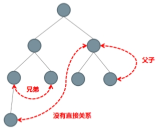
在樹形結構里面，組件之間有幾種典型的關系：父子關系，兄弟關系，沒有直接關系。
相應地，組件之也有以下幾重典型的通訊方案：
直接的父子關系，父組件直接訪問子組件的public屬性和方法
直接的父子關系，借助于@Input和＠Output進行通訊
沒有直接關系，借助于Service單例進行通訊
利用cookie和localstorage進行通訊
利用Session進行通訊
無論使用件麼前端框架，組件之間的通訊都離開不了以上幾種方案，這些方案與具體框架無關。
直接調用 先來建立元件父元件
1 ng g component ParentAndChild
再來建立子元件
1 ng g component parent-and-child/Child
對于有直接父子關系的組件，父組件可以直接訪問子組件里面public的屬性和方法，代碼如下：
在父組件的html
1 2 3 4 <p > 這是父組件</p > <app-child #child > </app-child > <button (click )="child.childFn()" > 調用子組件方法</button >
在子組件的html
1 2 3 4 <div > <p > 這件子組件</p > <div > {{panelTitle}}</div > </div >
在子組件的ts里面必須暴露一個childFn方法
1 2 3 4 5 6 7 8 9 10 11 12 13 14 15 16 17 18 19 20 21 22 23 24 25 26 import { Component, OnInit } from '@angular/core' ;@Component ({ selector: 'app-child' , templateUrl: './child.component.html' , styleUrls: ['./child.component.scss' ] }) export class ChildComponent implements OnInit { private _panelTitle: string = "我是子組件" ; public get panelTitle(): string { return this ._panelTitle; } public set panelTitle(v: string ) { this ._panelTitle = v; } constructor ( ngOnInit() { } childFn() { console .log("子組件的名字是->" + this .panelTitle) } }
以下是通過在模板里面定義局部變量的方式來直接調用子組件里面的public型方法，在父組件的內部也可以訪問到子組件的實例，需要利用到@ViewChild裝飾器，示例如下：
1 @ViewChild ('child' , { static : true }) child: ElementRef
關於＠ViewChild在後面的內容里面將會有更加詳細的解䆁。
很明顯，如果父組件直接訪問子組件，那麼兩個組件之間的關系會被固定死了。父子兩個組件緊密依賴，也就是不能單獨的使用，因此最子不在在父組件里面直接訪問子組件上的屬性和方法。
我們可以利用＠Input裝飾器，讓父組件直接給子組件傳遞參數，子組件上這樣寫
1 2 3 4 5 6 7 8 9 10 11 12 13 14 15 16 17 18 19 20 21 22 export class ChildComponent implements OnInit { private _panelTitle: string = "我是子組件" ; @Input () public get panelTitle(): string { return this ._panelTitle; } public set panelTitle(v: string ) { this ._panelTitle = v; } constructor ( ngOnInit() { } childFn() { console .log("子組件的名字是->" + this .panelTitle) } }
父組件上可以這樣設置panelTitle這個參數
1 2 <p > @Input的使用</p > <app-child panelTitle ="這是一父元件給的標題" > </app-child >
＠Output @Output的本質是事件機制，我們可以利用它來監聽子組件上派發的事件，子組件上這樣寫
1 2 3 4 5 6 7 8 9 10 export class ChildComponent implements OnInit { @Output () follow = new EventEmitter<string >(); emitAnEvent(event) { this .follow.emit("follow" ); } }
子組件的html
1 2 3 4 5 <div > <p > 這件子組件</p > <div > {{panelTitle}}</div > <button (click )="emitAnEvent($event)" > 子組件發射事件</button > </div >
父組件上可以這樣監聽follow事件
1 2 <p > @Output的使用</p > <app-child (follow )="doSomething($event)" > </app-child >
1 2 3 doSomething(ev: Event) { console .log("父組件收到event->" + ev); }
我們可以利用@Output來自定義事件，監聽自定義事件的方式也是通過小圖括號，與監聽HTML原生事件的方式一模一樣。
利用Service單例進行通訊 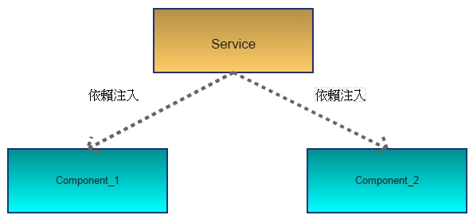
如果你在根模塊（一般是app.module.ts）的prividers里面注冊一個Service，那麼這個Service就是全局單例的，這樣一來我們就可以稅用這個單例的Service在不同的組件之間進行通訊了。
比較粗暴的方式：我們可以在Service里面定義public型的其共享變量，然後讓不同的組件都來訪問這塊變量，從而達到共享數據的目的。
優雅一點的方式：利用RsJS，在Service里面定義一個public型的Subjec，然後讓所有組件都來Subscirbe這個主題，類似于一重”事件總線”的效果。
也來建立一個元件在下面有兩個元件之間沒有直接的關系
將src\app\app.component.html修改一下來顯示brother元件
1 2 <app-brother > </app-brother >
再它的下面來產生兩個元件和服務
1 2 3 4 ng g component brother/Child1 ng g component brother/Child2 //服務 ng g service brother/EventBus
在src\app\brother\child1\child1.component.html
1 2 3 4 5 6 <div > <div > 第一個組件</div > <div > <button (click )="triggerEventBus()" > 觸發一個事件</button > </div > </div >
在src\app\brother\child1\child1.component.ts
1 2 3 4 5 6 7 8 9 10 11 12 13 14 15 16 17 18 import { Component, OnInit } from '@angular/core' ;import { EventBusService } from '../event-bus.service' ;@Component ({ selector: 'app-child1' , templateUrl: './child1.component.html' , styleUrls: ['./child1.component.scss' ] }) export class Child1Component implements OnInit { constructor (private eventBusSevice: EventBusService ngOnInit() { } triggerEventBus(): void { this .eventBusSevice.eventBus.next("第一個組件觸發的事件" ); } }
在src\app\brother\child2\child2.component.html
1 2 3 4 5 6 <div > <div > 第二個組件</div > <div > <p *ngFor ="let event of events" > {{event}}</p > </div > </div >
在src\app\brother\child2\child2.component.ts
1 2 3 4 5 6 7 8 9 10 11 12 13 14 15 16 17 18 19 import { Component, OnInit } from '@angular/core' ;import { EventBusService } from '../event-bus.service' ;@Component ({ selector: 'app-child2' , templateUrl: './child2.component.html' , styleUrls: ['./child2.component.scss' ] }) export class Child2Component implements OnInit { events: Array <any > = []; constructor (private eventBusService: EventBusService ngOnInit() { this .eventBusService.eventBus.subscribe((value ) => { this .events.push(value + "-" + new Date ()); }); } }
利用cookie或者localstorage進行通訊
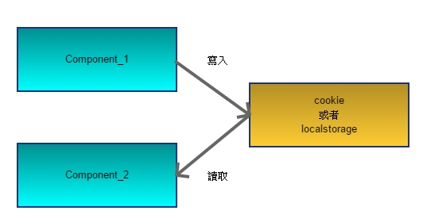
先立建立一個LocalStorage的元件來測試
1 ng g component LocalStorage
再建立兩個子元件來測試它們之間的通訊
1 2 ng g component local-storage/LocalChild1 ng g component local-storage/LocalChild2
在第一個元件寫入資料
1 2 3 4 5 6 7 export class LocalChild1Component implements OnInit { wirteData() { window .localStorage.setItem("json" , JSON .stringify({ name: '大漠窮秋' , age: 18 })); } }
1 2 3 4 5 6 <div > <div > 第一個組件</div > <div > <button (click )="wirteData()" > 寫數據</button > </div > </div >
在第二個元件讀資料
1 2 3 4 5 6 7 8 9 10 11 export class LocalChild2Component implements OnInit { readData() { let json = window .localStorage.getItem("json" ); let obj = JSON .parse(json); console .log(obj.name); console .log(obj.age); } }
1 2 3 4 5 6 <div > <div > 第二個組件</div > <div > <button (click )="readData()" > 讀數據</button > </div > </div >
在父元件html
1 2 3 <app-local-child1 > </app-local-child1 > <hr > <app-local-child2 > </app-local-child2 >
很多朋友寫Angular代碼的時候出現了思維定勢，總感覺Angular會封裝所有東西，實際上并非如此，比如cookie、localstorage這些東西都可以直接用原生的API進行操作，千萬別忘記原生的那些API，都能用的。
利用Session進行通訊 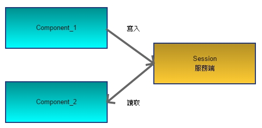
小結 組件間的通訊方案是通用的，無論使用什麼的前端框架，都會面臨這個問是，而解醍的方案無外乎本 所列出的這幾種。
lession2-5 生命週期鉤子 在這裏我們只討論以下4件事：
什麼是UI組件的生命週期
Angular組件的生命週期有什麼特別的地方
OnPush策略的使用方式
簡要介紹髒檢查的實現原理
UI組件的生命週期 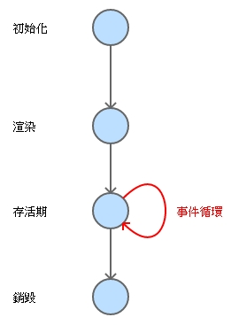
無論使用什麼樣的前端框架，只要編寫UI組件，生命週期都是必須要考慮的重要內容。請展開你的想象，如果讓你來設計UI系統，組件有幾個重要的階段一定是繞不開的。
初始化（init）階段：在這個階段需要把組件new出來，把一些屬性設罝上去等這些操作。
渲染（render）階段：在這個階段而要把組件的模板和數據結合起來，生成HTML標籤結構，并且要整合到現有的DOM樹里面去。
存活階段：既然帶有UI，那麼在組件的存活期內就一定會和用戶進行交互。一般來說，帶有UI的系統都是通過事件機制進行用戶交互的。也就是說，這個階段將會處理大畫的用戶事件，如鼠標點擊，鍵盤按鍵，手指觸摸。
銷毀（destory）階段：最後，組件使用完了，需要把一些資源釋放掉。最典型的操無是而要把組件上的所有事件全部清理乾淨，避免造成內存泄漏。
在組件生命的不同階段，框架一般會暴露出一些“接口”，開發者可以利用這些接口來實現一些自已的業邏輯。這種接口在有些框架如做“事件”，在Angular里面叫做“鉤子”，但其底層的本質都是一樣的。
Angular 鉏件生命週期鉤子 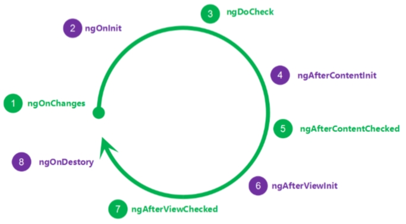
Angular一其暴露了8個“鉤子”，構造函數不算。
并沒有組件或指令會實現全部鉤子。
綠色的4個鉤子可能會被執行很多次，紫色的只會執行一次。
Content和View相關的4個鉤子只對組件有 效，指令上不能使用。因為在新版本Angula里面，指令不能帶有HTML模板，指令沒有自已的UI，當然就沒有View和Content相關的“鉤子”了。
請不要在生命週期鉤子里面實現複雜的業務邏輯，尤其是那4個會被反復執行的鉤子，否則一定會造成卡頓。
OnPush策略 在真實的業系統中，組件會構成Tree型結構，就像這樣：
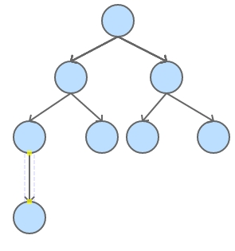
當某葉子組件上的數據模型發生了變化之後，就像這樣：
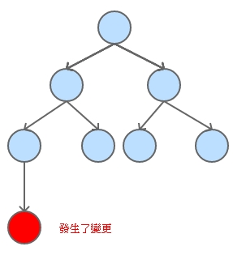
這時候，Angular將會從根組件開，遍歷整顆組件樹，把斷有組件上的ngDoCheck()方法都調用一遍：
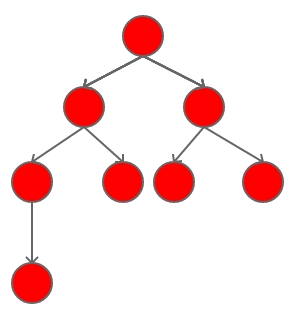
請注意，默認清況下，無論哪個葉子組件上發生了變化，都會把整個組件樹遍歷一遍 。如果組件樹非常龐大，嵌套非常深，很明顯會有效率問題。在絕大部分時間里面，并不會出現每個組件都需要刷新的情況，根本沒有必要每次都去全部遍歷。因此Angular提供了一種叫做OnPush的策略，只要把某個組件上的檢測策略設置為OnPush，就可以忽略整個子樹了，就像這樣：
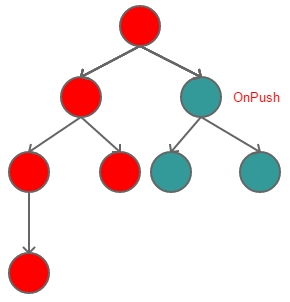
很明顯，使用了OnPush策略之後，檢查效率將會𫉬得大幅度的提升，尤其在組件機數非常多的情況下：
Angular 內罝的兩種變更檢測策略如下：
Default：無論哪個組件發生了變化，從根組件開始全局遍歷，調用每個組件上的ngDoCheck()鉤子。
OnPush：只有當組件的＠Input 屬性發生變化的時候才調用本組件的ngDoCheck()鉤子。
有一些開發者建議Angular項目組把OnPush作為默認策略，但是目還沒有得到官方支持，或許在未來的某個版本里面會進修改。
了解一點點原理 如果不想看到扯原理的內容，可以跳過
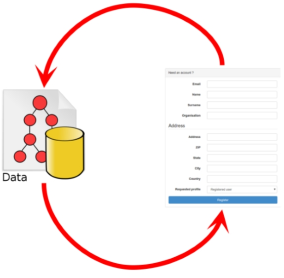
大家都知道，Angularjs是第一個色“雙向數據綁定”這種設計帶到前端領域來的框架，“雙向數據綁定”是典型的場景就是對表單的處理。
雙向數據綁定的目標很明確：數據模型發生變化之後，界面可以自動刷新； 用戶修改了界面上的內容之後，數據模型也會發生自動修改。
很明顯，這里需要一種同步機制，在Angular里面這種同步机制叫做“變更檢測”。
在老版本Angularjs里面，變更檢測機制實現得不太完善，經常會出現檢測不到變更的情況，所以才有了讓大家很厭煩的$apply()調用。
在新版本的Angular里面不再存在這個問題了，因為新版本的Angular使用Zone.js 這個庫，它會把所有可能導致數據模型發生變更的情況全部都攔截掉，從而在數據發生變化的時候去通知Angular進行刷新。
實際上要做到這一點并不復雜，因為鄉瀏覽器環境下，有可能導致數據模型發生變化的情況只有以下3種典型的回調。
事件回調：鼠標，鍵盤，觸模
定器器回調：setTimeout和setInterval
Ajax回調
Zone.js覆蓋了所有原生的實現，當開發都調用這些函數的時候，并不是調用的原生方法，而是調用Zone.js自已的實現，所以Zone.js就可以做一些自已的處理了。
lession2-6 組件動效 主要內容
非常重要的說明 Angular默認的動畫模塊使用的是Web Animations規範，這個規範目前處於Editor’s Draft狀態(https://drafts.csswg.org/web-animations/ )
Web Animations這套新規範在FireFox,Chrome，Operat里面得到了完整的支持，而其他所有瀏覽器內核幾乎完全不支持，請優先使用CSS3規範里面的animation方案，https://www.w3schools.com/css/css3_animations.asp
用法示範 第一步：導入動畫模塊
1 2 3 4 5 6 7 8 9 10 11 12 13 14 15 16 17 18 19 20 21 22 23 import { BrowserModule } from '@angular/platform-browser' ;import { NgModule } from '@angular/core' ;import { BrowserAnimationsModule } from '@angular/platform-browser/animations' ;import { AppRoutingModule } from './app-routing.module' ;import { AppComponent } from './app.component' ;import { FormsModule } from '@angular/forms' ;@NgModule ({ declarations: [ AppComponent, ], imports: [ BrowserModule, BrowserAnimationsModule, FormsModule, AppRoutingModule ], providers: [], bootstrap: [AppComponent] }) export class AppModule { }
第二步：編寫動效
先來建立資料夾叫src\app\animations在其下面建立檔案fly-in.ts，在其中來寫動畫效果
1 2 3 4 5 6 7 8 9 10 11 12 13 14 15 16 17 import { trigger, transition, animate, keyframes, style } from '@angular/animations' ;export const flyIn = trigger('flyIn' , [ transition('void => *' , [ animate(3000 , keyframes([ style({ opacity: 0 , transform: 'translateX(-100%)' , offset: 0 }), style({ opacity: 1 , transform: 'translateX(25px)' , offset: 0.3 }), style({ opacity: 1 , transform: 'translateX(0)' , offset: 1.0 }), ])) ]), transition('* => void' , [ animate(3000 , keyframes([ style({ opacity: 1 , transform: 'translateX(0)' , offset: 0 }), style({ opacity: 1 , transform: 'translateX(-25px)' , offset: 0.7 }), style({ opacity: 0 , transform: 'translateX(100%)' , offset: 1.0 }), ])) ]) ]);
flyIn是這動效的名稱，後面就可以組件里面引用flyIn這個名字了。
動效整上是由狀態 和轉場 兩個部分構成。
以上代碼里面的星號*表示“不可見狀態”，void表示任意狀態，這是兩動內置的狀態，* => void表示進場動畫，而void => *表示離場動畫。當然也可以定義自已的狀態名稱，注意不要和內置的狀態名稱發生沖突。
keyframs里面的內容是關鍵幀的定義，語法和CSS3里面定義動畫的方式非常類似。
第三步：在組件里面使用flyIn這個動效
1 2 3 4 5 6 7 8 9 10 11 12 13 14 15 16 import { Component, OnInit } from '@angular/core' ;import { flyIn } from '../animations/fly-in' ;@Component ({ selector: 'app-test-fly-in' , templateUrl: './test-fly-in.component.html' , styleUrls: ['./test-fly-in.component.scss' ], animations: [flyIn] }) export class TestFlyInComponent implements OnInit { state: string ; constructor ( ngOnInit() { } }
1 2 3 4 5 6 <div [@flyIn ]="void" > <div > 飛入效果</div > <div > 飛入效果 </div > </div >
如果不願意自已編寫動效，推這個開源項目，它和Angula之間結合比較緊ng-animate
lession2-7:動態組件 我們可以通過標籤的方式使用組件，也可以通過代碼的方式來動態創建組件。動態創建組件的過程是通過ViewContainerRef和ComponentFactoryResolver這兩個工具類來配合完成的。
先來建立測試元件
1 ng g component DynamicComp
然後在src\app\app.component.html來使用
1 2 3 4 5 6 7 8 <app-dynamic-comp > </app-dynamic-comp >
在src\app\dynamic-comp\dynamic-comp.component.html在裏面定義一個模板<div #dyncomp></div>如下
1 2 3 4 5 6 7 <div > <div > 這動態組件-這是父組件</div > <div > <div #dyncomp > </div > <button (click )="destoryChild()" > 銷毀子組件</button > </div > </div >
建立動態的子組件
1 ng g component dynamic-comp/Child11
在src\app\dynamic-comp\child11\child11.component.html
1 2 3 4 5 6 <div > <div > {{title}}</div > <div > <button (click )="triggerEvent()" > 觸發事件</button > </div > </div > >
在src\app\dynamic-comp\child11\child11.component.ts
1 2 3 4 5 6 7 8 9 10 11 12 13 14 15 16 17 18 19 20 21 import { Component, OnInit, Input, Output, EventEmitter } from '@angular/core' ;@Component ({ selector: 'child11' , templateUrl: './child11.component.html' , styleUrls: ['./child11.component.scss' ] }) export class Child11Component implements OnInit { @Input () title: string = "默認的標題" ; @Output () btnClick = new EventEmitter<string >(); constructor ( ngOnInit() { } triggerEvent() { this .btnClick.emit(`${this .title} 子組件的點擊事件....` ); } }
在src\app\dynamic-comp\dynamic-comp.component.ts在組件內部這樣寫，然後就可以在ngAfterContentInit這個鉤子里面用代碼來動態創建組件了 const childComp = this.resolver.resolveComponentFactory(Child11Component); this.comp1 = this.dyncomp.createComponent(childComp);
對於創建出來的comp1這個組件，可以通過代碼直接訪問它的public型屬性，也可以以過代碼來subscribe(訂閱)comp1上面發出來的事件
1 2 3 4 5 6 7 8 9 10 11 12 13 14 15 16 17 18 19 20 21 22 23 24 25 26 27 28 29 30 31 32 33 34 35 36 37 38 39 40 41 42 43 44 45 46 47 48 49 50 51 import { Component, OnInit, ViewChild, ViewContainerRef, ComponentFactoryResolver, ComponentRef, AfterContentInit } from '@angular/core' ;import { Child11Component } from './child11/child11.component' ;@Component ({ selector: 'app-dynamic-comp' , templateUrl: './dynamic-comp.component.html' , styleUrls: ['./dynamic-comp.component.scss' ] }) export class DynamicCompComponent implements OnInit, AfterContentInit { @ViewChild ("dyncomp" , { static : true , read: ViewContainerRef }) dyncomp: ViewContainerRef; comp1: ComponentRef<Child11Component>; comp2: ComponentRef<Child11Component>; constructor ( private resolver: ComponentFactoryResolver, ) { } ngOnInit() { } ngAfterContentInit() { console .log("動態創建組件的實例..." ); const childComp = this .resolver.resolveComponentFactory(Child11Component); this .comp1 = this .dyncomp.createComponent(childComp); this .comp1.instance.title = "111" ; this .comp1.instance.btnClick.subscribe((param ) => { console .log("--->" + param); }); this .comp2 = this .dyncomp.createComponent(childComp); this .comp2.instance.title = "第二個子組件" ; this .comp2.instance.btnClick.subscribe((param ) => { console .log("--->" + param); }); } destoryChild() { this .comp1.destroy(); this .comp2.destroy(); } }
對手用代碼動態創建出來三組件，我們可以通過調用destory()方法來手動銷毀。
注意：用代碼動態創建組件這種方式在一般的對業務開發里面不常用，而且可能存在一些隱藏的坑，如果你一定要用，請小心避雷。
lession2-8 ShadowDOM組件 根據Angular官方的說說法，Angular組件的設計靈感來源于WebComponent，在Web Component里面，ShodwoDOM是重要的組成部分，在底層，Angular渲染組件的方式有以下三種。
Native：采用ShowdowDOM的模式來進行渲染。
Emulated：模擬模式，對于不能支持ShadowDOM模式的瀏覽器，Angular在底層會采用模擬的方式來渲染組綿，這是Angular默認的渲染模式。
None：不采用任何渲染模式。直接把組件的HTML結構和CSS樣式插入到DOM流里面，這種方式很容易導致組件互相之間出現CSS命名污染的問題。
在定義組件的成候，可以通過encapsulation配置頁手動指定組件的渲染模式。
建立Navtive的元件
1 ng g component lession2-8/ShadowDomMode
在src\app\lession2-8\shadow-dom-mode\shadow-dom-mode.component.ts中的關鍵程式碼是encapsulation: ViewEncapsulation.Native,
1 2 3 4 5 6 7 8 9 10 11 12 13 14 15 16 import { Component, OnInit, ViewEncapsulation } from '@angular/core' ;@Component ({ selector: 'shadow-dom-mode' , encapsulation: ViewEncapsulation.Native, templateUrl: './shadow-dom-mode.component.html' , styleUrls: ['./shadow-dom-mode.component.scss' ] }) export class ShadowDomModeComponent implements OnInit { constructor ( ngOnInit() { } }
在src\app\lession2-8\shadow-dom-mode\shadow-dom-mode.component.scss
1 2 3 .my-container { border : 2px solid #ff3300 ; }
在src\app\lession2-8\shadow-dom-mode\shadow-dom-mode.component.html中
1 2 3 4 5 <div class="my-container"> <p> ShadowDOM模式！ </p> </div>
建立Emulated元件
1 ng g component lession2-8/EmulateMode
在src\app\lession2-8\emulate-mode\emulate-mode.component.ts中關鍵程式碼encapsulation: ViewEncapsulation.Emulated
1 2 3 4 5 6 7 8 9 10 11 12 13 14 15 16 import { Component, OnInit, ViewEncapsulation } from '@angular/core' ;@Component ({ selector: 'emulate-mode' , encapsulation: ViewEncapsulation.Emulated, templateUrl: './emulate-mode.component.html' , styleUrls: ['./emulate-mode.component.scss' ] }) export class EmulateModeComponent implements OnInit { constructor ( ngOnInit() { } }
在src\app\lession2-8\emulate-mode\emulate-mode.component.scss
1 2 3 .my-container { border : 2px solid #005500 ; }
在src\app\lession2-8\emulate-mode\emulate-mode.component.html
1 2 3 4 5 <div class ="my-container" > <p > Angular自已模擬ShadowDOM的模式！ </p > </div >
建立None元件
1 ng g component lession2-8/NoneMode
在src\app\lession2-8\none-mode\none-mode.component.ts中關鍵程式碼encapsulation: ViewEncapsulation.None
1 2 3 4 5 6 7 8 9 10 11 12 13 14 15 16 import { Component, OnInit, ViewEncapsulation } from '@angular/core' ;@Component ({ selector: 'none-mode' , encapsulation: ViewEncapsulation.None, templateUrl: './none-mode.component.html' , styleUrls: ['./none-mode.component.scss' ] }) export class NoneModeComponent implements OnInit { constructor ( ngOnInit() { } }
在src\app\lession2-8\none-mode\none-mode.component.scss
1 2 3 .my-container { border : 2px solid #000099 ; }
在src\app\lession2-8\none-mode\none-mode.component.html中
1 2 3 4 5 <div class ="my-container" > <p > 不要對模板字符串和CSS樣式做任何封裝。 </p > </div >
以下幾個注意點。
ShadowDOM模式的封裝性更好，運行效率也更高。
ShadowDOM在W3C的裝態是Working Draft(2017-09-22), 如果想深入研究請參考鏈接1 鏈接2
ShadowDOM目前只有Chrome和Opera支持得非常好，其他瀏覽器都非常糟糕。
一般來說，不需要自已手動指定組件的渲染模式，除非自已知道在做什麼。
lession2-9:內容投影 主要內容：
最簡單的組件模板
投影一塊內容
投影多塊內容
投影一個復雜的組件
內容投影這個特性存在的意義是什麼
最簡單的組件模板 先來產生一個測試元件
1 ng g component lession2-9/TestNgContent
假如再里面我編寫一個這樣的面板組件
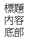
組件對應的模板代碼是這樣的
1 2 3 4 5 6 7 8 9 <div > <div > 標題</div > <div > 內容 </div > <div > 底部 </div > </div >
投影一塊內容 但是，我希望把面板里面的標題設計成可變的，讓調用者能把這個標是傳進來，而不是直接寫死。這時候“內容投影” 機制就派上用場了，可以這樣來編寫組件的模板
1 2 3 4 5 6 7 8 9 10 <div > <ng-content > </ng-content > <div > 內容 </div > <div > 底部 </div > </div >
請注意以上模板里面的，可以把它想象成一個占位符，我們用它先來占住一塊空間，等使用時把參數傳遞進來之後，再用直實的內容來替換它。使用時可以這樣來傳遞參數：
1 2 3 <app-test-ng-content > <div > 最簡單的投影</div > </app-test-ng-content >
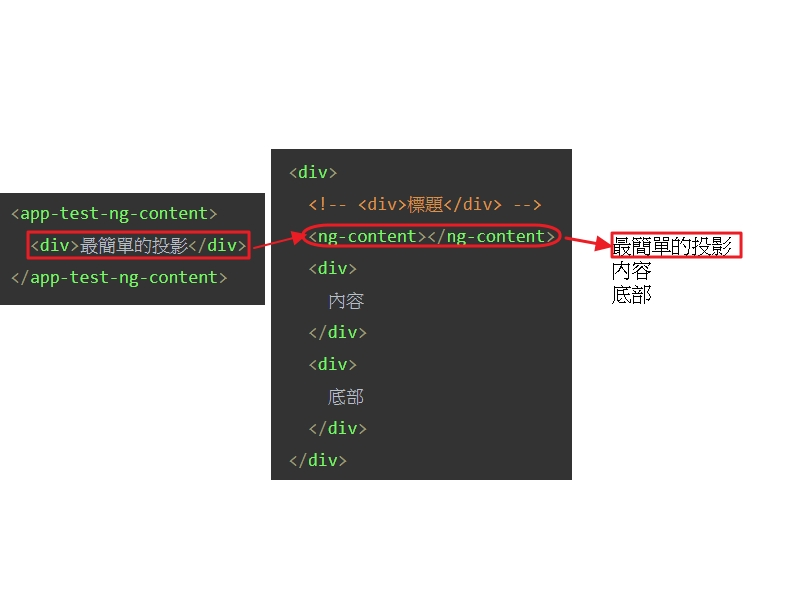
從上圖可以知道，先有佔位符<ng-content></ng-content>之後在使用時，直接可以設定，當然也可以設定元件先立建立元件
1 ng g component lession2-9/ChildOne
在src\app\lession2-9\child-one\child-one.component.html
1 2 3 4 5 6 <div style ="border:2px; border-style:solid;;border-color: aqua;" > <div > 這是投影進去的子組件</div > <div > <button (click )="sayHello()" > sayHello</button > </div > </div >
在src\app\lession2-9\child-one\child-one.component.ts
1 2 3 4 5 6 7 8 9 10 11 12 13 14 15 import { Component, OnInit, EventEmitter, Output } from '@angular/core' ;@Component ({ selector: 'app-child-one' , templateUrl: './child-one.component.html' , styleUrls: ['./child-one.component.scss' ] }) export class ChildOneComponent implements OnInit { @Output () myEvent = new EventEmitter<string >(); constructor ( ngOnInit() { } sayHello() { this .myEvent.emit("被投影的子組件也可以發射事件…" ); } }
在使用上在src\app\app.component.html
1 2 3 <app-test-ng-content > <app-child-one (myEvent )="fatherDoSomething($event)" > </app-child-one > </app-test-ng-content >
一樣可以收到子組件發射的事件。
投影多塊內容 接著問題又來了。我不僅希望面板的標題部分是動態的，還希望面板的主體區域和底部區域全部是動態的。應該怎實現呢？
可以這樣來修改在src\app\lession2-9\test-ng-content\test-ng-content.component.html
1 2 3 4 5 6 7 8 9 10 <div > <ng-content select ="h3" > </ng-content > <div > <ng-content select =".my-class" > </ng-content > </div > <div > <ng-content select ="p" > </ng-content > </div > </div >
可以這樣來使用在src\app\app.component.html
1 2 3 4 5 6 <app-test-ng-content > <h3 > 這是父層投影進來的內容</h3 > <p class =my-class > 利用CSS選擇器</p > <p > 這是底部內容</p > </app-test-ng-content >
里面的那個select參數，其作用和CSS選擇器非常類似
這重投影多塊內容的方式叫“多插槽式” （multi-slot）,可以把它想象成一個一個的插槽，內容會被插入到這些插槽里面。
投影一個複雜的組件 先來建立一個資料夾ng-content和建立一個測試的元件
1 ng g component lession2-9/ng-content/TestNgContent2
在src\app\app.component.html中
1 2 3 4 5 6 7 8 9 10 11 12 13 14 15 16 17 18 <test-ng-content2 > </test-ng-content2 >
到這鋰還沒完，我不僅僅投影簡單的HTML標籤到子層組件里面，還希望把自已編寫的一個組件投影進法，那又應該怎麼辦呢？
先來建立一個元件
1 ng g component lession2-9/ng-content/ChildTwo
在src\app\lession2-9\ng-content\child-two\child-two.component.html中
1 2 3 4 5 6 7 8 9 10 11 <div > <div > <ng-content select ="h3" > </ng-content > </div > <div > <ng-content select ="test-child-three" > </ng-content > </div > <div > <ng-content select ="p" > </ng-content > </div > </div >
在來產生一個元件
1 ng g component lession2-9/ng-content/ChildThree
在src\app\lession2-9\ng-content\child-three\child-three.component.html
1 2 3 4 5 6 7 8 <div style ="border: 2px;border-style: solid; border-top-color: blue;" > <div > 這是被投影的自定義組件 </div > <div > <button (click )="sayHello()" > sayHello</button > </div > </div >
在src\app\lession2-9\ng-content\child-three\child-three.component.ts
1 2 3 4 5 6 7 8 9 10 11 12 13 14 15 16 17 import { Component, OnInit, Output, EventEmitter } from '@angular/core' ;@Component ({ selector: 'test-child-three' , templateUrl: './child-three.component.html' , styleUrls: ['./child-three.component.scss' ] }) export class ChildThreeComponent implements OnInit { @Output () sayhello = new EventEmitter<any >(); constructor ( ngOnInit() { } sayHello() { this .sayhello.emit("sayHello" ); } }
可以這樣使用src\app\lession2-9\ng-content\test-ng-content2\test-ng-content2.component.html
1 2 3 4 5 <app-child-two > <h3 > 這是父層投影進來的內容</h3 > <test-child-three (sayhello )="doSomething($event)" > </test-child-three > <p > 這是底部內容</p > </app-child-two >
在src\app\lession2-9\ng-content\test-ng-content2\test-ng-content2.component.ts中
1 2 3 4 5 6 7 8 9 10 11 12 13 14 import { Component, OnInit } from '@angular/core' ;@Component ({ selector: 'test-ng-content2' , templateUrl: './test-ng-content2.component.html' , styleUrls: ['./test-ng-content2.component.scss' ] }) export class TestNgContent2Component implements OnInit { constructor ( ngOnInit() { } doSomething(ev) { console .log(ev) } }
這是運行起來效果
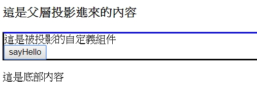
請注意，里面的內容，把select屬性設置成了子組件的名稱
同時，對於被投影的組件來說，我們同樣可以利用小圓括號的方式來進行事件綁定，就像上面例子里的(sayhello="doSomething()")這樣。
內容投影這個特性存在的意義是什麼 如果沒有“內容投影”特性我們也能活得很好，那麼它就沒有存在的必要了，而事實并非如此，如果沒有“內容投影”，有些事情沒法做了，典型的有兩類：
組件標籤不能嵌套使用
不能優雅地包裝原生的HTML標籤
依次解釋如下。
比如編寫了兩個組件my-comp-1和my-comp-2,如果沒有內容投影，這兩個組件就沒辦法嵌套使用，比如這樣用就不行：
1 2 3 <my-comp-1 > <my-comp-2 > <my-comp-2 > </my-comp-1 >
因為沒有“內容投影”机制，my-comp-1無法感知到my-comp-2的存在，也無法和它進行交互。這明顯有違HTML設計的初衷，因為HTML的本質是一 種XML格式，標籤能嵌套是最基本的特性，原生的HTML本身就有很多嵌套的情況。
1 2 3 4 5 <ul > <li > 神族</li > <li > 人族</li > <li > 蟲族</li > </ul >
在直實的業務開發里面，另一個典型的嵌套組件就是Tab頁，以下代碼是很常見的：
1 2 3 4 5 <tab > <pane title ="第一個標籤頁" /> <pane title ="第二個標籤頁" /> <pane title ="第三個標籤頁" /> </tab >
如果沒有內容投影機制，想要這樣嵌套地使用自定義標籤也是不可能的。
內容投影存在的第二個意義與組件的封裝有關。
雖然Angular提供了＠Component裝飾讓開發者可以自定義標籤，但是請不要忘記，自定義標籤畢竟與HTML原生標籤不一樣，原生HTML標籤上面默認帶有很多屬性、事件而我自定義的標籤是沒有的。
從宏觀的角度看，所有自定義的標籤都只不過是層“虛擬的殼子”，瀏覽器并不認識自定義標籤，直正渲染出來的還是dvi, form,input之類的原生標籤。因此，自定標籤只不過是一層邏輯上的抽象和包裝，讓人類更容易理解和組織自已的代碼而已。
既然如此，自定義標籤和HTML原生標籤之間的關系是什麼呢？本質上說，這是“裝飾模式”的一種應用，而內容投影存在的意義就是可以讓這個“裝飾”的過程個得更加省力，更加優雅一些。
最後 我們已經學會了內容投影最基本的用去。但是故事并沒有結束，接下來的問題又來了。
如何訪問投影進來的復雜組件？比如，如何訪問被監聽組件上的public屬性？如何監聽被投影組件上的事件？接下來的內容𧚱來解決這個問題。
如何訪問投影進來的HTML元素？比如，如何給被投影進來的HTML元素添如CSS樣式？這個話題反而比訪問被投影組件要復雜一些。我們在講指令這一課中會給出例子來描述。
lession2-10:@ContentChild & @ContentChildren 我們可以利用 @ContentChild這個裝飾器來操控被投影進來的組件。
@ContentChild 先來建立測試主顯示元件
1 ng g component lession2-10/TestContentChild
建立兩個測試元件
1 2 ng g component lession2-10/ChildOne2t10 ng g component lession2-10/ChildTwo2t10
我們可以利用＠ContentChild這個裝飾器來操控被投影進來的組件。
在src\app\lession2-10\test-content-child\test-content-child.component.html中
1 2 3 4 5 6 7 8 9 10 <div > <div > 父組件</div > <div > <app-child-one2t10 > <h3 > 投影的標題</h3 > <p > 投影的底部</p > <app-child-two2t10 > </app-child-two2t10 > </app-child-one2t10 > </div > </div >
在src\app\lession2-10\child-one2t10\child-one2t10.component.ts中
1 2 3 4 5 6 7 8 9 10 11 12 13 14 15 16 17 18 19 20 21 22 23 import { Component, OnInit, ContentChild, AfterContentInit } from '@angular/core' ;import { ChildTwo2t10Component } from '../child-two2t10/child-two2t10.component' ;@Component ({ selector: 'app-child-one2t10' , templateUrl: './child-one2t10.component.html' , styleUrls: ['./child-one2t10.component.scss' ] }) export class ChildOne2t10Component implements OnInit, AfterContentInit { @ContentChild (ChildTwo2t10Component) childtwo: ChildTwo2t10Component; constructor ( ngOnInit() { } ngAfterContentInit(): void { console .log(this .childtwo); } }
@ContentChildren 從名字可以看出來，＠ContentChildred是一個複數形式，當被投影進來的是一個組件列表的時候，我們可以用@ContenChildren來進行操控。
在src\app\lession2-10\test-content-child\test-content-child.component.html
1 2 3 4 5 6 7 8 9 10 11 12 13 14 15 16 <div > <div > 父組件</div > <div > <app-child-one2t10 > <h3 > 投影的標題</h3 > <p > 投影的底部</p > <app-child-two2t10 > </app-child-two2t10 > <app-child-two2t10 > </app-child-two2t10 > <app-child-two2t10 > </app-child-two2t10 > <app-child-two2t10 > </app-child-two2t10 > <app-child-two2t10 > </app-child-two2t10 > <app-child-two2t10 > </app-child-two2t10 > <app-child-two2t10 > </app-child-two2t10 > </app-child-one2t10 > </div > </div >
在src\app\lession2-10\child-one2t10\child-one2t10.component.ts中
1 2 3 4 5 6 7 8 9 10 11 12 13 14 15 16 17 18 19 20 21 22 23 24 25 26 27 28 29 import { Component, OnInit, ContentChild, AfterContentInit, ContentChildren, QueryList } from '@angular/core' ;import { ChildTwo2t10Component } from '../child-two2t10/child-two2t10.component' ;@Component ({ selector: 'app-child-one2t10' , templateUrl: './child-one2t10.component.html' , styleUrls: ['./child-one2t10.component.scss' ] }) export class ChildOne2t10Component implements OnInit, AfterContentInit { @ContentChildren (ChildTwo2t10Component) childrenTwo: QueryList; constructor ( ngOnInit() { } ngAfterContentInit(): void { this .childrenTwo.forEach(item => console .log(item); }); } }
lession2-11:@ViewChild & ViewChildren @ViewChild 我們可以利用＠ViewChild這個裝飾器來操控直屬的子組件。
先來建立測試元件
1 ng g component lession2-11/TestViewChild
在建立子元件
1 ng g component lession2-11/ChilOne2a11
我們可以利用＠ViewChild這個裝飾器來操控直屬性的子組件。
在src\app\lession2-11\test-view-child\test-view-child.component.html
1 2 3 4 5 6 <div > <div > 父組件</div > <div > <app-chil-one2a11 > </app-chil-one2a11 > </div > </div >
在src\app\lession2-11\chil-one2a11\chil-one2a11.component.html
1 2 3 4 5 6 <div > <div > {{title}}</div > <div > <button (click )="sayHello()" > 觸發事件</button > </div > </div >
在src\app\lession2-11\chil-one2a11\chil-one2a11.component.ts
1 2 3 4 5 6 7 8 9 10 11 12 13 14 15 16 17 18 19 20 21 22 import { Component, OnInit, Input, Output, EventEmitter } from '@angular/core' ;@Component ({ selector: 'app-chil-one2a11' , templateUrl: './chil-one2a11.component.html' , styleUrls: ['./chil-one2a11.component.scss' ] }) export class ChilOne2a11Component implements OnInit { id: string ; @Input () title: string = "我是ChildOne" ; @Output () helloEvent = new EventEmitter<string >(); constructor ( this .id = "ID-" + Math .floor(Math .random() * 100000000 ); } ngOnInit() { } sayHello() { this .helloEvent.emit(this .id); } }
@ViewChildren
在src\app\lession2-11\test-view-child\test-view-child.component.html
1 2 3 4 5 6 7 8 9 10 11 12 13 <div > <div > 父組件</div > <div > <app-chil-one2a11 > </app-chil-one2a11 > <app-chil-one2a11 > </app-chil-one2a11 > <app-chil-one2a11 > </app-chil-one2a11 > <app-chil-one2a11 > </app-chil-one2a11 > <app-chil-one2a11 > </app-chil-one2a11 > <app-chil-one2a11 > </app-chil-one2a11 > <app-chil-one2a11 > </app-chil-one2a11 > <app-chil-one2a11 > </app-chil-one2a11 > </div > </div >
在src\app\lession2-11\test-view-child\test-view-child.component.ts
1 2 3 4 5 6 7 8 9 10 11 12 13 14 15 16 17 18 19 20 21 22 23 24 25 26 27 28 29 30 31 32 33 34 35 import { Component, OnInit, ViewChild, AfterViewInit, ViewChildren, QueryList } from '@angular/core' ;import { ChilOne2a11Component } from '../chil-one2a11/chil-one2a11.component' ;@Component ({ selector: 'app-test-view-child' , templateUrl: './test-view-child.component.html' , styleUrls: ['./test-view-child.component.scss' ] }) export class TestViewChildComponent implements OnInit, AfterViewInit { @ViewChildren (ChilOne2a11Component) children: QueryList<ChilOne2a11Component>; constructor ( ngOnInit() { } ngAfterViewInit(): void { this .children.forEach(item => item.helloEvent.subscribe(data => console .log(data); }); }); } }
lession2-12:與Polymer封裝組件的方式簡單對比 這部份因為我本身沒有經驗，而作者有此經驗，我只是轉錄一下。
一些開發者認為Angular的組件設計不如Polymer那種直接繼承原生HTMLElement的方式優雅，Polymer的這種封裝下式和目前市面上大部分前端框架都不一樣，Polymer直托繼承原生HTML元素，而其它大部分框架都只是在“包裝”，“裝飾”原生HTML元素，這是兩種完全不同的設計哲學。Polymer Project網站
lession2-13:封裝并發佈組件庫 市面上可用的Angular組件庫介紹
開源免費的組件庫：
收買版組件庫：
如何把組件庫發佈到npm上去 有朋友問過一個問題，他覺得npm很神奇，比如，當我們在終端里輸入以下命令的時候：
1 npm install -g @angular/cli
npm 就會自動報找到@angular/cli並安裝，看起來很神奇的樣子。
其實，背後的處理過很簡單，npm官方有一個個定的registry url,可以色它的作用想象成一個App Store，全球所有開發者編寫的Node模塊都需要發佈上去，然後其他人能安裝使用。
如果你開發一個很強大的Angular組件庫，希望發佈到Node上面讓其他人也能使用，應該怎麼做呢？簡略地處理步驟如下：
第1步：用npm init初始化項目（只要項目里面按照npm的規範編寫一份package.json文件就可以了，不一定用npm init初始化）
第2步：編寫自已的代碼
第3步：到https://www.npmjs.com/ 網站上註冊一個帳號
第4步：用npm publish把項目push上去。
publish之後，全球開發者都可以通過名字查找並安裝你的這個模塊。
分享一些小小的經驗 這是作者的經驗，不是我的
在我的上一家公司工作期間，我曾經參與並顉導過不司兩代前端框架的組件庫設計和維護，涉及到jQuery,Flex等多個技術體系，從2011年開始計算，整個維護週期已經有6年多。
我自亡也從零開始編寫過一款頁面流程圖組件庫，整體大常1.9萬行AS3代碼，至今仍在公司幾十個產品里面運行。
因此，我特別想談一談兩個常見的誤區 ，具體如下。
第一個誤區：開源組件可以滿足你的所有需求，我可以負責任地告訴你，這是不可能的，開源組件庫都是通用型的組件，並不會針對依何特定的行業或者領域進行設計。無論選擇㖀一款開源組件庫，組件的外觀里面的那些bug總得自已去改掉吧，因此，千萬不要幻想開源組件能幫你解決所有問題，二次開發是必然的。
第二個誤區：開發組件庫很簡單，分鐘可以搞定。在jQuery時代，有款功能極其強大的樹組件叫zTree，點擊查看詳情 ，你能想到的那些功能zTree都實現了，而且運行效率特別高。但是你要知道，zTree的作者已經花了超過5年的時間來維護這個組件，維護一個組件尚且如此，何況要長期維護一個龐大的庫呢？因此，做好一個組件庫並不像有些人想象的那麼輕鬆，這件事是需要花錢，花時間的。做開源，最讓使用者頭疼的不是功能夠不夠強大，而是開發者突然棄坑，這也是很多企業寧願自已開發組件庫的原因。如果你只是單兵作戰，最好選一款現有的開源庫，在基礎上繼續開發，強烈建議你只做一個組件 ，就像zTree的作者那樣，把一個組件做好，做透，并且長期維護下去，這就搞一個龐大的組件庫，每個組件做得像個玩具，然後突然棄坑要好很多。
lession3-1:指令簡介 組件與指令之間的關系
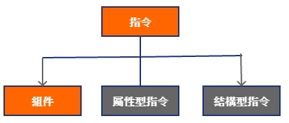
根據Angular官方文檔的描述，Angular里面有3種類型的指令。
Component是Directive的子接品，是一種特殊的指令，Component可以帶有HTML模板，Directive不能有模板。
屬性型指令：用來修改DOM元素的外觀和行為，但是不會改變DOM結構，Angular內置指令里面典型的屬性指令有ngClass,ngStyle，如果打算封裝自已的組件庫，屬性型指令是必備的內容。
結構型指令：可以修改DOM結構，內置的常用結構型指令有ngFor *ngIf ngSwitch。由于結構型指令會修改DOM結構，因而同一個HTML標籤上面不能同時使用多個結構型指令，否則大家都來改DOM結構，到底聽誰的呢？如果要在同一個HTML元素上面使用多個結構型指令，可以考慮加一層空的元素來嵌套，比如在外面套一層空的。
有了組件為什麼還要指令 請注意：即使你認真，仔細地看完以上內容。依然感到非常茫然。因為有一個最根本的問題，在所有文檔都沒有給出明確的解釋，這個問題也是很多開發者經常問的，那就是：既然有了組件（Component），為什麼還要指令（Directive）？
我們知道，在很多UI框架里面，并沒有指令的概念，它們的基類都是從Component開始的，比如
Swing里面基類名用就𣢯Component，沒有指令的概念。
ExtJS里面基類是Ext.Component，沒有指令的概念。
Flex里面基類名字叫UIComponent，沒有指令的概念。
React里面基類名字叫React.Component，沒有指令的概念。
上面這些框架走的是組件化的路子，Swing和ExtJS完全是“代碼流”，所有UI都通過代碼來創建； 而Flex和React是“標籤流”，也就是通過標籤的方式來創建UI。
但是，所有這些框架都沒有“指令”這個概念，為什麼Angular里面一定要引入“指令”這個概念呢？
根本原因是：我們需要用指令來增強標籤的功能，包括HTML原生標籤和你自已定義的標籤。
lession3-2:自定義指令 這是官方文檔里面的一個例子，運行效果如下
先來產生directives的元件
1 ng g directive lession2-3/directives/MyHighLight
在src\app\lession2-3\directives\my-high-light.directive.ts中
1 2 3 4 5 6 7 8 9 10 11 12 13 14 15 16 17 18 19 import { Directive, Input, ElementRef, HostListener } from '@angular/core' ;@Directive ({ selector: '[MyHighLight]' }) export class MyHighLightDirective { @Input () highligtColor: string ; constructor (private el: ElementRef @HostListener ('mouseenter' ) onMouserEnter() { this .highlight(this .highligtColor); } @HostListener ('mouseleave' ) onMouseLeave() { this .highlight(null ); } private highlight(color: string ) { this .el.nativeElement.style.backgroundColor = color; } }
以上指令的用法
1 2 <p MyHighLight highligtColor ="#ff3300" > 內容高亮顯示</p >
自定結構型指令 這個例子會動態創建3個組件，每個延遲500毫秒
先來產生directive元件
1 ng g directive lession3-2/Delay
再來產生顯示元件
1 ng g component lession3-2/Card
在src\app\lession3-2\card\card.component.ts的顯示元件
1 2 3 4 5 6 7 8 9 10 11 12 13 14 15 16 17 18 19 20 21 22 23 24 25 26 27 28 import { Component, OnInit } from '@angular/core' ;@Component ({ selector: 'app-card' , templateUrl: './card.component.html' , styles: [` :host{ padding: 2rem; font-size: 2rem; font-family: 'Helvetica', sans-serif; font-weight: 300; background: #337AB7; color: #FFFFFF; margin: 1rem; display: inline-block; } ` ]}) export class CardComponent implements OnInit { constructor ( ngOnInit() { console .log('card component loaded' ); } }
在src\app\lession3-2\card\card.component.html的html
1 <ng-content > </ng-content >
在src\app\lession3-2\directives\delay.directive.ts指令的代碼
1 2 3 4 5 6 7 8 9 10 11 12 13 14 15 16 17 import { Directive, ViewContainerRef, TemplateRef, Input } from '@angular/core' ;@Directive ({ selector: '[appDelay]' }) export class DelayDirective { constructor ( private templateRef: TemplateRef<any >, private viewContainerRef: ViewContainerRef, ) { } @Input () set appDelay(time: number ) { setTimeout(() => this .viewContainerRef.createEmbeddedView(this .templateRef); }, time); } }
指令的用法㤥心代碼:
1 2 3 4 5 <div *ngFor ="let item of [1,2,3]" > <app-card *appDelay ="500 * item" > 第{{item}}張卡片 </app-card > </div >
結構型指令在使用的時候前面都會帶上星號，即使是你自定義的結構性指令，也是一樣的。
小結 強烈建議仔細閱讀官方文檔里面的關于Directive細節描述，點擊
lession3-3:直接在組件里面操作DOM 有一個常見的問題：既然組件是指令的子類，那麼指令里面能做的事，組件應該都能做，我可以在指令里面直接操作DOM嗎？
答案是肯定的。
我們來修亡一下上一課里面的例子。直接在組件里面來實現背景高交果，先來建立測試元件
1 ng g component lession3-3/test3a3
關鍵代碼src\app\lession3-3\test3a3\test3a3.component.ts
1 2 3 4 5 6 7 8 9 10 11 12 13 14 15 16 17 18 19 20 21 22 23 24 25 26 27 28 29 30 31 32 33 34 35 import { Component, OnInit, Input, ElementRef, AfterContentInit, HostListener } from '@angular/core' ;@Component ({ selector: 'app-test3a3' , templateUrl: './test3a3.component.html' , styleUrls: ['./test3a3.component.scss' ] }) export class Test3a3Component implements OnInit, AfterContentInit { @Input () highlightColor: string ; private containerEl: any ; constructor (private el: ElementRef ngOnInit() { } ngAfterContentInit(): void { console .log(this .el.nativeElement); console .log(this .el.nativeElement.childNodes); console .log(this .el.nativeElement.childNodes[0 ]); console .log(this .el.nativeElement.innerHTML); this .containerEl = this .el.nativeElement.childNodes[0 ]; } @HostListener ('mouseenter' ) onMouseEnter() { this .highlight(this .highlightColor); } @HostListener ('mouseleave' ) onMouseLeave() { this .highlight(null ); } private highlight(color: string ) { this .containerEl.style.backgroundColor = color; } }
在src\app\lession3-3\test3a3\test3a3.component.html
1 2 3 <div > 滑鼠移進來就會改變背景 </div >
這個組件的使用方法如下
1 2 3 4 <app-test3a3 highlightColor ="#F2DEDE" > </app-test3a3 >
可以看到，直接在組件里面操作DOM是可以的，但是一旦把操作DOM的這部分的邏輯放在組件里面，就沒辦法再其他標籤上面使用了。
lession4:模塊＠NgModule 我不想把NgModule的所有API都列在𫍇里，那樣的話這節課就沒什麼存在的意義了。關於NgModule的十萬個為什麼，官方編寫了一份很長的文檔來做說明，具體詳見這里
但是請特別注意，看完這節課的內容之後再去閱讀官方的文檔，那樣你會站在一個高層的視角去面對那些瑣碎的細節，保証不會迷失方向。
@NgModule的定義方式 看一個最簡單的＠NgModule的定義
1 2 3 4 5 6 7 8 9 10 11 12 13 14 15 16 17 18 19 20 21 22 23 24 25 import { BrowserModule } from '@angular/platform-browser' ;import { NgModule } from '@angular/core' ;import { BrowserAnimationsModule } from '@angular/platform-browser/animations' ;import { AppRoutingModule } from './app-routing.module' ;import { AppComponent } from './app.component' ;import { FormsModule } from '@angular/forms' ;import { TestViewChildComponent } from './lession2-11/test-view-child/test-view-child.component' ;@NgModule ({ declarations: [ AppComponent, TestViewChildComponent, ], imports: [ BrowserModule, BrowserAnimationsModule, FormsModule, AppRoutingModule ], providers: [], bootstrap: [AppComponent], entryComponents: [Child11Component] }) export class AppModule { }
其中：
declarations，用來放組件、指令、管道的聲明；
imports，用來導入外部模塊；
provides，需要使用的Service都放在這里；
bootstrap，定義啟動組件，你可能注意到了這個配置項是一個數組，也就是說可以指定個個組件作為啟動點，但是這種用法是很罕見的。
@NgModule的重要作用 在Angular中，Ngmodule有以下幾個重要的作用
NgModule最根本的意義是幫助開發者組織業務代碼 ，開發者可以利用NgModule把關系比較緊密的組件組織到一起，這是首要的。NgModule用來控制組件、指令、管道等的可見性，處於同一個NgModule里面的組件默認互相可見，而對於外部的組件來說，只能看到NgModule導出（exports）的內容，這一特性非常類似Java里面package的概念。也就是說，如果你定義的NgModule不exports任何內容，那麼外部使用者既使import了你這個模塊，也沒法使用里面定義的任何內容。
NgModule是＠angular/cli打包的最小單位。 打包的時候，＠angular/cli會檢查所有＠NgModule和路由配置，如果你配置了異步模塊，cli會自動把模塊切分成獨立的chunk（塊）。這一點是和其它框架不同的。其他框架基本上都需要你自已去配置Webpack，自已定義切分chunck的規則； 而在Angular里面，打包和切分的動作是＠angular/cli自動處理的，不需要你干預，當然，如你感到不爽，也可以自已從頭用Webpack配一個環境出來，因為＠angular/cli底層用的也是Webpack。NgModule是Router進行異步加載的最小單位，Router能加載的最小單位是模塊，而不是組件 。當然，模塊悲面只放一個組件是允許的，很組件庫都是這樣做的。
@NgModule的注意點
每個應用至少有一個根模塊，按照慣例，根模塊的名字一般都叫AppModule，如果沒有非常特別的理由，就不要隨意改這個名字，這相當於一個國際慣例。
組件、指令、管道都必須屬於一個模塊，而且只能屬於一個模塊。
NgModule和ES6里面的Module是完全不同的兩個概念。ES6里面的模塊是通過export和import來進行聲明的，它們是語法層面的內容；而NgModule完全不是個概念，從上面的作用列表也能看出來。最重要的一點，目前，ES6里想的import只能靜態引入模塊，并不能異步動態加載模壞，而NgModule可以配合Router來進行異步模塊加載，在後面的Router這一課里面會有實例代碼。
模塊的定義方式會影響依賴注入機制； 對於直接import的同步模，無論把＠Injectable類型的組件定義在哪個模塊里面，它都是全局可見的。比如，在子模塊poat.module.ts的provides數組里面定義了一個PostListService，可能會覺得這個PostListService只有在post.module.ts里面可見，而事實并非如此，PostListService是全局可見的，就相當於一個全局單例。與此對應，如果把PostLiseService定義到一個異步加載的模塊里面，它就不是全局可見的了，因為對於異步加載進來的模塊，Angular會為它創建獨立的DI（依賴注入）上下文。所以，如果你想讓PostListService全局可見，應該把它義在根模塊app.module里面。同時要特別注意，如果希望PostListService是全局單例的。只能在app.module里面的providers數組里面定義一次，而不能在其他模塊里面再次定義，否則就會出現多個不同的實例。
Angula內核中的目錄結構 Angular本身也是用模塊化的方式開發的，當然你用npm install裝好了開投環境之後，可以打開node_modules目錄查看整體結構，左側第一列6個目錄比較常用，這個順序是按照我自已的理解排列列，按照常用程度從上到下。
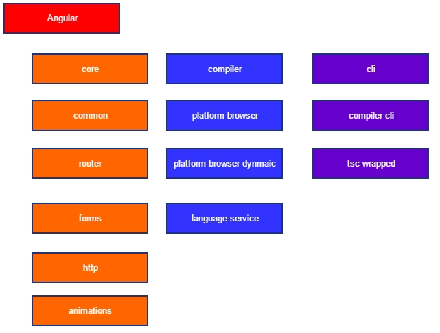
請注意，一個目錄里可能會放多個模塊，比如forms目錄面就有FormsModuls和ReactiveFormsModeule兩個模塊。
lession5-1:路由概述 我儘量把Router叫做“路由”或者“路由機制”，而不叫“路由器”，因為我總感覺“路由器”是一種網路設備，在前端開發領域叫“路由器”怪怪的。
請特別注意：Angular中的Router模塊會負責模塊的加載、組件的初始化、銷毀等操作，它是整個樂隊的總指揮。
前端為什麼要路由 我發現很多開發者代碼寫得很溜，但題并不理解為什麼要Router這個機制。
在目前的前端開發顉域，無論你使用那一種框架，“路由”都是一個繞不開的機制。那麼，前端為什麼一定要路由機制？舉兩個簡單的例子來幫助理解。
如果沒有Router，瀏覽器的前進後按鈕沒法用。做過後台管理系統的開發都應該遇到過這種場景，整個系統只有一個login.jsp和index.jsp，用戶從login.jsp登錄完成之後，跳轉到index.jsp上面，然後瀏覽地址欄里面的URL就一直停留在index.jsp上面，頁面內部的所有內容全部通過Ajax進行刷新。這種處理方式實際上把瀏覽器的URL机制給癈掉了，整個系統只有一個URL，用戶完全無法通過瀏覽器的前進、後退按鈕進行導航。
如果沒有Router你將無法把URL復制并分享給你朋友。比如在某段子網站上看到了一個很搞笑的內容，你把URL復制下來分享給了你的朋友，如果這個段子網站沒有做好路由機級，你的朋友將無法順利打開這個鏈接。
Router的本質是記錄當前頁面的狀態，它和當前頁面上展示的內容一一對應。
在Angular里面，Router是一個獨立的模塊，定義在＠angular/router模塊里面，它有以下重要的作用：
Router可以配合NgModule進行模塊的懶加載、預加載操作。
Router會管理組件的生命週期，它會負責創建、銷毀組件。
服務端的配置 很多開發者會遇到這個問題：代碼在開發狀態進行得好好的，但是部署到直實的環境上之後所有路由都404。
這是一個非常典型的問題，你需要配置一下Server才能很好地持前端路由。
你想啊，既然啟用了前端路由，也就是意味著瀏覽器地址欄里面的那些URL在Server端并沒有直正的資源和它對應，直接訪問過去當然404了。
以Tomcat為例，而要在web.xml里面加一段配直：
1 2 3 4 <error‐page > <error‐code > 404</error‐code > <location > /</location > </error‐page >
這意思就是當訴Tomcat，對於404這種事你別管了，直接扔回前端去，由於Angular已經在瀏覽器里接管了路由機制，因而接下來就由Angular來負責了。
如果你正在使用其它的Web容器，這從這個鏈接里面查找對應的配方式 ，在How to:Configure your server to work with html5Mode這個小節里面把常見的Web容器的配置方式都列舉出來，包括IIS、Apache、Nginx、NodeJS、Tomcat全部都有，過去抄過來就行。
小結 Angular新版的路由機制極其強大，除了能支持無限嵌套之外，還能支持模塊賴加載、預加載、權限控制、輔助路由等高級功能，在接下來的幾個課里面我們就來寫例子一一演示。
Angular Router模塊的作者是Victor Savkin，他的個人Blog ，他專門編寫了一本小薄書來冗整描述Angular路由模塊設計思路和運行原理這本書只有151頁，如果有興趣
lession5-2:路由的使用 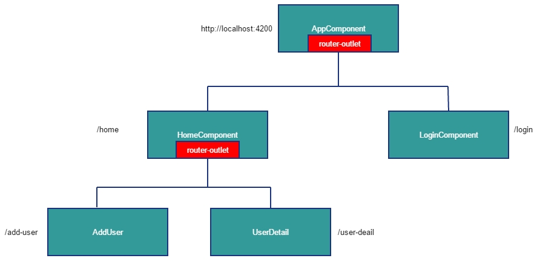
路由的基本用法 我們從最簡單的例子開始，第一個例子的運行效果如下：
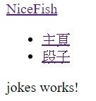
代碼結構，建立Home元件和Jokes元件
1 2 ng g component Home ng g component Jokes
再寫路由規則配置src\app\app-routing.module.ts，內容如下:
1 2 3 4 5 6 7 8 9 10 11 12 13 14 15 16 17 18 19 20 21 import { NgModule } from '@angular/core' ;import { Routes, RouterModule } from '@angular/router' ;import { HomeComponent } from './home/home.component' ;import { JokesComponent } from './jokes/jokes.component' ;const routes: Routes = [ { path: '' , redirectTo: 'home' , pathMatch: 'full' }, { path: 'home' , component: HomeComponent }, { path: 'jokes' , component: JokesComponent }, { path: '**' , component: HomeComponent }, ]; @NgModule ({ imports: [ RouterModule.forRoot(routes, { enableTracing: true }), ], exports: [RouterModule] }) export class AppRoutingModule { }
在app.module.ts里面首先需要import這份路由配文件：
1 2 3 4 5 6 7 8 9 10 11 12 13 14 15 16 17 18 19 20 21 22 23 import { BrowserModule } from '@angular/platform-browser' ;import { NgModule } from '@angular/core' ;import { AppRoutingModule } from './app-routing.module' ;import { AppComponent } from './app.component' ;import { HomeComponent } from './home/home.component' ;import { JokesComponent } from './jokes/jokes.component' ;@NgModule ({ declarations: [ AppComponent, HomeComponent, JokesComponent, ], imports: [ BrowserModule, AppRoutingModule ], providers: [], bootstrap: [AppComponent], entryComponents: [] }) export class AppModule { }
在src\app\app.component.html
1 2 3 4 5 6 7 8 9 10 11 12 13 14 15 16 17 18 <div > <a routerLink ="home" > NiceFish</a > <div > <ul > <li > <a [routerLink ]="['/home']" routerLinkActive ="router-link-active" > 主頁</a > </li > <li > <a [routerLink ]="['/jokes']" routerLinkActive ="router-link-active" > 段子</a > </li > </ul > </div > </div > <div > <router-outlet > </router-outlet > </div >
這個例子得重點如下
整個導航過程是通過RouterModule，app-routing.module.ts，routerLink,router-outlet這幾個東西一起配合完成的。
請單擊頂部導航條，觀察瀏覽器地址欄里面URL的變化，這里體現的是Router模塊最重要的作用，𧚱是對URL和對應界面狀態的管理。
請注意路由配配置文件app-routing.module.ts里面的寫法，里面全部用的component配置項，這種方式叫“同步路由”。也就是說，＠angular/cli在編譯的時候不會組件切分到獨立的chunk（塊）文件里面去，當然也不會異步加載，所有的組件都會被打包到一份js文件里面去，請看下圖：
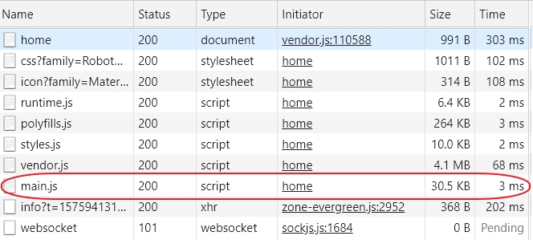
你可能會問，如果想要做成異步模塊該怎麼做呢?不要著急，下一段里面會舉例子。
注意文件的切分，我看到很多開發者會把路由配置直接寫在app.modult.ts里面，這樣不太好，因為隨著項目功能越來越多，全部寫在一起未來不好維護。配置歸配置，代碼歸代碼，文件盡量切清晰一些，坑誰也別坑自已對吧？
通配符配置必須寫在最後通項， 否則會導致路由為效。
路由與懶加載模塊 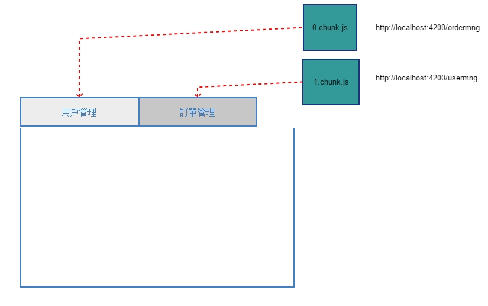
為什麼要做模塊的懶加載？
目的很簡單：提升JS文件的加載速度，提升JS文件的執行效率。
對𠲇一些大型的後台管理系統來說，里面可能會有上千份JS文件，如果把所有JS𠔃部壓縮到一份文件里面，那麼文件的體積可能會超過5M，這是不能接再，尤其對於移動端應用。
因此，一個很自然的想法就是：我們能不能按照業務功能這些JS打包成多份JS文件，當用戶導航到某路徑的時候，再去異步加載對應JS文件。對於大型的系統來說，用戶在使用的過程中不太可能會用到所有功能，所以這動方式可以非常有效地提升系統的加載和運行效率。
我們來把上面這個簡單的例子改成異步模式，把“主頁”和“段子”切分成兩個獨立的模塊，并且做成異步加載的模式。
我們給Home和Jokes分別加了一個modeul文件和一個routes文件。
1 2 ng g module home/home --routing --module --flat app ng g module jokes/jokes --route jokes/jokes --module --flat app
注意在jokes里的參數是--route,會自動的在routing的文件加入自已
在src\app\home\home\home.module.ts
1 2 3 4 5 6 7 8 9 10 11 12 13 14 15 import { NgModule } from '@angular/core' ;import { CommonModule } from '@angular/common' ;import { HomeRoutingModule } from './home-routing.module' ;import { HomeComponent } from './home.component' ;@NgModule ({ declarations: [HomeComponent], imports: [ CommonModule, HomeRoutingModule ] }) export class HomeModule { }
在src\app\home\home\home-routing.module.ts
1 2 3 4 5 6 7 8 9 10 11 12 13 14 import { NgModule } from '@angular/core' ;import { Routes, RouterModule } from '@angular/router' ;import { HomeComponent } from './home.component' ;const routes: Routes = [ { path: '' , component: HomeComponent } ]; @NgModule ({ imports: [RouterModule.forChild(routes)], exports: [RouterModule] }) export class HomeRoutingModule { }
在src\app\jokes\jokes\jokes.module.ts
1 2 3 4 5 6 7 8 9 10 11 12 13 14 15 import { NgModule } from '@angular/core' ;import { CommonModule } from '@angular/common' ;import { JokesRoutingModule } from './jokes-routing.module' ;import { JokesComponent } from './jokes.component' ;@NgModule ({ declarations: [JokesComponent], imports: [ CommonModule, JokesRoutingModule ] }) export class JokesModule { }
在src\app\jokes\jokes\jokes-routing.module.ts
1 2 3 4 5 6 7 8 9 10 11 12 13 14 import { NgModule } from '@angular/core' ;import { Routes, RouterModule } from '@angular/router' ;import { JokesComponent } from './jokes.component' ;const routes: Routes = [ { path: '' , component: JokesComponent }] ; @NgModule ({ imports: [RouterModule.forChild(routes)], exports: [RouterModule] }) export class JokesRoutingModule { }
最重要的修改在src\app\app-routing.module.ts
1 2 3 4 5 6 7 8 9 10 11 12 13 14 15 16 17 18 19 20 21 22 23 24 25 26 27 28 import { NgModule } from '@angular/core' ;import { Routes, RouterModule } from '@angular/router' ;const routes: Routes = [ { path: '' , redirectTo: 'home' , pathMatch: 'full' }, { path: 'home' , loadChildren: () =>import ('./home/home.module' ).then(m => }, { path: 'jokes' , loadChildren: () =>import ('./jokes/jokes.module' ).then(m => }, { path: '**' , loadChildren: () =>import ('./home/home.module' ).then(m => }, ]; @NgModule ({ imports: [ RouterModule.forRoot(routes, { enableTracing: true }), ], exports: [RouterModule] }) export class AppRoutingModule { }
我們匙原來component配置項改成了loadChildren。
來看運行效果
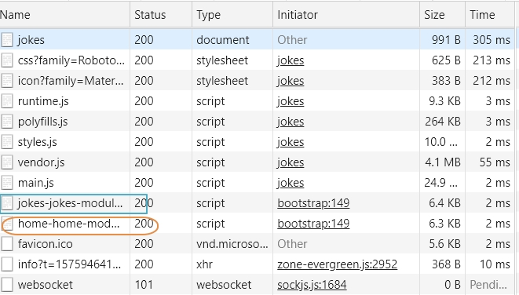
N層嵌套路由 在真實的系統，菜單肯不止一層，我們繼續修改上面的例子，給它加一個二級菜單，如下圖：
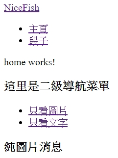
先來建立下層元件
1 2 ng g component home/Picture ng g component home/Text
在src\app\home\picture\picture.component.html
在src\app\home\text\text.component.html
重點變化在src\app\home\home-routing.module.ts有加children
1 2 3 4 5 6 7 8 9 10 11 12 13 14 15 16 17 18 19 20 21 import { NgModule } from '@angular/core' ;import { Routes, RouterModule } from '@angular/router' ;import { HomeComponent } from './home.component' ;import { PictureComponent } from './picture/picture.component' ;import { TextComponent } from './text/text.component' ;const routes: Routes = [ { path: '' , component: HomeComponent, children: [ { path: '' , redirectTo: 'pictures' , pathMatch: 'full' }, { path: 'pictures' , component: PictureComponent }, { path: 'text' , component: TextComponent }, { path: '**' , component: PictureComponent }, ] }, ]; @NgModule ({ imports: [RouterModule.forChild(routes)], exports: [RouterModule] }) export class HomeRoutingModule { }
在src\app\home\home.component.html中
1 2 3 4 5 6 7 8 9 10 11 12 13 14 15 16 17 18 <p > home works!</p > <div > <div > <div > <h3 > 這里是二級導航菜單</h3 > <ul > <li > <a routerLink ='pictures' routerLinkActive ="router-link-active" > 只看圖片</a > </li > <li > <a routerLink ='text' routerLinkActive ="router-link-active" > 只看文字</a > </li > </ul > </div > </div > <div > <router-outlet > </router-outlet > </div > </div >
理論上，路由可以無限嵌套，而實際上不可能嵌套得特別深，系統里面有一級，二級，三級菜很正常，如果你的系統做出了十級菜單，用戶還怎麼使用呢?
共享模塊 剛𢪬嵌套路由的問題搞定，此時如果需浗改了，需要在頁面上面加一個展示用戶資料的Panel（面板），就像這樣：
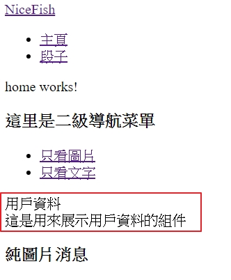
同時還提了另一個要求，這個展示用戶資料的Panle在“段子”這個模塊里面也要用，而且未來還可服在其伳地方也要使用。
這時候，該輪到“共享模塊”機制出場了。因為根據Angular的規定：組件必須定義在某個模塊里面，但是不能同時屬於多個模塊。
如果你把這個UserInfo面板定義在home.module里面，jokes.module就不能使用了，反之亦然。
當然，你可能說，這還不簡單，匙UserInfo定義在根模塊app.module里面不就好了嘛。
不錯，確實可以這樣做。但是這樣會造成一個問題：如果系統的功能不斷增多，你總不能掩所有共用的組件都放到app.module里面吧？如果真的這樣搞,app.module最終打包出來會變得非常胖。
所以，更優雅的做法是切分一個”共享模塊”出來
先來建立模組
1 ng g module _shared/Share --flat
建立UserInfo
1 ng g component _shared/UserInfo
在src\app\_shared\user-info\user-info.component.html
1 2 3 4 5 6 <div > <div > 用戶資料</div > <div > 這是用來展示用戶資料的組件 </div > </div >
在src\app\_shared\share.module.ts，將Userinfo元件exports出來
1 2 3 4 5 6 7 8 9 10 11 12 13 import { NgModule } from '@angular/core' ;import { CommonModule } from '@angular/common' ;import { UserInfoComponent } from './user-info/user-info.component' ;@NgModule ({ declarations: [UserInfoComponent], imports: [ CommonModule, ], exports: [ UserInfoComponent, ] }) export class ShareModule { }
在要使用的模組，將它import進來在src\app\home\home.module.ts
1 2 3 4 5 6 7 8 9 10 11 12 13 14 15 16 17 18 import { NgModule } from '@angular/core' ;import { CommonModule } from '@angular/common' ;import { HomeRoutingModule } from './home-routing.module' ;import { HomeComponent } from './home.component' ;import { PictureComponent } from './picture/picture.component' ;import { TextComponent } from './text/text.component' ;import { ShareModule } from '../_shared/share.module' ;@NgModule ({ declarations: [HomeComponent, PictureComponent, TextComponent], imports: [ CommonModule, ShareModule, HomeRoutingModule ] }) export class HomeModule { }
所以它下面的picture和text的元件就可以使用UserInfo這是元件
在src\app\home\picture\picture.component.html
1 2 <user-info > </user-info > <h3 > 純圖片消息</h3 >
在src\app\home\text\text.component.html
1 2 <user-info > </user-info > <h3 > 純文字消息</h3 >
可以看到所有想使用UserInfo的模塊來說，只要imports這個ShareModule就可以了。
處理路由事件 Angular的路由上面暴露了7個事件：NavigationStart、RotesRecognized、NavigationCancel、NavigationError、詳細的描述可參見這里
我們可以監聽這些事件，來實現一些自已的業務邏輯，目前只能在constructor中來訂閱
在src\app\home\home.component.ts
1 2 3 4 5 6 7 8 9 10 11 12 13 14 15 16 17 18 19 import { Component, OnInit } from '@angular/core' ;import { Router, NavigationStart } from '@angular/router' ;@Component ({ selector: 'app-home' , templateUrl: './home.component.html' , styleUrls: ['./home.component.scss' ] }) export class HomeComponent implements OnInit { constructor (private router: Router this .router.events.subscribe((event ) => { console .log(event); console .log(event instanceof NavigationStart); }); } ngOnInit() { } }
如何傳遞和獲取路由參數 在路由上面傳遞參數是必備的功能，Angular的Router可以傳遞兩種類型的參數：簡單類型的參數、“矩陣式”參數。
請注意以下routerLink的寫法：src\app\app.component.html
1 2 3 4 5 6 7 8 9 10 11 12 13 14 15 16 17 18 <div > <a routerLink ="home" > NiceFish</a > <div > <ul > <li > <a [routerLink ]="['/home','1']" > 主頁</a > </li > <li > <a [routerLink ]="['/jokes',{id:111,name:'demo'}]" > 段子</a > </li > </ul > </div > </div > <div > <router-outlet > </router-outlet > </div >
在src\app\app-routing.module.ts裏在page裏要修改home/:page
1 2 3 4 5 6 7 8 9 10 11 12 13 14 15 16 const routes: Routes = [ { path: '' , redirectTo: 'home' , pathMatch: 'full' }, { path: 'home/:page' , loadChildren: () =>import ('./home/home.module' ).then(m => }, { path: 'jokes' , loadChildren: () =>import ('./jokes/jokes.module' ).then(m => }, { path: '**' , loadChildren: () =>import ('./home/home.module' ).then(m => }, ];
在src\app\home\home.component.ts里面，我們是這樣來獲取簡單參數的：
1 2 3 4 5 6 7 8 9 10 11 12 13 14 15 16 17 18 19 20 21 22 import { Component, OnInit } from '@angular/core' ;import { Router, NavigationStart, ActivatedRoute } from '@angular/router' ;@Component ({ selector: 'app-home' , templateUrl: './home.component.html' , styleUrls: ['./home.component.scss' ] }) export class HomeComponent implements OnInit { constructor ( public router: Router, public activeRoute: ActivatedRoute ) { } ngOnInit() { this .activeRoute.params.subscribe((value ) => { console .log(value); }); } }
在src\app\jokes\jokes.component.ts我們是這樣來接受”矩陣式”參數的:
1 2 3 4 5 6 7 8 9 10 11 12 13 14 15 16 17 18 19 20 21 import { Component, OnInit } from '@angular/core' ;import { Router, ActivatedRoute } from '@angular/router' ;@Component ({ selector: 'app-jokes' , templateUrl: './jokes.component.html' , styleUrls: ['./jokes.component.scss' ] }) export class JokesComponent implements OnInit { constructor ( public router: Router, public activeRoute: ActivatedRoute ) { } ngOnInit() { this .activeRoute.params.subscribe((value ) => { console .log(value); }); } }
“矩陣式”傳參[routerLink]="['/jokes',{id:111,name:'demo'}]"對應的URL是這樣一種形態：
1 http://localhost:4200/jokes;id=111;name=demo
這種URL形能不常見，很多開發者應該沒有看到過，但是它確實是合法的。它不是W3C的規範，但是互聯網之父Tim Berners-Lee在1996年的文檔里面有詳細的解䆁，主流瀏覽都是支持的，可看這里 。這種方式的好處是，我們可以傳遞大塊的參數，因為第二個參數可以是一個JSON格式的對象。
用代碼觸發路由導航 除了通過主頁這種方式進行導航之外，還可以通過代碼的方式來手動進行導航：
在src\app\home\home.component.html中加入
1 2 3 4 5 6 7 8 9 10 11 12 13 14 15 16 17 18 19 <p > home works!</p > <button (click )="manualNav()" > 手動導航</button > <div > <div > <div > <h3 > 這里是二級導航菜單</h3 > <ul > <li > <a routerLink ='pictures' routerLinkActive ="router-link-active" > 只看圖片</a > </li > <li > <a routerLink ='text' routerLinkActive ="router-link-active" > 只看文字</a > </li > </ul > </div > </div > <div > <router-outlet > </router-outlet > </div > </div >
在src\app\home\home.component.ts中執行
1 2 3 4 5 6 7 8 9 10 11 12 13 14 15 16 17 18 19 20 21 22 23 24 25 import { Component, OnInit } from '@angular/core' ;import { Router, NavigationStart, ActivatedRoute } from '@angular/router' ;@Component ({ selector: 'app-home' , templateUrl: './home.component.html' , styleUrls: ['./home.component.scss' ] }) export class HomeComponent implements OnInit { constructor ( public router: Router, public activeRoute: ActivatedRoute ) { } ngOnInit() { this .activeRoute.params.subscribe((value ) => { console .log(value); }); } manualNav() { this .router.navigate(["/jokes" ], { queryParams: { page: 1 , name: 222 } }); } }
接受參數的方式如下：
在src\app\jokes\jokes.component.ts中在this.activeRoute.queryParams
1 2 3 4 5 6 7 8 9 10 11 12 13 14 15 16 17 18 19 20 21 22 23 24 import { Component, OnInit } from '@angular/core' ;import { Router, ActivatedRoute } from '@angular/router' ;@Component ({ selector: 'app-jokes' , templateUrl: './jokes.component.html' , styleUrls: ['./jokes.component.scss' ] }) export class JokesComponent implements OnInit { constructor ( public router: Router, public activeRoute: ActivatedRoute ) { } ngOnInit() { this .activeRoute.params.subscribe((value ) => { console .log(value); }); this .activeRoute.queryParams.subscribe((queryParam ) => { console .log(queryParam); }); } }
lession5-3: 模塊預加載 我們在前面的實例基礎上繼續修變，為了方更接下來演示“模塊預加載”，我們增加了一個一級導航菜單叫圖片：
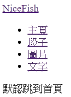
現在有4個獨立的模塊，主頁，段子，圖片，文字只有當用戶單擊這些模塊的時候，路由才會去異步加載對應的chunk, 就像這樣
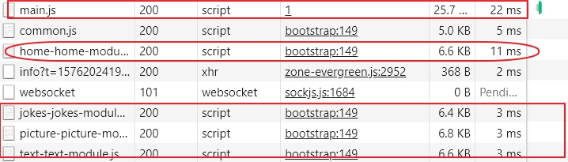
修改一下原來的picture元件將它移到app下面，在加入模塊和路由
1 ng g module picture/picture --flat --routing
在src\app\picture\picture.module.ts
1 2 3 4 5 6 7 8 9 10 11 12 13 14 15 16 17 import { NgModule } from '@angular/core' ;import { CommonModule } from '@angular/common' ;import { PictureRoutingModule } from './picture-routing.module' ;import { PictureComponent } from './picture.component' ;import { ShareModule } from '../_shared/share.module' ;@NgModule ({ declarations: [PictureComponent], imports: [ CommonModule, ShareModule, PictureRoutingModule ] }) export class PictureModule { }
在src\app\picture\picture-routing.module.ts
1 2 3 4 5 6 7 8 9 10 11 12 13 14 import { NgModule } from '@angular/core' ;import { Routes, RouterModule } from '@angular/router' ;import { PictureComponent } from './picture.component' ;const routes: Routes = [ { path: '' , component: PictureComponent } ]; @NgModule ({ imports: [RouterModule.forChild(routes)], exports: [RouterModule] }) export class PictureRoutingModule { }
修改一下原來的text元件將它移到app下面，在加入模塊和路由
1 ng g module text/text --flat --routing
在src\app\text\text.module.ts
1 2 3 4 5 6 7 8 9 10 11 12 13 14 15 16 17 import { NgModule } from '@angular/core' ;import { CommonModule } from '@angular/common' ;import { TextRoutingModule } from './text-routing.module' ;import { TextComponent } from './text.component' ;import { ShareModule } from '../_shared/share.module' ;@NgModule ({ declarations: [TextComponent], imports: [ CommonModule, ShareModule, TextRoutingModule ] }) export class TextModule { }
在src\app\text\text-routing.module.ts
1 2 3 4 5 6 7 8 9 10 11 12 13 14 import { NgModule } from '@angular/core' ;import { Routes, RouterModule } from '@angular/router' ;import { TextComponent } from './text.component' ;const routes: Routes = [ { path: '' , component: TextComponent } ]; @NgModule ({ imports: [RouterModule.forChild(routes)], exports: [RouterModule] }) export class TextRoutingModule { }
修改一下src\app\home\home.module.ts
1 2 3 4 5 6 7 8 9 10 11 12 13 14 15 16 17 import { NgModule } from '@angular/core' ;import { CommonModule } from '@angular/common' ;import { HomeRoutingModule } from './home-routing.module' ;import { HomeComponent } from './home.component' ;import { ShareModule } from '../_shared/share.module' ;@NgModule ({ declarations: [HomeComponent], imports: [ CommonModule, ShareModule, HomeRoutingModule ] }) export class HomeModule { }
在src\app\home\home-routing.module.ts
1 2 3 4 5 6 7 8 9 10 11 12 13 14 15 16 import { NgModule } from '@angular/core' ;import { Routes, RouterModule } from '@angular/router' ;import { HomeComponent } from './home.component' ;const routes: Routes = [ { path: '' , component: HomeComponent, }, ]; @NgModule ({ imports: [RouterModule.forChild(routes)], exports: [RouterModule] }) export class HomeRoutingModule { }
在src\app\home\home.component.html
在src\app\app.module.ts
1 2 3 4 5 6 7 8 9 10 11 12 13 14 15 16 17 18 19 import { BrowserModule } from '@angular/platform-browser' ;import { NgModule } from '@angular/core' ;import { AppRoutingModule } from './app-routing.module' ;import { AppComponent } from './app.component' ;@NgModule ({ declarations: [ AppComponent, ], imports: [ BrowserModule, AppRoutingModule, ], providers: [], bootstrap: [AppComponent], entryComponents: [] }) export class AppModule { }
在src\app\app-routing.module.ts
1 2 3 4 5 6 7 8 9 10 11 12 13 14 15 16 17 18 19 20 21 22 23 24 25 26 27 28 29 30 31 32 33 34 35 36 37 import { NgModule } from '@angular/core' ;import { Routes, RouterModule } from '@angular/router' ;const routes: Routes = [ { path: '' , redirectTo: 'home' , pathMatch: 'full' }, { path: 'home' , loadChildren: () =>import ('./home/home.module' ).then(m => }, { path: 'jokes' , loadChildren: () =>import ('./jokes/jokes.module' ).then(m => }, { path: 'picture' , loadChildren: () =>import ('./picture/picture.module' ).then(m => }, { path: 'text' , loadChildren: () =>import ('./text/text.module' ).then(m => }, { path: '**' , loadChildren: () =>import ('./home/home.module' ).then(m => }, ]; @NgModule ({ imports: [ RouterModule.forRoot(routes), ], exports: [RouterModule] }) export class AppRoutingModule { }
在src\app\app.component.html
1 2 3 4 5 6 7 8 9 10 11 12 13 14 15 16 17 18 19 20 21 22 23 24 <div > <a routerLink ="home" > NiceFish</a > <div > <ul > <li > <a [routerLink ]="['/home']" > 主頁</a > </li > <li > <a [routerLink ]="['/jokes']" > 段子</a > </li > <li > <a [routerLink ]="['/picture']" > 圖片</a > </li > <li > <a [routerLink ]="['/text']" > 文字</a > </li > </ul > </div > </div > <div > <router-outlet > </router-outlet > </div >
一切看起來都那麼完義，但是，雖然這種異步加載的方式確實能提升加載和執行的效率，但是用戶體驗并沒有做到極致，一般來說這幾個模塊用戶都是一定會點的。因此，在首頁模塊加載完成之後，如果能把”段子”、“圖片”、“文字”這些模塊預先加載到客戶端就好了。這樣當用戶單擊這兩個菜單的時候，看起來就像“秒開”一樣，這才叫“極致體驗”。
在這個場景下，“預加載”就派上用場，你需要修改一下src\app\app-routing.module.ts相關的內容要改成這樣:
1 2 3 4 5 6 7 8 9 @NgModule ({ imports: [ RouterModule.forRoot(routes, { preloadingStrategy: PreloadAllModules }), ], exports: [RouterModule] })
改完之後刷一下瀏覽器， 效果看起來挺不錯，所有模塊都預加載進來了：
Angular內置了兩種預加載策略：PreloadAllModules和NoPreloading，PreloadAllModules的意思是：預加載所有模塊，不管有沒有被訪問到也就是說，要嘛一次預加載所有異步模塊，要嘛就不做預加載。
你仔細看了一下上面的代碼，總感覺這種“一次預加載所有模塊”的方式太簡單粗暴了一點。而且根據你自已的預測，將來這個系統還會開發更多的模塊，如果總是一次全部預加載，總感覺怪怪的，於是你想進一步做一些優化，希望實現自已的預加載策略，最好能在路由配置里面加入一些自定義的配置項，讓某些模塊預加載，某些模壞不要進行預加載，就像這樣：在src\app\app-routing.module.ts
1 2 3 4 5 6 7 8 9 10 11 12 13 14 15 16 17 18 19 20 21 22 23 24 25 26 27 const routes: Routes = [ { path: '' , redirectTo: 'home' , pathMatch: 'full' }, { path: 'home' , loadChildren: () =>import ('./home/home.module' ).then(m => }, { path: 'jokes' , data: { preload: true }, loadChildren: () =>import ('./jokes/jokes.module' ).then(m => }, { path: 'picture' , data: { preload: false }, loadChildren: () =>import ('./picture/picture.module' ).then(m => }, { path: 'text' , data: { preload: true }, loadChildren: () =>import ('./text/text.module' ).then(m => }, { path: '**' , loadChildren: () =>import ('./home/home.module' ).then(m => }, ];
當preload這個配置項為true的時候，就去預加載對應的模塊，否則什麼也不做，於是你實現了一個自已的預加載策略：
1 ng g class common/MyPreloadingStrategy
在src\app\common\my-preloading-strategy.ts
1 2 3 4 5 6 7 8 import { PreloadingStrategy, Route } from '@angular/router' ;import { Observable, of } from 'rxjs' ;export class MyPreloadingStrategy implements PreloadingStrategy { preload(route: Route, fn: () =>any >): Observable<any > { return route.data && route.data.preload ? fn() : of(null ); } }
當然，別忘記修改一下src\app\app-routing.module.ts里面的配置，換成你自已的預加載策略：
1 2 3 4 5 6 7 8 9 10 11 12 13 14 15 16 17 18 19 20 21 22 23 24 25 26 27 28 29 30 31 32 33 34 35 36 37 38 39 40 41 42 import { NgModule } from '@angular/core' ;import { Routes, RouterModule } from '@angular/router' ;import { MyPreloadingStrategy } from './common/my-preloading-strategy' ;const routes: Routes = [ { path: '' , redirectTo: 'home' , pathMatch: 'full' }, { path: 'home' , loadChildren: () =>import ('./home/home.module' ).then(m => }, { path: 'jokes' , data: { preload: true }, loadChildren: () =>import ('./jokes/jokes.module' ).then(m => }, { path: 'picture' , data: { preload: false }, loadChildren: () =>import ('./picture/picture.module' ).then(m => }, { path: 'text' , data: { preload: true }, loadChildren: () =>import ('./text/text.module' ).then(m => }, { path: '**' , loadChildren: () =>import ('./home/home.module' ).then(m => }, ]; @NgModule ({ imports: [ RouterModule.forRoot(routes, { preloadingStrategy: MyPreloadingStrategy }), ], exports: [RouterModule] }) export class AppRoutingModule { }
在src\app\app.module.ts加入provide
1 2 3 4 5 6 7 8 9 10 11 12 13 14 15 16 17 18 19 20 import { BrowserModule } from '@angular/platform-browser' ;import { NgModule } from '@angular/core' ;import { AppRoutingModule } from './app-routing.module' ;import { AppComponent } from './app.component' ;import { MyPreloadingStrategy } from './common/my-preloading-strategy' ;@NgModule ({ declarations: [ AppComponent, ], imports: [ BrowserModule, AppRoutingModule, ], providers: [MyPreloadingStrategy], bootstrap: [AppComponent], entryComponents: [] }) export class AppModule { }
這樣一下，模塊預加載的控制權就完全交到你自已的手里了，你可以繼續修改這個預加載策略，比如加個延時，或者根據其他某個業務條件來決定是不是要執行預加載
lession5-4:路由守衛 在實際的業務開發過程中，我們經常需要限制某些URL的可訪問性，比如，對於系統管界面，只有那些擁有管理權限的用戶才能打開。
我看過一些簡化的簡化的處理方案，比如把菜單隱藏起來，但是這樣做是不夠的，因為用戶還可以自已手動在地址欄嘗式輸入，或者更暴力一點，可以通過工具來強行遍歷URL。
請特別注意：前端代碼應該默被看成不安全的，安全的重頭戲應該在Server端，而前端只是做一些基本的防護。
在Angular里面，權限控制的任務由“路由守衛”來負責，路由守衛的典型用法：
控制路由能否激活
控制路由的能否退出
控制異步模塊能否被加載
控制路由能否激活 來產生認證服務
在src\app\auth\auth.service.ts
1 2 3 4 5 6 7 8 9 10 11 12 13 14 15 16 17 import { Injectable } from '@angular/core' ;@Injectable ({ providedIn: 'root' }) export class AuthService { constructor ( canLoad(): boolean { return true ; } canActivate(): boolean { return true ; } }
來產生路由守衛
在src\app\auth\auth.guard.ts
1 2 3 4 5 6 7 8 9 10 11 12 13 14 15 16 17 18 19 20 21 22 23 24 25 26 27 28 29 30 31 32 33 34 35 36 37 38 39 40 import { Injectable } from '@angular/core' ;import { CanActivate, CanLoad, CanActivateChild } from '@angular/router' ;import { AuthService } from './auth.service' ;@Injectable ({ providedIn: 'root' }) export class AuthGuard implements CanLoad, CanActivate, CanActivateChild { constructor (private authService: AuthService } canLoad() { return this .authService.canLoad(); } canActivate() { return this .authService.canActivate(); } canActivateChild() { return true ; } }
將相關的服放到src\app\app.module.ts
1 2 3 4 5 6 7 8 9 10 11 12 13 14 15 16 17 18 19 20 21 22 import { BrowserModule } from '@angular/platform-browser' ;import { NgModule } from '@angular/core' ;import { AppRoutingModule } from './app-routing.module' ;import { AppComponent } from './app.component' ;import { MyPreloadingStrategy } from './common/my-preloading-strategy' ;import { AuthService } from './auth/auth.service' ;import { AuthGuard } from './auth/auth.guard' ;@NgModule ({ declarations: [ AppComponent, ], imports: [ BrowserModule, AppRoutingModule, ], providers: [MyPreloadingStrategy, AuthService, AuthGuard], bootstrap: [AppComponent], entryComponents: [] }) export class AppModule { }
然後在src\app\app-routing.module.ts
1 2 3 4 5 6 7 8 9 10 11 12 13 14 15 16 17 18 19 20 21 22 23 24 25 26 27 28 const routes: Routes = [ { path: '' , redirectTo: 'home' , pathMatch: 'full' }, { path: 'home' , loadChildren: () =>import ('./home/home.module' ).then(m => }, { path: 'jokes' , data: { preload: true }, canActivate: [AuthGuard], loadChildren: () =>import ('./jokes/jokes.module' ).then(m => }, { path: 'picture' , data: { preload: false }, loadChildren: () =>import ('./picture/picture.module' ).then(m => }, { path: 'text' , data: { preload: true }, loadChildren: () =>import ('./text/text.module' ).then(m => }, { path: '**' , loadChildren: () =>import ('./home/home.module' ).then(m => }, ];
這里的canActiveate配置項就是用來控制路由是否能被激活的，如果AuthGuard里面對應的canActivate方法返回false, jokes這個路由無法激活，在所有子模塊的路由里面也可以做類似的配置。
控制路由的退出 有時候，我們還需要控制路由能否退出。
比如，當用戶已經在表單面輸入了大量的內容，如果不小心導航到其它URL，那麼輸入的內容就會全部丟失。很顯然，這會讓用戶非常惱火。
因此，我們需要做一定的防護，避免這種意外的情況。
這個例子的運行如下：
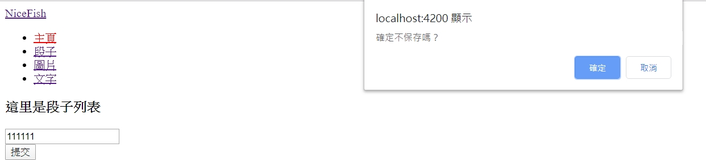
我們給jokes模塊單獨寫了一個守衛：
1 ng g guard jokes/jokes --flat
1 2 3 4 5 6 7 8 9 10 11 12 13 14 15 16 17 import { Injectable } from '@angular/core' ;import { CanDeactivate } from '@angular/router' ;import { JokesComponent } from './jokes.component' ;@Injectable ({ providedIn: 'root' }) export class JokesGuard implements CanDeactivate<any > { canDeactivate(component: JokesComponent) { console .log(component); if (!component.saved) { return window .confirm("確定不保存嗎？" ); } return true ; } }
在src\app\jokes\jokes-routing.module.ts
1 2 3 4 5 6 7 8 9 10 11 12 13 14 15 import { NgModule } from '@angular/core' ;import { Routes, RouterModule } from '@angular/router' ;import { JokesComponent } from './jokes.component' ;import { JokesGuard } from './jokes.guard' ;const routes: Routes = [ { path: '' , component: JokesComponent, canDeactivate: [JokesGuard] } ]; @NgModule ({ imports: [RouterModule.forChild(routes)], exports: [RouterModule] }) export class JokesRoutingModule { }
控制模塊能否被加載 除了可以控制路由能曾被激活之外，還可以控制模塊能否被加載，處理方式類似，在AuthGuard里面增加一個處理方法：
1 2 3 4 5 6 7 8 9 canLoad() { return this .authService.canLoad(); }
如果canLoad方法返回false,模塊就根本不會被加到瀏覽器里面了。
lession5-5:多重出口 到目前為止，在我們所有例子里面，界面結構都是這樣的。
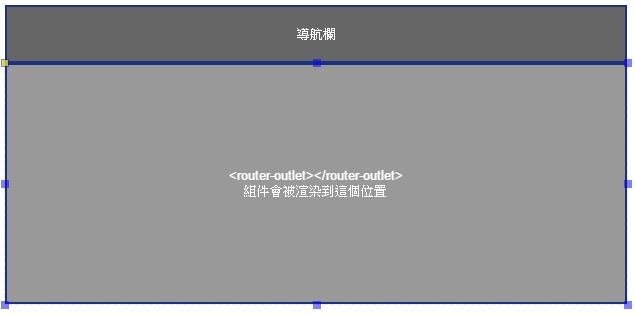
但是，有時候我們在同一個界面上需要同時出現兩塊或多塊動態的內容。比如，你想讓在側的導航欄和右側的主體區域全部變成動態的，就像這樣：
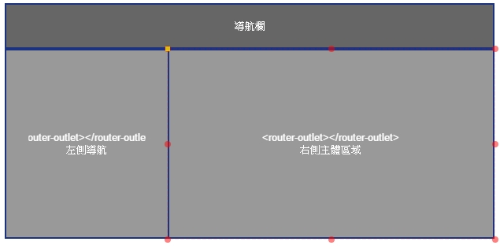
在home下面來建立兩個元件
1 2 ng g component home/MainArea ng g component home/LeftNav
在src\app\app-routing.module.ts
1 2 3 4 5 6 7 8 9 10 11 12 13 14 15 16 17 18 19 20 21 22 23 24 25 26 27 28 29 30 31 32 33 34 35 36 37 38 39 40 41 import { NgModule } from '@angular/core' ;import { Routes, RouterModule, PreloadAllModules } from '@angular/router' ;import { HomeComponent } from './home/home.component' ;import { LeftNavComponent } from './home/left-nav/left-nav.component' ;import { MainAreaComponent } from './home/main-area/main-area.component' ;const routes: Routes = [ { path: '' , redirectTo: 'home' , pathMatch: 'full' }, { path: 'home' , component: HomeComponent, children: [ { path: 'leftNav' , component: LeftNavComponent, outlet: 'left-nav' }, { path: ':id' , component: MainAreaComponent, outlet: 'main-area' } ] }, { path: '**' , component: HomeComponent }, ]; @NgModule ({ imports: [ RouterModule.forRoot(routes), ], exports: [RouterModule] }) export class AppRoutingModule { }
在src\app\app.component.html
1 2 3 4 5 6 7 8 9 10 11 12 13 14 15 16 <div > <a routerLink ="home" > NiceFish</a > <div > <ul > <li > <a [routerLink ]="['home',{outlets:{'left-nav':['leftNav'],'main-area':['none']}}]" > 主頁</a > </li > </ul > </div > </div > <div > <router-outlet > </router-outlet > </div >
在src\app\app.module.ts
1 2 3 4 5 6 7 8 9 10 11 12 13 14 15 16 17 18 19 20 21 22 23 24 25 import { BrowserModule } from '@angular/platform-browser' ;import { NgModule } from '@angular/core' ;import { AppRoutingModule } from './app-routing.module' ;import { AppComponent } from './app.component' ;import { HomeComponent } from './home/home.component' ;import { LeftNavComponent } from './home/left-nav/left-nav.component' ;import { MainAreaComponent } from './home/main-area/main-area.component' ;@NgModule ({ declarations: [ AppComponent, HomeComponent, LeftNavComponent, MainAreaComponent ], imports: [ BrowserModule, AppRoutingModule, ], providers: [], bootstrap: [AppComponent], entryComponents: [] }) export class AppModule { }
在src\app\home\main-area\main-area.component.html
1 2 3 <h3 > {{menuName}} </h3 >
在src\app\home\main-area\main-area.component.ts
1 2 3 4 5 6 7 8 9 10 11 12 13 14 15 16 17 18 19 20 21 22 23 import { Component, OnInit } from '@angular/core' ;import { ActivatedRoute } from '@angular/router' ;@Component ({ selector: 'app-main-area' , templateUrl: './main-area.component.html' , styleUrls: ['./main-area.component.scss' ] }) export class MainAreaComponent implements OnInit { constructor (private route: ActivatedRoute menuName: string = "沒有選擇依何菜單" ; ngOnInit() { this .route.params.subscribe((params: { id: string } ) => { console .log("當前菜單的ID > " + params.id); if (params.id == "1" ) { this .menuName = "只看圖片" ; } else if (params.id == "2" ) { this .menuName = "只看文字" ; } }); } }
在src\app\home\left-nav\left-nav.component.html
1 2 3 4 5 <div > <a href ="javascript:void(0);" > 請選擇菜單</a > <button (click )="toogle(1)" > 只看圖片</button > <button (click )="toogle(2)" > 只看文字</button > </div >
在src\app\home\left-nav\left-nav.component.ts
1 2 3 4 5 6 7 8 9 10 11 12 13 14 15 16 17 18 import { Component, OnInit } from '@angular/core' ;import { Router } from '@angular/router' ;@Component ({ selector: 'app-left-nav' , templateUrl: './left-nav.component.html' , styleUrls: ['./left-nav.component.scss' ] }) export class LeftNavComponent implements OnInit { constructor (private router: Router ngOnInit() { } toogle(id) { this .router.navigate(['/home' , { outlets: { 'main-area' : [id] } }]); } }
運行效果
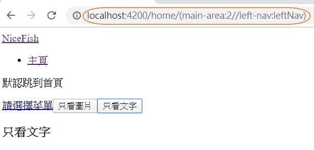
請注意看瀏覽器地址欄里面的內容，形式比較複雜，而且代碼寫起來也比較繁瑣，因此，請儘量避開這種用法。
lession6-1:表單快速上手 如果沒有表單，我們將沒有途徑收集用戶輸入，因此，表單是前端開發里面的重頭戲，在日常開發中，處理表單將會占據大塊的編碼時間。
我們先來做一個最簡單的用戶注冊界面：
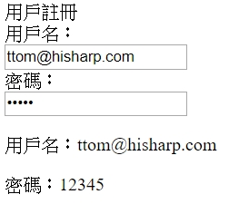
建立新的元件
1 ng g component FormQuickStart
在src\app\form-quick-start\form-quick-start.component.html
1 2 3 4 5 6 7 8 9 10 11 12 13 14 15 16 17 18 19 20 21 22 23 24 25 26 <div > <div > 用戶註冊</div > <div > <form > <div > <label > 用戶名：</label > <div > <input type ="email" placeholder ="Email" (keyup )="userNameChange($event)" > </div > </div > <div > <label > 密碼：</label > <div > <input #pwd type ="password" placeholder ="Password" (keyup )="0" > </div > </div > </form > <div > <p > 用戶名：{{userName}}</p > <p > 密碼：{{pwd.value}}</p > </div > </div > </div >
在src\app\form-quick-start\form-quick-start.component.ts
1 2 3 4 5 6 7 8 9 10 11 12 13 14 15 16 17 import { Component, OnInit } from '@angular/core' ;@Component ({ selector: 'form-quick-start' , templateUrl: './form-quick-start.component.html' , styleUrls: ['./form-quick-start.component.scss' ] }) export class FormQuickStartComponent implements OnInit { userName: string ; constructor ( ngOnInit() { } userNameChange(event) { this .userName = event.target.value; } }
這個例子非常簡單，里面有兩個Input，分別演示兩種傳遞參數的方式。
第一個input:用事件綁定的方式，把input的值傳遞給組件內部定義的userName屬性，然後頁面上再用
第二個input:我們定義了一個模板局部變量#pwd，然後底部直接用這個名字來𫉬取input的值(keyup)="0",要不然Angular不會啟動變更檢測機制，
lession6-2:雙向數據綁定 Angular是第一個把“雙向數據綁定”機制引入到前端開發領域來的框架，這也是當年AngularJS最受開發者歡迎的特性。
我們接著上一個例子繼續改，先看運行效果：
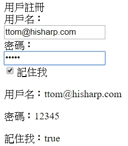
因為要雙向綁定所以要加入FormsModule不然在執行上會有錯誤
在src\app\app.module.ts
1 2 3 4 5 6 7 8 9 10 11 12 13 import { FormsModule } from '@angular/forms' ;@NgModule ({ imports: [ BrowserModule, FormsModule, AppRoutingModule, ], }) export class AppModule { }
先來建立數據模型
1 ng g class form-quick-start/model/RegisterModel
在src\app\form-quick-start\model\register-model.ts
1 2 3 4 5 export class RegisterModel { userName: string ; password: string ; rememberMe: boolean = false ; }
在src\app\form-quick-start\form-quick-start.component.ts
1 2 3 4 5 6 7 8 9 10 11 12 13 14 import { Component, OnInit } from '@angular/core' ;import { RegisterModel } from './model/register-model' ;@Component ({ selector: 'form-quick-start' , templateUrl: './form-quick-start.component.html' , styleUrls: ['./form-quick-start.component.scss' ] }) export class FormQuickStartComponent implements OnInit { regModel: RegisterModel = new RegisterModel(); constructor ( ngOnInit() { } }
在src\app\form-quick-start\form-quick-start.component.html
1 2 3 4 5 6 7 8 9 10 11 12 13 14 15 16 17 18 19 20 21 22 23 24 25 26 27 28 29 30 31 32 <div > <div > 用戶註冊</div > <div > <form > <div > <label > 用戶名：</label > <div > <input type ="email" placeholder ="Email" name ="userName" [(ngModel )]="regModel.userName" > </div > </div > <div > <label > 密碼：</label > <div > <input #pwd type ="password" name ="password" placeholder ="Password" [(ngModel )]="regModel.password" > </div > </div > <div > <div > <label > <input type ="checkbox" name ="rememberMe" [(ngModel )]="regModel.rememberMe" > 記住我 </label > </div > </div > </form > <div > <p > 用戶名：{{regModel.userName}}</p > <p > 密碼：{{regModel.password}}</p > <p > 記住我：{{regModel.rememberMe}}</p > </div > </div > </div >
一些常見的坑：
要想使用[(ngModel)]進行雙向綁定，必須在佚的@NgModel定義里面import FromsModel模塊
用雙向綁定的時候，必須給標籤設置name或者id，否則會報錯
表單上面展現的字段和你處理業務用的數據模型不一定完全一致，推荐設計兩個Model，一個用來給表單進行綁定操作，一個用來處理你的業務
lession6-3:表單校驗 表單校驗一定會牽扯到一個大家都比較頭疼的技術點，那就是正則表達式，正則表達式學起來有難度，但是又不可或缺。
強制所有開發者都能精通正則表達式是不太現實的事情，但是有一點是必須要做到的，那就是至少要能讀懂別人編寫正則。
先來一個例子 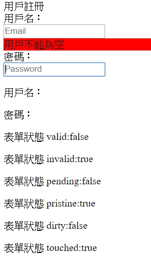
在src\app\form-quick-start\form-quick-start.component.html比較注意的是先將form來命名<form #registerForm="ngForm">，這樣就可以取form的狀態和值
1 2 3 4 5 6 7 8 9 10 11 12 13 14 15 16 17 18 19 20 21 22 23 24 25 26 27 28 29 30 31 32 33 34 35 36 37 38 39 40 41 42 43 44 45 46 <div > <div > 用戶註冊</div > <div > <form #registerForm ="ngForm" > <div [ngClass ]="{'has-error':userName.invalid && (userName.dirty|| userName.touched)}" > <label > 用戶名：</label > <div > <input type ="email" placeholder ="Email" #userName ="ngModel" name ="userName" [(ngModel )]="regModel.userName" required minlength ="12" maxlength ="32" > <div *ngIf ="userName.invalid && (userName.dirty || userName.touched)" style ="background-color: red;" > <div *ngIf ="userName.errors.required" > 用戶不能為空 </div > <div *ngIf ="userName.errors.minlength" > 最小長度不能小於12個字節 </div > <div *ngIf ="userName.errors.maxlength" > 最小長度不能小於32個字節 </div > </div > </div > </div > <div > <label > 密碼：</label > <div > <input type ="password" name ="password" placeholder ="Password" #pwd ="ngModel" [(ngModel )]="regModel.password" > </div > </div > </form > <div > <p > 用戶名：{{userName.value}}</p > <p > 密碼：{{pwd.value}}</p > <p > 表單值 value:{{registerForm.value |json }}</p > <p > 表單狀態 valid:{{registerForm.valid}}</p > <p > 表單狀態 invalid:{{registerForm.invalid}}</p > <p > 表單狀態 pending:{{registerForm.pending}}</p > <p > 表單狀態 pristine:{{registerForm.pristine}}</p > <p > 表單狀態 dirty:{{registerForm.dirty}}</p > <p > 表單狀態 touched:{{registerForm.touched}}</p > </div > </div > </div >
在模型src\app\form-quick-start\model\register-model.ts
1 2 3 4 5 export class RegisterModel { userName: string ; password: string ; rememberMe: boolean = false ; }
在組件src\app\form-quick-start\form-quick-start.component.ts
1 2 3 4 5 6 7 8 9 10 11 12 13 import { Component, OnInit } from '@angular/core' ;import { RegisterModel } from './model/register-model' ;@Component ({ selector: 'form-quick-start' , templateUrl: './form-quick-start.component.html' , styleUrls: ['./form-quick-start.component.scss' ] }) export class FormQuickStartComponent implements OnInit { regModel: RegisterModel = new RegisterModel(); constructor ( ngOnInit() { } }
狀態標志位 Form、FormGroup、FormControl（輸入項）都有一些標志位可以使用，這些標志位是Angular提供的，一共有9個（官方的文檔里面沒有明確列出來，或都列得不全）：
valid，校驗成功
invalid，校驗失敗
pending，表單正在提交過程中
pristine，數據依然處於原始狀態，用戶沒有修改過
dirty，數據已經變髒了，被用戶改過了
touched，被觸摸或者單擊過
untouched，未被觸摸或單擊
enabled，啟用狀態
Form上面多一個狀態標志位sumitted，可以用來判斷表單是否已經被提交。
我們可以利用這些標志位來判斷表單和輸入項的狀態。
內置校驗規則 Angular一共內置了8種校驗規則：
required
requiredTrue
minLength
maxLength
pattern
nullValidator
compose
composeAsync
[詳細的API描述可參見這里]https://angular.io/api/forms/Validators
自定義校驗規則 內置的校驗規則經常不夠用，尤其在需要多條件聯合校驗的時候，因此我們需要自已定義校驗規則。
請看這個例子：
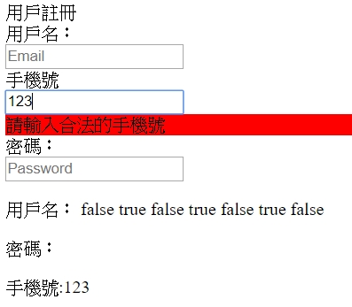
先來產生一個自定義的校驗器
1 ng g directive form-quick-start/directives/ChineseMobileValidator
在src\app\form-quick-start\directives\chinese-mobile-validator.directive.ts自定義代碼校驗規則代碼：
1 2 3 4 5 6 7 8 9 10 11 12 13 14 15 16 17 18 19 20 21 22 23 24 25 26 27 28 import { Directive, Input } from '@angular/core' ;import { Validator, AbstractControl, NG_VALIDATORS } from '@angular/forms' ;@Directive ({ selector: '[ChineseMobileValidator]' , providers: [ { provide: NG_VALIDATORS, useExisting: ChineseMobileValidator, multi: true } ] }) export class ChineseMobileValidator implements Validator { @Input () ChineseMobileValidator: string ; constructor ( validate(control: AbstractControl): { [error: string ]: any } { let val = control.value; let flag = /^1(3|4|5|6|7|8)\d{9}$/ .test(val); console .log(flag); if (flag) { control.setErrors(null ); } else { control.setErrors({ ChineseMobileValidator: false }); return { ChineseMobileValidator: false }; } } }
可以看到，自定義校驗規則的使用方式和內置校驗規則並沒有什麼區別。
當然，也可以把正則表達式傳給內置的pattern校驗器，來實現這個效果，但是每次都複制正則比較麻煩，對於你的業務系統常見的校驗規則，還是把它沉澱成你們自已的校驗規則竔可復用性更高。關於校驗器更詳細的API描述參見這里
在src\app\form-quick-start\form-quick-start.component.html
1 2 3 4 5 6 7 8 9 10 11 12 13 14 15 16 17 18 19 20 21 22 23 24 25 26 27 28 29 30 31 32 33 34 35 36 37 38 39 40 41 42 43 44 45 46 47 48 49 50 51 52 53 54 55 56 57 58 59 60 61 62 63 64 65 66 <div > <div > 用戶註冊</div > <div > <form #registerForm ="ngForm" > <div [ngClass ]="{'has-error':userName.invalid && (userName.dirty|| userName.touched)}" > <label > 用戶名：</label > <div > <input type ="email" placeholder ="Email" #userName ="ngModel" name ="userName" [(ngModel )]="regModel.userName" required minlength ="12" maxlength ="32" > <div *ngIf ="userName.invalid && (userName.dirty || userName.touched)" style ="background-color: red;" > <div *ngIf ="userName.errors.required" > 用戶不能為空 </div > <div *ngIf ="userName.errors.minlength" > 最小長度不能小於12個字節 </div > <div *ngIf ="userName.errors.maxlength" > 最小長度不能小於32個字節 </div > </div > </div > </div > <div > <label > 手機號</label > <div > <input placeholder ="Mobile" #mobile ="ngModel" name ="mobile" [(ngModel )]="regModel.mobile" ChineseMobileValidator > <div *ngIf ="mobile.invalid && (mobile.dirty || mobile.touched)" style ="background-color: red;" > 請輸入合法的手機號 </div > </div > </div > <div > <label > 密碼：</label > <div > <input type ="password" name ="password" placeholder ="Password" #pwd ="ngModel" [(ngModel )]="regModel.password" > </div > </div > </form > <div > <p > 用戶名：{{userName.value}} {{userName.valid}} {{userName.invalid}} {{userName.pending}} {{userName.pristine}} {{userName.dirty}} {{userName.untouched}} {{userName.touched}} </p > <p > 密碼：{{pwd.value}}</p > <p > 手機號:{{mobile.value}}</p > <p > 表單值 value:{{registerForm.value |json }}</p > <p > 表單狀態 valid:{{registerForm.valid}}</p > <p > 表單狀態 invalid:{{registerForm.invalid}}</p > <p > 表單狀態 pending:{{registerForm.pending}}</p > <p > 表單狀態 pristine:{{registerForm.pristine}}</p > <p > 表單狀態 dirty:{{registerForm.dirty}}</p > <p > 表單狀態 touched:{{registerForm.touched}}</p > </div > </div > </div >
在src\app\form-quick-start\form-quick-start.component.ts
1 2 3 4 5 6 7 8 9 10 11 12 13 14 15 import { Component, OnInit } from '@angular/core' ;import { RegisterModel } from './model/register-model' ;@Component ({ selector: 'form-quick-start' , templateUrl: './form-quick-start.component.html' , styleUrls: ['./form-quick-start.component.scss' ] }) export class FormQuickStartComponent implements OnInit { regModel: RegisterModel = new RegisterModel(); constructor ( ngOnInit() { } }
lession6-4:模型驅動型表單 前面幾個內容里面的例子都是“模板驅動型表單”，我們把表單相關的邏輯，包括校驗邏輯全部寫在模板里面，組件內部幾手沒寫什麼代碼。
表單的另一種寫法是“模型驅動型表單”，又叫做“響應式表單”，特點是：把表單的創建，校驗等邏輯全部用代碼寫到組件里面，讓HTML模板變得很簡單。
特別注意：如果想使用響應式表單，必須在你的＠NgModule定義里面import ReactiveFormsModule
這里我們來一個復雜一些的表單，運行起來的效果如下：
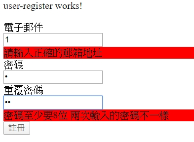
先來產生元件
1 ng g component UserRegister
因為要驗証是否密碼相同，所以來使用directive來檢查
1 ng g directive user-register/EqualValidator --export
在src\app\user-register\equal-validator.directive.ts
1 2 3 4 5 6 7 8 9 10 11 12 13 14 15 16 17 18 19 20 21 22 23 24 25 26 27 28 29 30 31 32 33 import { Directive, Input } from '@angular/core' ;import { NG_VALIDATORS, Validator, AbstractControl, ValidationErrors } from '@angular/forms' ;@Directive ({ selector: '[validateEqual]' , providers: [ { provide: NG_VALIDATORS, useExisting: EqualValidator, multi: true } ] }) export class EqualValidator implements Validator { @Input () validateEqual: string ; @Input () reverse: boolean ; validate(control: AbstractControl): ValidationErrors { let selfValue = control.value; let targetControl = control.root.get(this .validateEqual); if (targetControl && selfValue !== targetControl.value) { if (!this .reverse) { return { validateEqual: false } } else { targetControl.setErrors({ validateEqual: false }) } } else { targetControl.setErrors(null ); } return null ; } constructor ( }
在src\app\user-register\user-register.component.html
1 2 3 4 5 6 7 8 9 10 11 12 13 14 15 16 17 18 19 20 21 22 23 24 25 26 27 28 29 30 31 32 33 34 35 36 37 38 39 40 <p > user-register works!</p > <form [formGroup ]="formModel" (ngSubmit )="onSubmit($event)" > <div [ngClass ]="{'has-error':formErrors.email}" > <label > 電子郵件</label > <div > <input formControlName ="email" type ="email" placeholder ="輸入電子郵件" > <div *ngIf ="formErrors.email" style ="background-color: red;" > {{formErrors.email}} </div > </div > </div > <div [ngClass ]="{'has-error': formErrors.password}" > <label > 密碼</label > <div > <input formControlName ="password" validateEqual ="confirmPassword" reverse =true type ="password" placeholder ="輸入密碼" > <div *ngIf ="formErrors.password" style ="background-color: red;" > {{formErrors.password}} </div > </div > </div > <div [ngClass ]="{'has-error': formErrors.confirmPassword}" > <label > 重覆密碼</label > <div > <input formControlName ="confirmPassword" validateEqual ="password" type ="password" placeholder ="輸入相同密碼" > <div *ngIf ="formErrors.confirmPassword" style ="background-color: red;" > {{formErrors.confirmPassword}} </div > </div > </div > <div *ngIf ="formErrors.formError" style ="background-color: red;" > {{formErrors.formError}} </div > <button [disabled ]="formModel.invalid" type ="submit" > 註冊</button > </form >
在src\app\user-register\user-register.component.ts
1 2 3 4 5 6 7 8 9 10 11 12 13 14 15 16 17 18 19 20 21 22 23 24 25 26 27 28 29 30 31 32 33 34 35 36 37 38 39 40 41 42 43 44 45 46 47 48 49 50 51 52 53 54 55 56 57 58 59 60 61 62 63 64 65 66 67 68 69 70 71 72 73 74 75 76 77 78 79 80 81 82 83 84 85 86 87 88 89 90 91 92 93 94 95 96 97 98 99 100 import { Component, OnInit } from '@angular/core' ;import { FormGroup, FormBuilder, Validators, FormControl } from '@angular/forms' ;@Component ({ selector: 'user-register' , templateUrl: './user-register.component.html' , styleUrls: ['./user-register.component.scss' ] }) export class UserRegisterComponent implements OnInit { formModel: FormGroup; userInfo: any = {}; formErrors = { "email" : "" , "password" : "" , "confirmPassword" : "" , "formError" : "" , "vcode" : "" }; validationMessages = { "email" : { "required" : "郵箱必須輸入" , "pattern" : "請輸入正確的郵箱地址" }, "password" : { "required" : "密碼必須輸入" , "minlength" : "密碼至少要8位" }, "confirmPassword" : { "required" : "重覆密碼必須輸入" , "minlength" : "密碼至少要8位" , "validateEqual" : "兩次輸入的密碼不一樣" } } constructor (private fb: FormBuilder ngOnInit() { this .BuildForm(); } BuildForm() { this .formModel = this .fb.group({ "email" : [ this .userInfo.email, [ Validators.required, Validators.pattern("^([a-zA-Z0-9_-])+@([a-zA-Z0-9_-])+((\.[a-zA-Z0-9_-]{2,3}){1,2})$" ) ] ], "password" : [ this .userInfo.password, [ Validators.required, Validators.minLength(8 ), ] ], "confirmPassword" : [ this .userInfo.password, [ Validators.required, Validators.minLength(8 ), ] ], }); this .formModel.valueChanges.subscribe( data => this .onValueChange(data) ); this .onValueChange(); } onValueChange(data?: any ): void { if (!this .formModel) { return ; } const form = this .formModel; for (const field in this .formErrors) { this .formErrors[field] = "" ; const control = form.get(field); if (control && control.dirty && !control.valid) { const messages = this .validationMessages[field]; for (const key in control.errors) { this .formErrors[field] += messages[key] + " " ; } } } } onSubmit(e) { if (this .formModel.valid) { console .log('send to server' ); this .userInfo = this .formModel.value; } else { this .formErrors.formError = "有不合法的輸入" ; } console .log(this .userInfo); } }
如果你想查詢”響應式表單“的詳細文檔請參考這里
lession6-5:動態表單 有這樣一種業務場景：表單里面的輸入項不是固定的，需要根據服務端返回的數據動態進行創建。
這時候我們壓根沒辦法把表單的HTML模板寫死，需要根據配置項用代碼動態構建表單，而這些配置項甚至可能是在服務端動態生成的。
生來建立測試元件
1 ng g component UserProfile
建立class
1 2 3 4 ng g class user-profile/dynamic-form/form-field/FieldBase ng g class user-profile/dynamic-form/form-field/textbox --skipTests ng g class user-profile/dynamic-form/form-field/image --skipTests ng g class user-profile/dynamic-form/form-field/TextArea --skipTests
再來建立元件
1 ng g component user-profile/dynamic-form/FormControl --flat
classDiagram
class FieldBase {
value: T
key: string
label: string
controlType: string
placeholder: string
}
Textbox --> FieldBase
Image --> FieldBase
TextArea --> FieldBase
在src\app\user-profile\dynamic-form\form-field\field-base.ts
1 2 3 4 5 6 7 8 9 10 11 12 13 14 15 16 17 18 19 20 21 22 export class FieldBase<T> { value: T; key: string ; label: string ; controlType: string ; placeholder: string ; constructor (options: { value?: T, key?: string , label?: string , required?: boolean , order?: number , controlType?: string , placeholder?: string } = {} ) { this .value = options.value; this .key = options.key || "" ; this .label = options.label || "" ; this .controlType = options.controlType || "" ; this .placeholder = options.placeholder || "" ; } }
在src\app\user-profile\dynamic-form\form-field\textbox.ts
1 2 3 4 5 6 7 8 9 10 import { FieldBase } from './field-base' ;export class Textbox extends FieldBase<string >{ controlType = "textbox" ; type : string ; constructor (options: {} = {} ) { super (options); this .type = options["type" ] || "" ; } }
在src\app\user-profile\dynamic-form\form-field\image.ts
1 2 3 4 5 6 7 8 9 10 import { FieldBase } from './field-base' ;export class Image extends FieldBase<string > { controlType = "image" ; src: string ; constructor (options: {} = {} ) { super (options); this .src = options["src" ] || "" ; } }
在src\app\user-profile\dynamic-form\form-field\text-area.ts
1 2 3 4 5 6 7 8 9 10 import { FieldBase } from './field-base' ;export class TextArea extends FieldBase<string >{ controlType = "textarea" ; rows: number ; constructor (options: {} = {} ) { super (options); this .rows = options["rows" ] || 1 ; } }
在src\app\user-profile\dynamic-form\form-control.component.html
1 2 3 4 5 6 7 8 9 10 11 <div [formGroup ]="form" > <label > {{field.label}}</label > <div > <div [ngSwitch ]="field.controlType" > <input *ngSwitchCase ="'textbox'" [formControlName ]="field.key" [type ]="field.type" placeholder ="{{field.placeholder}}" value ="{{field.value}}" /> <textarea *ngSwitchCase ="'textarea'" [formControlName ]="field.key" placeholder ="{{field.placeholder}}" value ="{{field.value}}" rows ="{{field.rows}}" > </textarea > <img *ngSwitchCase ="'image'" src ="{{field.src}}" > </div > </div > </div >
在src\app\user-profile\dynamic-form\form-control.component.ts
1 2 3 4 5 6 7 8 9 10 11 12 13 14 15 16 17 18 19 import { Component, OnInit, Input } from '@angular/core' ;import { FieldBase } from './form-field' ;import { FormGroup } from '@angular/forms' ;@Component ({ selector: 'form-control' , templateUrl: './form-control.component.html' , styleUrls: ['./form-control.component.scss' ] }) export class FormControlComponent implements OnInit { @Input () field: FieldBase<any >; @Input () form: FormGroup; constructor ( ngOnInit() { } }
最後再測試上的元件src\app\user-profile\user-profile.component.html
1 2 3 4 5 6 7 8 9 10 11 12 13 14 15 <p > user-profile works!</p > <div > <div > <div > 基本資料</div > <div > <form [formGroup ]="form" > <div *ngFor ="let field of fields" > <form-control [form ]="form" [field ]="field" > </form-control > </div > </form > </div > </div > </div >
在src\app\user-profile\user-profile.component.ts
1 2 3 4 5 6 7 8 9 10 11 12 13 14 15 16 17 18 19 20 21 22 23 24 25 26 27 28 29 30 31 32 33 34 35 36 37 38 39 40 41 42 43 44 45 46 47 48 49 50 51 52 53 54 55 56 57 58 59 60 61 62 63 64 65 66 import { Component, OnInit, Input } from '@angular/core' ;import { FieldBase, Textbox, TextArea, Image } from './dynamic-form/form-field' ;import { FormGroup, FormControl } from '@angular/forms' ;@Component ({ selector: 'user-profile' , templateUrl: './user-profile.component.html' , styleUrls: ['./user-profile.component.scss' ] }) export class UserProfileComponent implements OnInit { @Input () fields: FieldBase<any >[] = [ new Image({ src: "assets/imgs/1.jpg" , key: "imge" }), new Textbox({ label: "頭像：" , placeholder: "上傳頭像" , type : "file" , key: "headimg" }), new Textbox({ label: "常用郵箱" , placeholder: "常用郵箱" , key: "email" , }), new Textbox({ label: "密碼" , placeholder: "密碼至少8位" , type : "password" , key: "password" , }), new Textbox({ label: "重覆密碼" , placeholder: "重覆密碼" , type : "password" , key: "repassword" , }), new TextArea({ label: "個人簡介" , placeholder: "個人簡介，最多140字，不能放鏈接" , rows: 3 , key: "resume" }), ]; form: FormGroup error: Error ; constructor ( ngOnInit() { this .form = this .toFromGrop(this .fields); } toFromGrop(fields: FieldBase<any >[]): any { let group: any = {}; fields.forEach(field => group[field.key] = new FormControl(field.value || "" ); }); return new FormGroup(group); } save() { console .log(this .form.value); } }
lession7:服務 在組件的構造函里面聲明，Angular會在運徑時自動把Service實際創建出來并注射給組件
1 2 3 constructor ( private userListService: UserListService
建立測試Service
1 ng g service service/UserList
在src\app\service\user-list.service.ts
1 2 3 4 5 6 7 8 9 10 11 12 13 14 15 16 17 18 19 import { Injectable } from '@angular/core' ;@Injectable ({ providedIn: 'root' }) export class UserListService { constructor ( getUserList(): Array <any > { return [ { userName: '大漠窮秋' , age: 18 }, { userName: '大漠窮秋' , age: 18 }, { userName: '大漠窮秋' , age: 18 }, { userName: '大漠窮秋' , age: 18 }, { userName: '大漠窮秋' , age: 18 }, { userName: '大漠窮秋' , age: 18 }, ]; } }
建立測試元件
在src\app\user-list\user-list.component.html
1 2 3 4 5 6 7 8 9 10 <div > <div > Service單例</div > <div > <ul > <li *ngFor ="let user of userList;let i=index;" > {{i+1}}-{{user.userName}}-{{user.age}} </li > </ul > </div > </div >
在src\app\user-list\user-list.component.ts
1 2 3 4 5 6 7 8 9 10 11 12 13 14 15 16 17 18 import { Component, OnInit } from '@angular/core' ;import { UserListService } from '../service/user-list.service' ;@Component ({ selector: 'user-list' , templateUrl: './user-list.component.html' , styleUrls: ['./user-list.component.scss' ] }) export class UserListComponent implements OnInit { userList: Array <any >; constructor ( private userListService: UserListService ) { } ngOnInit() { this .userList = this .userListService.getUserList(); } }
單例 如你希望Service是全局單例的，需要把它定義到根模塊里面。
在src\app\app.module.ts
1 2 3 4 5 6 7 8 imports: [ BrowserModule, FormsModule, ReactiveFormsModule, AppRoutingModule, ], providers: [UserListService], bootstrap: [AppComponent],
非單例 下面這個例子用來測試UserListServie是否是單例，UserList組件會向UserListServie里面塞數據，OrderList組件會嘗式去讀取數據。
從運行結果可以看出來，因為我們在組件內部providers里面也配置了一個UserListService，很明顯就不是同一個實例了。
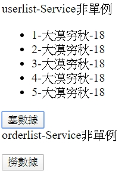
在src\app\service\user-list.service.ts
1 2 3 4 5 6 7 8 9 10 11 12 13 14 15 import { Injectable } from '@angular/core' ;@Injectable ({ providedIn: 'root' }) export class UserListService { userList: Array <any >; constructor ( getUserList(): Array <any > { return this .userList; } setUserList(newList: Array <any >) { this .userList = newList; } }
在src\app\user-list\user-list.component.html
1 2 3 4 5 6 7 8 9 10 11 12 13 <div > <div > userlist-Service非單例</div > <div > <ul > <li *ngFor ="let user of userList;let i=index;" > {{i+1}}-{{user.userName}}-{{user.age}} </li > </ul > </div > <div > <button (click )="setList()" > 塞數據</button > </div > </div >
在src\app\user-list\user-list.component.ts
1 2 3 4 5 6 7 8 9 10 11 12 13 14 15 16 17 18 19 20 21 22 23 24 25 26 27 28 29 30 import { Component, OnInit } from '@angular/core' ;import { UserListService } from '../service/user-list.service' ;@Component ({ selector: 'user-list' , templateUrl: './user-list.component.html' , styleUrls: ['./user-list.component.scss' ] }) export class UserListComponent implements OnInit { userList: Array <any >; constructor ( private userListService: UserListService ) { } ngOnInit() { this .userList = this .userListService.getUserList(); } setList() { let data: Array <any > = [ { userName: '大漠穷秋' , age: 18 }, { userName: '大漠穷秋' , age: 18 }, { userName: '大漠穷秋' , age: 18 }, { userName: '大漠穷秋' , age: 18 }, { userName: '大漠穷秋' , age: 18 }, ]; this .userList = data; this .userListService.setUserList(data); } }
建立測試元件
1 ng g component OrderList
在src\app\order-list\order-list.component.html
1 2 3 4 5 6 7 8 9 10 11 12 13 <div > <div > orderlist-Service非單例</div > <div > <ul > <li *ngFor ="let user of userList;let i=index;" > {{i+1}}-{{user.userName}}-{{user.age}} </li > </ul > </div > <div > <button (click )="getList()" > 撈數據 </button > </div > </div >
在src\app\order-list\order-list.component.ts
1 2 3 4 5 6 7 8 9 10 11 12 13 14 15 16 17 18 19 20 21 22 import { Component, OnInit } from '@angular/core' ;import { UserListService } from '../service/user-list.service' ;@Component ({ selector: 'order-list' , templateUrl: './order-list.component.html' , styleUrls: ['./order-list.component.scss' ], providers: [UserListService] }) export class OrderListComponent implements OnInit { userList: Array <any >; constructor ( private userListService: UserListService ) { } ngOnInit() { this .getList(); } getList() { this .userList = this .userListService.getUserList(); } }
在src\app\app.module.ts
1 2 3 4 5 6 7 imports: [ BrowserModule, FormsModule, ReactiveFormsModule, AppRoutingModule, ], providers: [UserListService],
在新版本Angular里面，每個組件上都有自已的注射器(Injecor)實例，所以很明顯，注射器也構良了一個樹形的結構。
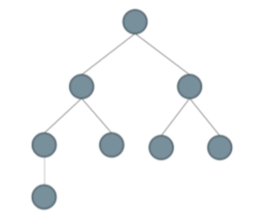
我們的UserListService是通過依賴注入機制注射給組件的，DI機制會根據以下順序替找服務實例：
如果組件內部providers上面配罝了服務，優先使用組件上的配置；
否則繼續向父層組件繼續查找；
直到查詢到模塊里面的providers配置；
如果沒有找到指定的服𠨟，拋異常。
所以請特別注意：
在Compoent里面直接引入Service，就不是單例了，而是會為每個組件實例都創建一個單獨的Service單例；
如果你在多個模塊（＠NgModule）里面同時定義providers,那也不是單例；
如果你在異步模塊里面定義Service，那也不是全局單例的，因為Angular會為異步模塊創建獨立的Injector空間。
關於Service的基本注意點 有很多的開發者說：OK，我會寫Service了，也知道怎麼玩注入了，但還有個最基本的問題沒有解決，那就是應該把什麼樣的東西個成服務？
整體上說，Angular里面的Service與後端框架里面的Service設計思想是一致的：
Service應該是無狀態的
Service應該可以被很多組件復用，不應該和任何組件緊密相關
多個Service可以組合起來，實現更復雜的服務。
在Angular核心包里面，最典型的一個服務就是HTTP服務。
lession8:RxJS快速上手 RsJS簡介 RxJS的官方網站請點擊這里 ，在官方網路上面有關於RxJS的詳細介紹，入門文檔、技術特性。
所以這篇文章不會重覆文檔上已經有的內容，而是從另外一個視角，帶你顉略RxJS的核心用法。
回調地獄與Promise 在使用Ajax的過程中，經常會遇到這種情況，我們需要在一個Ajax里面嵌套另一個Ajax適用，有時候甚至需要嵌套好幾層Ajax調用，於是就形成了所謂的“回調地獄”。
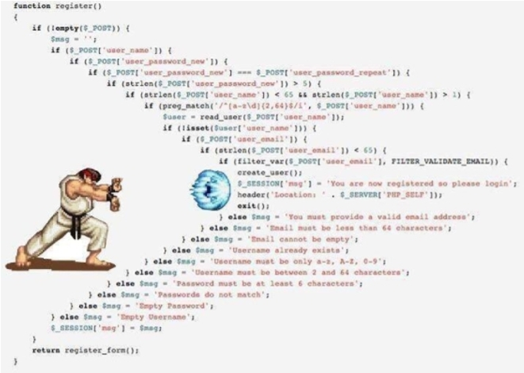
這種代碼最大的問題是可讀性非常差，時間長了之後根本無法維護。
Promise的出現就是為了解決這個問題，在Promise的場景下，我自可以這樣寫代碼
1 2 3 4 5 6 7 8 9 10 11 12 13 14 15 16 new Promise (function (resolve,reject ) }) .then(function (data ) }) .then(function (data ) }) .then(function (data ) }) .catch(function (reason ) }) ;
很明顯，這樣的代碼可讀性就強太多了，而且未來維護起來也很方更。當然，Promise的作用不止於此，如果你相要更細致地研究Promise請看MDN上的這篇資料
Rxjs與Promise的共同點 RxJS與Promise具有相似的地方，請看以下兩個代碼片段：
Promise
1 2 3 4 5 6 let promise= new Promise (resolve => setTimeout(() => resolve('---promise timeout---' ); }, 2000 ); }); promise.then(value =>console .log(value));
RxJS
1 2 3 4 5 6 7 8 9 let stream1$= new Observable(observer => let timeout= setTimeout(() => observer.next('observable timeout' ); }, 2000 ); return () => clearTimeout(timeout); } }); let disposable = stream1$.subscribe(value =>console .log(value));
可以看到，RxJS和Promise的基本用法非常類似，除了一些關鍵詞不同。Promise里面用的是then()和resolve，而RxJs里面用的是next()和subscribe()
RxJS與Promise的3大重要不同點 依何一種技術或者框架，一定要有自已的特色，如果跟別人完全一樣，解醍的問題也和別人一樣，那存的意義和價值𧚱會遭到質疑。
所以，RxJS一定有和Promise不一樣的地方，最動要的不同點有3個，請看下面
不同點
RxJS
Promise
是否可以中途取消？
是
否
是否可以發射多個值？
是
否
是否有各種工具函數?
是
否
產生測試元件
1 ng g component LearnRxjs
Promise
1 2 3 4 5 6 7 8 9 ngOnInit() { let promise = new Promise (resolve => setTimeout(() => resolve('---promise timeout---' ); }, 2000 ); }); promise.then(value =>console .log(value)); }
RxJS
1 2 3 4 5 6 7 8 9 10 11 12 13 let stream1$ = new Observable(observer => let timeout = setTimeout(() => observer.next("---RxJS--timeout" ); }, 2000 ); return () => clearTimeout(timeout); } }); let disposable = stream1$.subscribe(value =>console .log(value)); setTimeout(() => disposable.unsubscribe(); }, 1000 );
從以上代碼可以看到，Promise的創建之後，動作是無法撤回的。Obaservable不一樣，動作可以通過unsubscribe()方法中途撒回，而且Observable在內部個了智能的處理，如果某個主題的訂閱都為0，RxJS將對會觸發動作。
1 2 3 4 5 6 7 8 9 10 let stream2$ = new Observable<number >(observer => let count = 0 ; let interval = setInterval(() => observer.next(count++); }, 1000 ); return () => clearInterval(interval); } }); stream2$.subscribe(value =>console .log("Observable->" + value));
以上代碼里面我們用setInterval每隔一秒觸發一個新的值，源源不斷，就像流水一樣。
這一點Promise是做不到的，對於Promise來說，最終結果要麼resolve(兌現)，要麼reject（拒絕），而且都只能觸發一次。如果在同一個Promise對象上多次調用resolve方法，則會拋異常。而Observable不樣，它可以不斷地觸發下一個值，就像next()這個方法的名字所暗示的那樣。
1 2 3 4 5 6 7 8 9 10 11 12 13 14 15 16 17 18 19 let stream2$ = new Observable<number >(observer => let count = 0 ; let interval = setInterval(() => observer.next(count++); }, 1000 ); return () => clearInterval(interval); } }); stream2$.pipe( filter(val =>2 == 0 ) ).subscribe(value =>console .log("filter->" + value)); stream2$.pipe( map(value => ).subscribe(value =>console .log("map->" + value));
在上述代碼里面，我們用到了兩個工具函數：filter和map。
filter的作用就如它的名字所示，可以對結果進行過慮，在以上代碼里面，我們只對偶數值有興趣，因此給filter傳遞了一個箭頭函數，當這個函數的返回值為true的時候，結果就會留下來，其它值都會被過濾掉。
map的作用是用來對集合進行遍歷，比如例子里面的代碼，我們𢪬Observable返回的每個值都做了一次平方，然後再傳遞給監聽函數。
類似這樣的工具方法在Obserbable里面叫做operator（操作符），所以有人說Obserable就相當於異步顉域的Underscorea或lodash，這樣的比喻是非常貼切的。這也是Obserbable比較強的地方。Promise里面就沒有提供這些工具函數。
Observable里面提供了數百個這樣的“操作符”，完整的列表和API文檔請參考這里
我也看到有一些開發者朋友在抱怨，說RxJS太過復雜，操作符的數量又特別多，不知道在什麼場景下面應該用什麼操作符。
實際上這種擔心是多餘的，因為在RxJS里面最常用的操作符不超過10個，不常用的操作符都可以在使用的原候再去查閱文檔。
RxJS和你自已開發的系統一樣，常用的功能只有其中的20％，而剩餘80％的功能可能永遠不會被用到。因此RxJS并不像很多人說的那麼玄乎，你一定能學會，我相信你。
RxJS在Angular的典型應場景1：HTTP服務 因為書本上是使用他寫好的網站來測試，所以來改寫一下，使用JSONPlaceholder 來測試一下
產生測試元件
1 ng g component learnRxjsHttp
在src\app\learn-rxjs-http\learn-rxjs-http.component.html
1 2 3 4 5 6 7 8 9 10 11 12 <div *ngIf ="post" > <p > id:{{post.id}} == UserId:{{post.userId}}</p > <p > {{post.title}}</p > <p > {{post.body}}</p > </div > <br /> <div *ngFor ="let item of posts" > <p > id:{{item.id}} == UserId:{{item.userId}}</p > <p > {{item.title}}</p > <p > {{item.body}}</p > </div >
在src\app\learn-rxjs-http\learn-rxjs-http.component.ts
1 2 3 4 5 6 7 8 9 10 11 12 13 14 15 16 17 18 19 20 21 22 23 24 25 26 27 28 29 30 31 32 33 34 import { Component, OnInit } from '@angular/core' ;import { PostListService } from '../service/post-list.service' ;import { Post } from '../_model/post' ;import { map } from 'rxjs/operators' ;import { __assign } from 'tslib' ;@Component ({ selector: 'learn-rxjs-http' , templateUrl: './learn-rxjs-http.component.html' , styleUrls: ['./learn-rxjs-http.component.scss' ] }) export class LearnRxjsHttpComponent implements OnInit { posts: Post[] = []; post: Post; constructor (private postListService: PostListService } ngOnInit() { this .postListService.Gets() .subscribe(data => this .posts = data as Post[]; }); this .postListService.Get(1 ).pipe( ) .subscribe(data => this .post = data[0 ]; }); } }
產生測試服務
1 ng g service service/PostList
在src\app\service\post-list.service.ts
1 2 3 4 5 6 7 8 9 10 11 12 13 14 15 16 17 18 19 import { Injectable } from '@angular/core' ;import { HttpClient } from '@angular/common/http' ;import { Post } from '../_model/post' ;import { map, timeInterval } from 'rxjs/operators' ;@Injectable ({ providedIn: 'root' }) export class PostListService { api = `https://jsonplaceholder.typicode.com/posts` ; constructor (private http: HttpClient Gets() { return this .http.get<Post[]>(this .api); } Get(search) { let data = { id: search }; return this .http.get<Post>(this .api, { params: data }); } }
在src\app\app.module.ts加入HttpClientModule
1 2 3 4 5 6 7 8 9 10 11 12 13 14 import { HttpClientModule } from '@angular/common/http' ;@NgModule ({ declarations: [ ], imports: [ HttpClientModule, ], })
RxJS在Angular的典型應用場景2：事件處理 1 2 3 4 5 6 7 8 9 this .searchTextStream.pipe( debounceTime(500 ), distinctUntilChanged() ) .subscribe(searchText => console .log(this .searchText); this .loadData(this .searchText) });
這個例子里面最有意思的部分是debounceTime方法和distinctUntilChanged方法，這是一種“去抖動”效果。“去抖動”這個場景非常能體現Observable的優勢所在，有一些開發者朋友可能濡遇到過這種場景，我來解釋一下，以防萬一。
在搜索引里面，我們經常看到，在輸入的時候，有搜索的建議。
這種東西叫做“動態搜索建議”，在用戶敲擊鍵盤的過程中，瀏覽器已經向後台發起了請求，返回了一些結果，目的是給用戶提供一些建議。
效果看起來很簡單，但是如果沒有這個debounceTime工具函數，我們自已實現起來是非常麻煩的，這里的難點在於：用戶敲鍵盤的過程是源源不斷的，我們并不知道用戶什麼時候才算輸入完成。因此，如果讓你自已來從零開始實現這種效果，你將會不得不使用定時器，不停地註冊，取消，自已實現延時，還要對各種按鍵碼做處理。
在Obserbalbe里面，處理這種情況非常簡單，只要一個簡單的debounceTime加distinctUntilChanged調用就可以了。
小結 RxJS本身涉及到的內容比較多，它還牽扯到很多設計思想方面的東西。
關於RxJS目前已經有專門的書籍來做介紹，但是還沒有中文版，在網絡上有各動翻譯和文章，如果想深入研究，請自行搜索。
RxJS是Angular內核的重要組成部分，它和Zone.js一起配合實現了“變更檢測”機制，因此在編寫Angular應用的過程中應該優先使用RxJS相關的API。
lession9:國際化 先來使用之前的[使用者註冊](# lession6-4:模型驅動型表單)的例子來改寫一下，我們使用[ngx-translate ]來處理們的國際化先來安裝
1 2 npm install @ngx-translate/core --save npm install @ngx-translate/http-loader --save
首先在根模組（AppModule）上設定好TranslateModule，使用forRoot()的方法來設定，並在上方先宣告function作無TranslateModule的設系檔讀取器。
在src\app\app.module.ts
1 2 3 4 5 6 7 8 9 10 11 12 13 14 15 16 17 18 19 20 21 22 23 24 25 26 27 28 29 30 31 32 33 import { BrowserModule } from '@angular/platform-browser' ;import { NgModule } from '@angular/core' ;import { FormsModule, ReactiveFormsModule } from '@angular/forms' ;import { HttpClientModule, HttpClient } from '@angular/common/http' ;import { TranslateModule, TranslateLoader } from '@ngx-translate/core' ;import { TranslateHttpLoader } from '@ngx-translate/http-loader' ;export function HttpLoaderFactory (http: HttpClient ) return new TranslateHttpLoader(http); } @NgModule ({ declarations: [ ], imports: [ TranslateModule.forRoot({ loader: { provide: TranslateLoader, useFactory: HttpLoaderFactory, deps: [HttpClient] } }), AppRoutingModule, ], providers: [UserListService], bootstrap: [AppComponent], entryComponents: [], exports: [EqualValidator] }) export class AppModule { }
這個TranslateHttpLoader有兩個參數可以使用，分別是多語系的檔案路徑及json檔，如果都沒有設定的話預設會使用/assets/i18n/及.json，也就是說只要在assets目錄下建立一個叫i18n的資料安，對之後設定語系時和json檔的檔名一樣他就會自已找到相對應的語系了，十分方便。
我們先建立語系系分別為英文(en)及中文(zh-tw)兩種json檔。
json檔裡面放的就是key、value對應的資料格式
en.json：
1 2 3 4 5 6 7 8 9 10 11 12 13 14 { "menu" : { "home" : "HOME" , "feature" : { "name" : "Feature module" , "form" : "Form" }, "language" : "language" , "languageList" : { "taiwanese" : "繁體中文" , "english" : "English" } } }
zh-tw.json：
1 2 3 4 5 6 7 8 9 10 11 12 13 14 { "menu": { "home": "首頁", "feature": { "name": "功能模組", "form": "表單" }, "language": "語言", "languageList": { "taiwanese": "繁體中文", "english": "English" } } }
在來建立一個service，在切換語系時可以幫我們來處理一下
1 ng g service service/Language
在src\app\service\language.service.ts，會記錄選擇的語言
1 2 3 4 5 6 7 8 9 10 11 12 13 14 15 16 17 18 19 20 21 22 23 24 25 26 27 28 29 30 31 32 33 34 35 36 37 38 import { Injectable } from '@angular/core' ;import { ReplaySubject } from 'rxjs' ;import { LangChangeEvent, TranslateService } from '@ngx-translate/core' ;import { take } from 'rxjs/operators' ;@Injectable ({ providedIn: 'root' }) export class LanguageService { language$ = new ReplaySubject<LangChangeEvent>(1 ); translate = this .translateService; private curlanguage = "en" ; constructor (private translateService: TranslateService setInitState() { this .translateService.addLangs(['en' , 'zh-tw' ]); if (localStorage.getItem("language" ) != null ) { this .curlanguage = localStorage.getItem("language" ); } else { this .curlanguage = (this .translate.getBrowserLang().includes('zh' )) ? 'zh-tw' : 'en' ; localStorage.setItem("language" , this .curlanguage); } console .log("目前語言：" + this .curlanguage); this .translateService.use(this .curlanguage); } selectLanguage(lang: string ) { this .translateService.onLangChange.pipe(take(1 )).subscribe(result => this .language$.next(result); }); this .translateService.use(lang); this .curlanguage = lang; localStorage.setItem("language" , this .curlanguage); } }
簡單的切換語系 在src\app\app.component.html
1 2 3 4 5 6 7 <div > <button (click )="useLanguage('zh-tw')" > {{'menu.languageList.english' | translate }}</button > <button (click )="useLanguage('en')" > {{'menu.languageList.taiwanese' | translate }}</button > </div > <p [translate ]="'menu.language'" > </p > <span > {{currentLanguage}}</span > <user-register > </user-register >
可以這樣的寫法
1 {{'menu.languageList.english' | translate }}
也可以屬性寫法
1 <p [translate ]="'menu.language'" > </p >
在src\app\app.component.ts
1 2 3 4 5 6 7 8 9 10 11 12 13 14 15 16 17 18 19 20 import { Component } from '@angular/core' ;import { LanguageService } from './service/language.service' ;@Component ({ selector: 'app-root' , templateUrl: './app.component.html' , styleUrls: ['./app.component.scss' ] }) export class AppComponent { title = 'HelloAngular' ; constructor (private languageService: LanguageService this .languageService.setInitState(); } get currentLanguage() { return this .languageService.translate.currentLang; } useLanguage(language) { this .languageService.setLang(language); } }
如果你的網頁上有很多地方會用儲存和取消的按鈕，可以通通都使用同一個變數。
1 2 3 4 5 6 { "common" : { "save" : "儲存" , "cancel" : "取消" } }
1 2 3 4 5 6 { "common" : { "save" : "Save" , "cancel" : "Cancel" } }
使用translate with parameters傳遞變數來翻譯 有此重複性質的東西，比如說「姓名為必填欄位」、「帳號為必填欄立」，這種「XXX為必填欄位」的多語系翻譯，如果每一個都要寫各自的對照組也太麻煩了，可以使用傳遞變數的方式來統使用。
1 2 3 4 5 { "error" : { "require" : "{{itemName}}為必填欄位" } }
1 2 3 4 5 { "error" : { "require" : "{{itemName}}is required." } }
那在html上如何使用
如果要傳進去的變數沒有要跟著一起翻譯就直接寫
1 <div > {{ 'error.require' | translate: {'itemName': '郵件' } }}</div >
如果那個要傳進去的變數剛剛好也是要翻譯，那就再使用translate即可
1 <div > {{ 'error.require' | translate: {'itemName': 'enum.gender' | translate } }}</div >
如何在typescript上的使用 en.json
1 2 3 4 5 6 7 8 { "validationMessages" : { "email" : { "required" : "email is required." , "pattern" : "please input correct email" } } }
zh-tw.json
1 2 3 4 5 6 7 8 { "validationMessages" : { "email" : { "required" : "郵箱必須輸入" , "pattern" : "請輸入正確的郵箱地址" } } }
在src\app\user-register\user-register.component.ts上使用this.translate.get('validationMessages').subscribe來取得資料
1 2 3 4 5 6 7 8 9 10 11 12 13 14 constructor ( private fb: FormBuilder, private translate: TranslateService ) { this .translatevalidationMessagesproc(); } translatevalidationMessagesproc() { this .translate.get('validationMessages' ).subscribe(value => this .validationMessages.email = value.email; }); }
多語系參考資料
lession10:自動化測試 自動化測試一直是前端發剸中的一個巨大痛點，由於前端在運行時嚴重依賴瀏覽器環境，導致我們一直沒法辦法像測試後端代碼那樣可以自動跑用例。
在有了NodsJS之後，我們終於有了Karma+Jasmine這樣的單元測試組合，也有了基於WebDriverJS這樣的可以和瀏覽器進行通訊集成測試神器。
目前，為論使用什麼樣的前端框架，做單元測試一定會用到Kama+Jasmine，這個組合已經成為了事實標準，Karma是一個運行時平台，Jasmine是用來編寫測試用例的一種語法。
集成測試（場景測試）稍微復雜一些，但是一般都會以WebDriverJS來實現，它也是事實標準。對於Angular來說，集成測試所用的工具叫做Protractor（量角器），底層也是WebDriverJS。
如果使用@angular/cli作為開發環境，在前端自動化測試方面會非常簡單，因為它已經在內部集成了這些工具。
但是有一件事非常遺憾，在@angular/cli目前發佈的所有版本里面，默認生成的項目和配置文件都無法直接運行單元測試，因為@angular/cli默認引用的一些NodeJS模塊在Windows平台上面有bug。
因此，這些節課不會列舉Jasmine和Protactor的那些語法特性，而是填平這些小坑，讓你能把這個機制跑起來。至於Jasmine和Protractor詳細API調用方式，需要你自已去研究并熟悉，請參見以下鏈接：
注意，Karma、Jasmine、WebDriverJS是通用技術，與具體的框架無關；Protractor是專門針對Angular設計的，不能用在其它框架里面。
參考資料 http://cloverhsc.blogspot.com/2018/11/angular-testing-1.html
單元測試 在@angular/cli自動生成的項目結構里面，karma.conf.js里面有這樣一些配置項
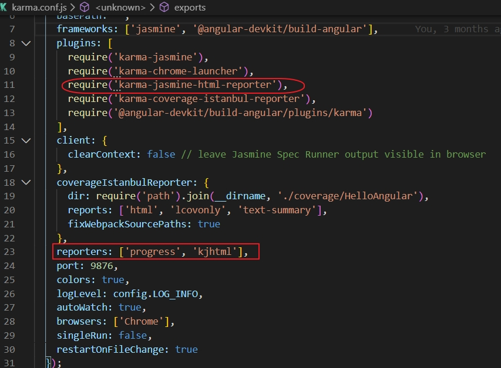
因為angular的測試它會掃描所有的檔名是**.spect.ts會將它視為單元測試的項目，所以可以在裏面來寫我們的單元測試的語法。可以命令列裏下ng test，它就會開始測試了。
先來產生一個小的測試元件，它會產生有xxx.html、xxx.scss、xxx.ts、xxx.spect.ts在產生spect.ts是我們可以寫單元測試的地方，先將之前所有有產生xxx.spect.ts全部來註解，不能它會測試所有的單元，不知道是那一個
Jasmine:
Karma:
是一套讓Jasmine測試可以運行在瀏覽器內顯示結果，並且可以持續監視程式達到撰寫或是修改完後立即可以看到瀏覽器上的結果。
Jasmine: 這個用來Behaviour Dreven Development（BDD）的Library，一般來說BDD會用比較口語的描述來撰寫測試，一來比容易閱讀，二來就算是非技術人員也能容易了解「這個測試在測什麼！」
在下方的helloWorld()是我們要測試的功能
1 2 3 4 5 6 7 8 9 10 export class UnitTestComponent implements OnInit { title = "untestapp" constructor ( ngOnInit() { } helloWorld() { return "Hello World" ; } }
接著是我們的測試程式碼：src\app\unit-test\unit-test.component.spec.ts
1 2 3 4 5 6 7 8 9 10 11 12 13 14 15 16 17 18 19 20 21 22 23 24 import { async , ComponentFixture, TestBed } from '@angular/core/testing' ;import { UnitTestComponent } from './unit-test.component' ;describe('UnitTestComponent' , () => let component: UnitTestComponent; let fixture: ComponentFixture<UnitTestComponent>; beforeEach(async (() => TestBed.configureTestingModule({ declarations: [UnitTestComponent] }) .compileComponents(); })); beforeEach(() => fixture = TestBed.createComponent(UnitTestComponent); component = fixture.componentInstance; fixture.detectChanges(); }); it('show hello world' , () => expect(component.helloWorld()).toEqual("Hello World" ); }); });
從測試程碼中可以看到describe(string, function);這個開頭。後方的fuction這是Test Suite裡面會有許多我們的關於“UnitTestComponent”的獨立單元測試的描述，所以可說function是單元測試的集合。
it(string,functon)這個定義了我們每一個獨立的單元測試，這會包含一個或是多個的Expectation（期望）。expect(actual)這個描述我們稱之為Expectation（期望）後方會接著呼應的結果（Matcher）來描述我們這個測試「期望的結果」是如何，通常這個matcher(expected)的描述就是我們說的呼應結果（Matcher）其值為boolean。期待值（expected）與實際值（actual value）被丟到expect這個fucntion內做比較，如果出來的值為false就代表這個測試失敗。
所以上述的那段測試碼就是說：這一段是個做UnitTestComponent的相關測試，然後show hello world這個單元測試就是～期望（expect）helloWrold()這個fucntion會等於（toEqual）Hello World這個字串
來看測試結果
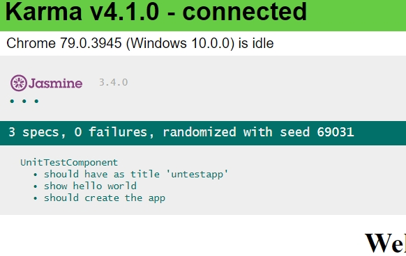
我𠵘可以看到有標題UnitTestComponent就是我們describe(string,function)的string說明內容，而內容的show hello world就是我們寫在it(string,function)的string說明。
現在我們故意把expect(component.helloWorld()).toEqual("Hello World");改成expect(component.helloWorld()).toEqual("angular"); 存檔之後測試會自動重新跑一次測試，這時候就會看失敗的資訊了。
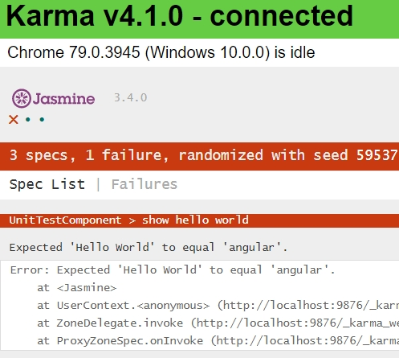
從程式碼中我們期待要等於”angular”這個字串，但是實際結果卻是失敗。因此會看到頁面顯示3個測試中（specs包含angular建立專案時自動幫你寫好的測試內容）有1個failure。
至於expect後方的Matchers除了目前看到的toEqual()之外Jasmine提供了許多Matchers給我們，以下是我大概列舉的。更多的請上Jasmine官網 參考。
toContain(number)
toThrow(string)
toBe(Instance)
toBeFalsy()
toBeTruthy()
toEqual(mixed)
toMatch(pattern)
toBeGreaterThan(number)
toBeNaN()
有時候在測試某些功能時我們會預先建立一些物件、服務之類的或是在單元測試結束後要求清除一些檔案或是變數因此Jasmine提供了下列幾個特殊Function供我們測試時做「預處理」或是「後處理」。
beforeAll
這個function只會在describe()內的所有測試之前被呼叫一次。
afterAll
這個function會在所有的describe()都做完之後被呼叫一次。
beforeEach
這個fucntion會在每一個it function執行之前被執行。
afterEach
這個function會在每一個單元測試後被呼叫。
我們來看一下Angular建立專案時幫我們事先寫好的測試碼
1 2 3 4 5 6 7 8 9 10 11 12 13 14 15 16 17 describe('AppComponent' , () => beforeEach(async (() => TestBed.configureTestingModule({ imports: [ RouterTestingModule ], declarations: [ AppComponent ], }).compileComponents(); })); it('should create the app' , () => const fixture = TestBed.createComponent(AppComponent); const app = fixture.debugElement.componentInstance; expect(app).toBeTruthy(); });
在上面的beforeEach()這段就會在下方每個it(function)執行之前被呼叫。
忽略某些測試的方法 如果想要Jasmine在測試的時候忽略某此已經寫好的測試碼時，除了註解掉之外另外一種就是在describe()或是it()的前面加上x也就是變成xdescribe()或題xit()。這樣Jasmine一樣會列出這些測試的名稱但是不會直的進行測試，而且結果的圈圈會打上灰色的圓圈。
專注某些測試 同樣專注某些測試的𤆧法就是在describe()與it()前面加上f，這樣在測試結果的report中會把這些需要專注的測試清單列在最前面。連同失敗或是成功的綠色圈圈也會被列在最前方。
service的測試 先將之前的語言服務移除，回到最原始的設定
在src\app\app.component.spec.ts
1 2 3 4 5 6 7 8 9 10 11 12 13 14 15 16 17 18 19 20 21 22 import { TestBed, async } from '@angular/core/testing' ;import { RouterTestingModule } from '@angular/router/testing' ;import { AppComponent } from './app.component' ;describe('AppComponent' , () => beforeEach(async (() => TestBed.configureTestingModule({ imports: [ RouterTestingModule, ], declarations: [ AppComponent, ], }).compileComponents(); })); it('should create the app' , () => const fixture = TestBed.createComponent(AppComponent); const app = fixture.debugElement.componentInstance; expect(app).toBeTruthy(); }); });
在產生一個login的元件和demo的service在專案內。
1 2 ng g component login ng g service service/demo
在src\app\app-routing.module.ts修改一開始是login的元件
1 2 3 4 5 6 7 8 9 10 11 12 13 14 15 16 17 18 import { NgModule } from '@angular/core' ;import { Routes, RouterModule, PreloadAllModules } from '@angular/router' ;import { LoginComponent } from './login/login.component' ;const routes: Routes = [ { path: '' , component: LoginComponent } ]; @NgModule ({ imports: [ RouterModule.forRoot(routes), ], exports: [RouterModule] }) export class AppRoutingModule { }
在src\app\login\login.component.html
1 2 3 4 5 6 7 8 9 10 <h4 > 登入帳號</h4 > <form [formGroup ]="formModel" (ngSubmit )="onSubmit($event)" > <div > <input formControlName ="email" type ="email" placeholder ="電子郵件(用於帳號登入)" > </div > <div > <input formControlName ="password" type ="password" placeholder ="密碼" > </div > <button [disabled ]="formModel.invalid" type ="submit" > 登入</button > </form >
在src\app\login\login.component.ts
1 2 3 4 5 6 7 8 9 10 11 12 13 14 15 16 17 18 19 20 21 22 23 24 25 26 27 28 29 30 31 32 33 34 35 36 37 38 39 40 41 42 43 44 import { Component, OnInit } from '@angular/core' ;import { FormGroup, FormBuilder, Validators } from '@angular/forms' ;@Component ({ selector: 'app-login' , templateUrl: './login.component.html' , styleUrls: ['./login.component.scss' ] }) export class LoginComponent implements OnInit { formModel: FormGroup; userInfo: any = {}; constructor ( private fb: FormBuilder ) { } ngOnInit() { this .BuildForm(); } BuildForm() { this .formModel = this .fb.group({ "email" : [ this .userInfo.email, [ Validators.required, Validators.minLength(3 ), Validators.pattern("^([a-zA-Z0-9_-])+@([a-zA-Z0-9_-])+((\.[a-zA-Z0-9_-]{2,3}){1,2})$" ) ] ], "password" : [ this .userInfo.password, [ Validators.required, Validators.minLength(4 ), ] ] }); } onSubmit(e) { if (this .formModel.valid) { this .userInfo = this .formModel.value; } console .log(this .userInfo); } }
在src\app\service\demo.service.ts
1 2 3 4 5 6 7 8 9 10 11 12 13 import { Injectable } from '@angular/core' ;import { of } from 'rxjs' ;@Injectable ({ providedIn: 'root' }) export class DemoService { protected value = "Hi Clover" ; constructor ( getValue() { return this .value; } getObservableValue() { return of('ogservalbe Clover' ); } getPromiseValue() { return Promise .resolve("promise value" ); } }
首先我們在demo.service.ts加入我們的method，上面這幾個其實只是return一些字串、Promise或是Observable物件回去，這是我們在前端很常會這樣個的功能。再來就是要開始針對demo.service撰寫測試了。
開啟在src\app\service\demo.service.spec.ts的檔案我們會看到Angular預先寫好的一些簡易測試如下：
1 2 3 4 5 6 7 8 9 10 11 12 import { TestBed } from '@angular/core/testing' ;import { DemoService } from './demo.service' ;describe('DemoService' , () => beforeEach(() => it('should be created' , () => const service: DemoService = TestBed.get(DemoService); expect(service).toBeTruthy(); }); });
簡單的說明一下這邊的內容：
TestBed:
可以說是Angular測試工具最重要的東西，它會建立一個動態的，虛擬的、可初始化的Angular＠NgModule來當作我們測試平台。
TestBed.configureTestingModule():
這個method會設定一個擁有＠NgModule的物件。
所以我們可以看出程式就是在DemoService內it這個測試之前，我們會產生一個@NgModule的物件。這個物件其實就是我們拿來模擬app.module.ts 的功用。但是由於我們是作單元測試因此不像我們的app.module.ts一樣declaretions跟import一堆東西。
在it這段裡面我們會看到一段TestBed.get(DemoService)的程式碼就是從TestBed這個instance取得DemoService，而下方的expect就是期待service是存在的。
不過我們可以把src\app\service\demo.service.spec.ts裏的beforEach()做點修改如下：
1 2 3 beforeEach(() => providers: [DemoService] }));
這會比較接近我們在寫Angular時一開始設定＠NgModule的模式，這樣也是比較方便在我們之後如果測試的service或是Component需要依賴其他服務的時候可以透過providers加入更多的service再做測試。
另一種則是在it()裡面我們Inject service進去，程式碼如下：
1 2 3 it('should be created by inject' , inject([DemoService], (service: DemoService ) => { expect(service).toBeTruthy(); }));
在src\app\login\login.component.scss要修改如下加入FormsModule、ReactiveFormsModule
1 2 3 4 5 6 7 8 9 10 11 12 13 14 15 16 17 18 19 20 21 22 23 24 25 26 27 28 29 30 import { async , ComponentFixture, TestBed } from '@angular/core/testing' ;import { LoginComponent } from './login.component' ;import { FormsModule, ReactiveFormsModule } from '@angular/forms' ;describe('LoginComponent' , () => let component: LoginComponent; let fixture: ComponentFixture<LoginComponent>; beforeEach(async (() => TestBed.configureTestingModule({ declarations: [LoginComponent], imports: [ FormsModule, ReactiveFormsModule, ], }) .compileComponents(); })); beforeEach(() => fixture = TestBed.createComponent(LoginComponent); component = fixture.componentInstance; fixture.detectChanges(); }); it('should create' , () => expect(component).toBeTruthy(); }); });
這邊我們先採用Angular預設的作法開始寫對於methods的測試。
單純的return Value:
首先我們看偌demo.getValue()必須return "Hi Clover"這個字串、所以就可以這樣子測試：
1 2 3 4 5 6 7 8 it('should be created' , () => const service: DemoService = TestBed.get(DemoService); expect(service).toBeTruthy(); }); it('Should return "Hi Clover" when call getValue' , () => let service: DemoService = TestBed.get(DemoService); expect(service.getValue()).toBe('Hi Clover' ); });
Promise method:
1 2 3 4 5 6 it('should return "promise Clover" call getPromiseValue()' , () => let service: DemoService = TestBed.get(DemoService); service.getPromiseValue().then(value => expect(value).toBe("promise value" ); }); });
Observable method:
1 2 3 4 5 6 it('should return "obserable Clover" call getObservableValue()' , () => let service: DemoService = TestBed.get(DemoService); service.getObservableValue().subscribe(value => expect(value).toBe("observable Clover" ); }); });
測試其中的功能
接下來我們在demo.service.ts這個service裡面多寫一個function這個function的內容很接近實際我們前端網頁在login之後把token存在local Storage的方法。但是我們這邊很簡單的就只是做檢查browser是否有沒有這個token。
在src\app\service\demo.service.ts
1 2 3 4 5 6 export class DemoService { isAuthenticated(): boolean { return !!localStorage.getItem('token' ); } }
然後在demo.service.spec.ts內獨立再寫一個describe()針對這個isAuthenticated()做測試。
1 2 3 4 5 6 7 8 9 10 11 12 13 14 15 describe('isAuthenticated testing' , () => let service: DemoService; beforeEach(() => service = new DemoService(); }); afterEach(() => service = null ; localStorage.removeItem('token' ); }); it('should return true from isAuthenticated when there is a token' , () => localStorage.setItem('token' , '1234' ); expect(service.isAuthenticated()).toBeTruthy(); }); });
這邊我們看到在beforeEach()內用了new的方法來產生DemoService，這個方法跟之前的用TestBed.configureTestingModule()不同，然後我們多寫了一個afterEach()裡面我們在每個測試之後會把service清空然後用localStorage把測試用的token清掉。
然後在it()裡面我們在測試時由於並沒有真的token在browser的local storage內，所以在測試的時候我們可以用一個「假的token」來當作實際資料使用，這樣子也能模擬真實環境通過測試結果。
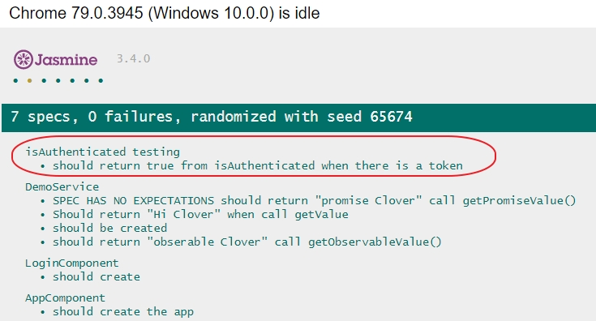
所以在測試的時候也是需要用一此所謂的mock data作為模擬真實環境的測試方式。
測試的Service有depend service 有時候我們測試的service本身可能會透過DI而注入他需要依靠的另外service。這個時候要怎麼測試呢？我們可以來看看以下幾種方式。
首先我們先建立一個給demo注入的depend service來讓demo有depend service
1 ng g service service/demodepend
然後我們在這個demodepend很簡單寫一個giveValue method，他的作用只是return value而已。
1 2 3 4 5 6 7 8 9 10 11 12 import { Injectable } from '@angular/core' ;@Injectable ({ providedIn: 'root' }) export class DemodependService { value = "Hello World" ; constructor ( giveValue(): string { return this .value; } }
我們修改demo.service.ts來注入（DI）demodepend.service，主要是import demodepend service並且在constructor裡注入。
1 2 3 4 5 6 7 8 9 10 11 import { DemodependService } from './demodepend.service' ;@Injectable ({ providedIn: 'root' }) export class DemoService { constructor (private depServ: DemodependService }
我們在demo.service.ts內新增一個method是會使用到demodepend service的
1 2 3 4 5 6 7 8 9 10 11 export class DemoService { showDepValue() { return this .depServ.giveValue(); } }
這邊我們應該很簡單的知道showDepValue()就只是呼叫demodepend service的giveValue()然後把demodepend的value Hello World回傳回來而已。接下來就是開始著手寫測試了。
測試手法：
真實的把demodepend service也一起建立：
在我測試demo.service的時候也把demodepend service import進來。所以我們一樣先在測試程式import它。
1 import { DemodependService } from './demodepend.service' ;
然後我𫔙一樣針對有depend service的method再寫一個describe()。
1 2 3 4 5 6 7 describe('test with DI Demo service' , () => let service: DemoService; it('giveValue should return value from the real servie' , () => service = new DemoService(new DemodependService()); expect(service.showDepValue()).toBe('Hello World' ); }); });
這邊在service = new DemoService()時，參數裡面又new depen service（DemodependService）進來，這方式就是直接把depend service一起進立。
但是這動方法有時候不實用，如果你的depend service 需要給一堆殊參數或是他本身又需要其他service或是他是一個直實會去跟後端拿資料的service這樣子可能就很不容易去做真實建立的方式。
使用fake service
這個方法就是我們fake一個demodependService如下（在src\app\service\demo.service.spec.ts下）：
1 2 3 4 5 6 export class fakeService extends DemodependService { value = 'fake hello world' ; } describe('test with DI Demo service' , () => });
這個我們把他寫在describe()的scope外等等用來做假DemodependService的使用，測試的程式碼我們就可以寫成如下：
1 2 3 4 it('getValue show return faked value form fakeServie' , () => service = new DemoService(new fakeService()); expect(service.showDepValue()).toBe('fake hello world' ); });
我們做單元測試希望可以盡量去解耦合！讓DemodependService有他自已的測試。demo service也是自已專屬性的測試不需要去測到DemodependService。如果DemodependService他本身的測試有pass我們就假設它本身是沒問題的，所以還可以用fake object來當可作測試使用。
使用fake Object：
1 2 3 4 5 it('giveValue should return faked value form fake object' , () => const fake = { giveValue: () =>'fake object hello world' }; service = new DemoService(fake as DemodependService); expect(service.showDepValue()).toBe('fake object hello world' ); });
這邊我們假設DemodependService本身沒有問題，所以直接fake一個物件當作depend Service，所以這邊fake物件就是當作DemodependService來做測試。
使用Jamine.createSpyObj：
另外一種就是使用jasmine.createSpyObj的方式產生我們depend service，有點類似上述的fake Object，但是由於jasmine提供一些額外method可以使用。
1 2 3 4 5 6 7 8 9 10 it('getValue should return return value form jasmine spyObj' , () => const depServSpy = jasmine.createSpyObj('DemodependService' , ['giveValue' ]); const stubValue = 'stub value' ; depServSpy.giveValue.and.returnValue(stubValue); service = new DemoService(depServSpy); expect(service.showDepValue()).toBe('stub value' ); expect(depServSpy.giveValue.calls.count()).toBe(1 , 'spy method was called once' ); expect(depServSpy.giveValue.calls.mostRecent().returnValue).toBe(stubValue); });
這邊我們用jamine.createSpyObj建立一個名為DemodependService並且有一個method為giveValue的屬性。
接著我們用stubValue這個變數存放這個depServSpy要傳的字串內容然後用depServSpy.giveValue.and.returnValue(stubValue)來對對depServSpe的giveValue指定回傳的訊息為stubValue（“stub value”）。這樣子可以在new DemoService時一併把這個spe service建立起來做測試。
最後兩個expect的測試可以看到jasmine的speObj本身還有提供一些如：calls.count()、calls.mostRecent()這種的method提供使用。
測試Http service： 在angular裡面對於http service通常都是使用rxjs的observable作為async方法的使用，所以在測試http service也會使用observable作為測試的要件之一。
這邊我們新增一個http 的service作為我們測試的對象
1 ng g service service/myhttp
然後在app.module.ts裡import HttpClientModule
1 2 3 4 5 6 7 8 9 import { HttpClientModule } from '@angular/common imports: [ BrowserModule, HttpClientModule, FormsModule, ReactiveFormsModule, //... AppRoutingModule, ],
回到myhttp.service.ts我們簡單的撰寫一個getUsers()的method:
1 2 3 4 5 6 7 8 9 10 11 12 13 14 15 16 17 18 19 20 21 22 23 24 25 26 27 28 29 30 31 32 import { Injectable } from '@angular/core' ;import { HttpHeaders, HttpClient } from '@angular/common/http' ;import { Observable, of } from 'rxjs' ;import { catchError } from 'rxjs/operators' ;export class DataForm { name: string ; id: number ; } const httpOptions = { headers: new HttpHeaders({ 'Content-Type' : 'application/json' }); } @Injectable ({ providedIn: 'root' }) export class MyhttpService { readonly userUrl = 'api/users' ; constructor (private http: HttpClient getUsers(): Observable<DataForm[]> { return this .http.get<DataForm[]>(this .userUrl) .pipe( catchError(this .handleError('getUsers' )) ) as Observable<DataForm[]>; } private handleError<T>(operation = 'operation' , result?: T) { return (error: any ): Observable<T> => { console .error(error); return of(result as T); }; } }
實際上因為我們沒有真實的後台，所以那個userUrl實際是沒有伺服器去接的。這邊我們就暫時以這個http service作為我們測試的目標。
接著我們偌myhttp.serfice.spec.ts來撰寫測試
使用Jasmine.createSpyObj：
我們把Angular產生的預設測試那段describe()刪除，改寫成如下:
1 2 3 4 5 6 7 8 9 10 11 12 13 14 15 16 17 18 19 20 import { MyhttpService, DataForm } from './myhttp.service' ;import { of } from 'rxjs' ;describe('MyhttpService by createSpyObj' , () => let httpClientSpy: { get : jasmine.Spy }; let myhttpServ: MyhttpService; beforeEach(() => httpClientSpy = jasmine.createSpyObj('HttpClient' , ['get' ]); myhttpServ = new MyhttpService(<any >httpClientSpy); }); it('should retur expected {id:1:name:"clover"}' , () => const expectedData: DataForm[] = [{ id: 1 , name: 'clover' }]; httpClientSpy.get.and.returnValue(of(expectedData)); myhttpServ.getUsers().subscribe(res => expect(res[0 ].id).toBe(1 ); expect(res[0 ].name).toBe('clover' ); expect(res).toEqual(expectedData); }); }); });
使用SpyOn：
我個人比較喜歡這個用法，比較像在寫＠NgModule，然後我們寫一個新的describe()如下
1 2 3 4 5 6 7 8 9 10 11 12 13 14 15 16 17 18 19 20 21 22 23 24 25 26 27 28 29 30 import { MyhttpService, DataForm } from './myhttp.service' ;import { of } from 'rxjs' ;import { TestBed } from '@angular/core/testing' ;import { HttpClientModule } from '@angular/common/http' ;describe('MyhttpService by SpyOn' , () => let myhttpServ: MyhttpService; beforeEach(() => TestBed.configureTestingModule({ imports: [HttpClientModule], providers: [MyhttpService] }).compileComponents(); }); beforeEach(() => myhttpServ = TestBed.get(MyhttpService); spyOn(myhttpServ, 'getUsers' ).and.returnValue( of([{ id: 1 , name: 'clover' }]) ); }); it('should be created' , () => const service: MyhttpService = TestBed.get(MyhttpService); expect(service).toBeTruthy(); }); it('should get id:1 name:clover' , () => myhttpServ.getUsers().subscribe(res => expect(res[0 ].id).toBe(1 ); expect(res[0 ].name).toBe('clover' ); }); }); });
spyOn其實就是把原本的myhttpServ裡的getUsers()原來要回傳的東西改成我們指定的內容 做測試。當然你或許會覺得「回傳你自己指定的內容」 這樣的測試好像有測跟沒測一樣！但是其實我們Http測試本身就是在沒沒有伺服器的狀況下做測試。 所以比較像是做了一個「假的回傳資料」來驗證這個service有沒有正常運行。
而且spyOn 的優點是不只可以用在Http Service 只要是angular的Service都可以用這個方式來測試
測試pipes元件 在Angular裡面提供了Pipes的功能可以讓你在HTML讓上面可以方更我們做一些Data與頁面上的文字顯示的方便處理。例如：下方提供一個把英文字串的開頭第一個字母轉轉成大寫。
建立Pipes：
首先我們先建立一個Pipe叫做my
撰寫Pipe功能：
首先我們在src\app\common\my.pipe.ts改寫如下
1 2 3 4 5 6 7 8 9 10 11 import { Pipe, PipeTransform } from '@angular/core' ;@Pipe ({ name: 'my' }) export class MyPipe implements PipeTransform { transform(value: string ): string { return value.length === 0 ? '' : value.replace(/\w\S*/g , (txt =>0 ].toUpperCase() + txt.substr(1 ).toLowerCase())); } }
撰寫MyPipe測試內容：
在angular幫我們產生的my.pipe.spect.ts內會已經事先幫你寫expect().toBeTruthy()的測試內容。但是𫍇個不足我們的需求因此我們加上兩個測試
當空字串時回值也為空字串。
有給字串時，回傳值必須為開頭大寫字母的字串。
以上的兩個測試原本就是我們Pipe提供的功能，相當然就是要測試這兩個功能了！
1 2 3 4 5 6 7 8 9 10 11 12 13 14 15 16 17 18 19 import { MyPipe } from './my.pipe' ;describe('MyPipe' , () => let pipe: MyPipe; beforeEach(() => pipe = new MyPipe(); }); it('create an instance' , () => expect(pipe).toBeTruthy(); }); it('should no value returns with empty world' , () => expect(pipe.transform('' )).toBe('' ); }); it('should return A world with UpperCase in first letter' , () => expect(pipe.transform('clover' )).toBe('Clover' ); }); });
Pipes的單元測試其實滿簡單的。大致上就是把Pipe當作一個function在做測試的概念。
使用Mock與Spy 這節結合之前我們建立的Login Component來做測試。首先我們在Demo.service.ts裡已有撰寫好的isAuthenticated()這個用來驗證登入的方法，現在Login Compoent就會使用這個方法來當作認證使用者的登入辨識（雖然這個方法根本沒有真實的跟後端做確認！）所以loign.component.ts內容如下：
1 2 3 4 5 6 7 8 9 10 11 12 13 14 15 16 17 18 19 20 21 22 23 24 25 26 27 28 29 30 31 32 33 34 35 36 37 38 39 40 41 42 43 44 45 46 47 48 49 50 51 import { Component, OnInit } from '@angular/core' ;import { FormGroup, FormBuilder, Validators } from '@angular/forms' ;import { DemoService } from '../service/demo.service' ;@Component ({ selector: 'app-login' , templateUrl: './login.component.html' , styleUrls: ['./login.component.scss' ] }) export class LoginComponent implements OnInit { formModel: FormGroup; userInfo: any = {}; constructor ( private fb: FormBuilder, private demo: DemoService ) { } ngOnInit() { this .BuildForm(); } BuildForm() { this .formModel = this .fb.group({ "email" : [ this .userInfo.email, [ Validators.required, Validators.minLength(3 ), Validators.pattern("^([a-zA-Z0-9_-])+@([a-zA-Z0-9_-])+((\.[a-zA-Z0-9_-]{2,3}){1,2})$" ) ] ], "password" : [ this .userInfo.password, [ Validators.required, Validators.minLength(4 ), ] ] }); } onSubmit(e) { if (this .formModel.valid) { this .userInfo = this .formModel.value; if (this .demo.isAuthenticated()) { alert('login success' ); } else { alert('login failed' ); } } } }
上述程式碼中我們使用demo service裡的isAuthenticated()來做簡單的驗證。有token就顯示登入成功，沒有token就顯示登入失敗。
接著我們來看看預設的login.component.spec.ts
1 2 3 4 5 6 7 8 9 10 11 12 13 14 15 16 17 18 19 20 21 22 23 24 import { async , ComponentFixture, TestBed } from '@angular/core/testing' ;import { LoginComponent } from './login.component' ;describe('LoginComponent' , () => let component: LoginComponent; let fixture: ComponentFixture<LoginComponent>; beforeEach(async (() => TestBed.configureTestingModule({ declarations: [LoginComponent], }) .compileComponents(); })); beforeEach(() => fixture = TestBed.createComponent(LoginComponent); component = fixture.componentInstance; fixture.detectChanges(); }); it('should create' , () => expect(component).toBeTruthy(); }); });
以上的這個測試會發生問題，錯誤的地方是在我們使用了Reactive Form在login.component所以測試時會出現認不得有關Reactive From在DOM上面相關的tag。
這邊我們import Reactive Form Module進來，並且在Test.configureTestingModule這個地方也把Reactive FormModule加進來。
1 2 3 4 5 6 7 8 9 10 11 12 import { ReactiveFormsModule } from '@angular/forms' ; beforeEach(async (() => TestBed.configureTestingModule({ declarations: [LoginComponent], imports: [ReactiveFormsModule], }) .compileComponents(); }));
這樣基礎的測試應該就會pass了！
createComponent(LoginComponent): 在我們設定好測試環境後(TestBed)我們呼叫createComponent來建立LoginComponent instance與增加相關的測試元件與DOM物件，並且回傳ComponentFixture。
這邊要注意的事～不要在執行createComponent()之後又修變TestBed的相關定義，因無createComponent()會凍結目前的TestBed定義除非關閉它才能進行新的配置。此外～你不能再使用任何TestBed的後續配置方法。如：configureTestingModule()、get()、也不能使用任何overrideing方法。如果這樣做，TestBed就會丟出錯誤。
ComponetFixture： 這是一個測試我們剛剛建立的Compenent與它相關元件的互動界面。要訪問這個instnce可以透過componentInstance來訪問。
1 2 fixture = TestBed.createComponent(LoginComponent); component = fixture.componentInstance;
detectChanges():目前沒有可以正確的使用
我們透過fixure.detectChanges()告訴TestBed去做data binding. 例如：
我們常用變數來放置Title實際要顯示的字串，但是要在detectChanges()之後angular才會把typescript那邊的變數內容跟binding到DOM上面。
此外他給測試人員一個機會在Angular初始化data binding以及lifecycle hooks之前探查並改變compenent的狀態。
例如：
下面這個測試會在fixture.detectChanges()之前修改原本的title屬性。
1 2 3 4 5 6 it('should display a different test title' , () => component.title = 'Test Title' ; fixture.detectChanges(); expect(component.title).toEqual('Test Title' ); fixture.detectChanges(); });
直實使用Service 首先我們來看看直實使用isAuthenticated()的寫法。
首先一樣import Demo service 並且修變TestBed.configureTestingModule這邊的設定。此外因為懶的一直宣告變數法拿demo servie所以多用了一個service變數在第二個beforeEach內先assign好demo service:
1 2 3 4 5 6 7 8 9 10 11 12 13 14 15 16 17 18 19 20 21 22 23 24 import { DemoService } from '../service/demo.service' ;describe('LoginComponent' , () => let component: LoginComponent; let fixture: ComponentFixture<LoginComponent>; let service: DemoService; beforeEach(async (() => TestBed.configureTestingModule({ declarations: [LoginComponent], imports: [ReactiveFormsModule], providers: [DemoService] }) .compileComponents(); })); beforeEach(() => fixture = TestBed.createComponent(LoginComponent); component = fixture.componentInstance; service = TestBed.get(DemoService); fixture.detectChanges(); });
由於測試的時候我們必須產生一個localStorage的token所以每次結束測試的時候必須要把token刪除。這邊我們使用afterEach()來實做。
1 2 3 afterEach(() => localStorage.removeItem('token' ); });
開始撰寫isAuthenticated的測試
1 2 3 4 5 6 7 8 9 it('should login failed when user is not authenticated' , () => expect(service.isAuthenticated()).toBeFalsy(); }); it('should login success when token object exist' , () => localStorage.setItem('token' , '12345' ); expect(service.isAuthenticated()).toBeTruthy(); });
第一個測試中我們並沒有產生一個實際的token所以認證會失敗也因此測試結果也會是符合我們的期待（expected）。
第二個測試中我們預先產生了一個內容為12345的token，所以認證應該要通過測試結果也會符合我們期待（expected）。
我們會發現採用真實的isAuthenticated()的麻煩處就是要針對service去「生」出他需要的東西並且最後還要知道那些生出來的東西需不需要清掉（afterEach）避免一些記憶體的leak。
所以如果我們可以用一個「假的」isAuthenticated而不用真的去生token會比較方便一點，這就是Mock的功用。
Mocking with fake Class 當然Mock的缺點就是要額外寫一個很像isAuthenticated的物件來當作service使用。這邊我們另外寫一個describe作為Mock的使用並且測試。然後在這個新的describe()上方寫一個MockAuthService如下：
1 2 3 4 5 6 7 8 9 10 11 12 13 14 15 16 17 18 19 20 21 22 23 24 25 26 27 28 29 30 31 32 33 34 35 36 37 38 39 40 41 42 43 44 45 46 47 import { async , ComponentFixture, TestBed } from '@angular/core/testing' ;import { LoginComponent } from './login.component' ;import { ReactiveFormsModule } from '@angular/forms' ;import { DemoService } from '../service/demo.service' ;describe('LoginComponent' , () => }); class MockAuthService { authenticated = false ; isAuthenticated(): boolean { return this .authenticated; } } describe('LoginCompoenet with mock' , () => let component: LoginComponent; let fixture: ComponentFixture<LoginComponent>; let service: MockAuthService; beforeEach(async () => { TestBed.configureTestingModule({ declarations: [LoginComponent], imports: [ReactiveFormsModule], providers: [MockAuthService] }) .compileComponents(); }); beforeEach(() => fixture = TestBed.createComponent(LoginComponent); component = fixture.componentInstance; service = TestBed.get(MockAuthService); fixture.detectChanges(); }); it('should be create' , () => expect(component).toBeTruthy(); }); it('should login failed when user is not authenticated' , () => service.authenticated = false ; expect(service.isAuthenticated()).toBeFalsy(); }); it('should login success when user is authenticatrd' , () => service.authenticated = true ; expect(service.isAuthenticated()).toBeTruthy(); }); });
首先我們建立一個Mock的Authenticated並且method的名稱也是取的跟demo service裡面的isAuthenticatrd()一模一樣並且用這個Mock的物件取代原先的demo service來建立測試環境。
然後透過修改MockAuthSercie的authenticated 來控制我們測試isAuthenticatrd()回傳的內容。
好處就是：
我們取代原本的demo service甚至連import都不需要。
就算後來demo service裡的isAuthenticated()做了修改，我們的測試還是可以進行。只需要修變MockAuthService的結果與demo service內的結果一致就好。
Mocking by overriding functions 另一種我們透過overriding的方式來繼承原來的demo service做測試，差別於Fake Class的就是我們是用extend的方式繼承demo serice並且修改isAuthenticatrd()這個方法
1 2 3 4 5 6 7 8 9 10 11 12 13 14 15 16 17 18 19 20 21 22 23 24 25 26 27 28 29 30 31 32 33 34 35 36 37 38 39 40 41 42 43 44 45 46 47 48 49 50 51 describe('LoginComponent' , () => }); class MockAuthService { authenticated = false ; isAuthenticated(): boolean { return this .authenticated; } } describe('LoginCompoenet with mock' , () => }); class MockAuthServiceExt extends DemoService { authenticated = false ; isAuthenticated() { return this .authenticated; } } describe('LoginCompoenet with mock extends' , () => let component: LoginComponent; let fixture: ComponentFixture<LoginComponent>; let service: MockAuthServiceExt; beforeEach(async () => { TestBed.configureTestingModule({ declarations: [LoginComponent], imports: [ReactiveFormsModule], providers: [MockAuthServiceExt] }) .compileComponents(); }); beforeEach(() => fixture = TestBed.createComponent(LoginComponent); component = fixture.componentInstance; service = TestBed.get(MockAuthServiceExt); fixture.detectChanges(); }); it('should be create' , () => expect(component).toBeTruthy(); }); it('should login failed when user is not authenticatrd' , () => service.authenticated = false ; expect(service.isAuthenticated()).toBeFalsy(); }); it('should login success when user is authenticatrd' , () => service.authenticated = true ; expect(service.isAuthenticated()).toBeTruthy(); }); });
而describe()部分也是大同小異，只是記得providers內要改成MockAuthServiceExt這個物件。
Mocking with real service with Spy 有時候可能service的內容比較複雜很難用fake class或是overridign的方式去改寫，但是我們又不想去產生這個service需要基礎資料，這個時候可以改用Spy的方式來做測試。
首先我們跟使用真service的方法一樣建立測試環境。主要差別在撰寫it()時後的呼叫isAuthenticatrd()的作法。
1 2 3 4 5 6 7 8 9 10 11 12 13 14 15 16 17 18 19 20 21 22 23 24 25 26 27 28 29 30 31 32 33 34 35 36 37 38 39 40 41 42 43 44 45 46 47 48 49 50 51 52 53 54 55 describe('LoginComponent' , () => }); class MockAuthService { authenticated = false ; isAuthenticated(): boolean { return this .authenticated; } } describe('LoginCompoenet with mock' , () => }); class MockAuthServiceExt extends DemoService { authenticated = false ; isAuthenticated() { return this .authenticated; } } describe('LoginCompoenet with mock extends' , () => }); describe('Mocking with real service with Spy' , () => let component: LoginComponent; let fixture: ComponentFixture<LoginComponent>; let service: DemoService; beforeEach(async () => { TestBed.configureTestingModule({ declarations: [LoginComponent], imports: [ReactiveFormsModule], providers: [DemoService] }) .compileComponents(); }); beforeEach(() => fixture = TestBed.createComponent(LoginComponent); component = fixture.componentInstance; service = TestBed.get(DemoService); fixture.detectChanges(); }); it('should login success whtn user is authenticated' , () => spyOn(service, 'isAuthenticated' ).and.returnValue(true ); expect(service.isAuthenticated()).toBeTruthy(); }); it('should login failed when user is no authenticated' , () => spyOn(service, 'isAuthenticated' ).and.returnValue(false ); expect(service.isAuthenticated()).toBeFalsy(); }); });
簡單的說spyOn像間諜一樣會針對你給的目標（service）內的成員（isAuthenticated）給與回傳的假資料，這樣我們不用直的去邁立token來讓demo service內的isAuthenticated()使用。
Spy方更在對於一些需要透過API跟後端拿資料做測試的時候，就可以用Spy直接在程式內建立測試用Data而不用真的有個後端、資料庫去拿。關於SpyOn可以到官方網站 看更多詳細的資料
總結： 這幾種就依需求去採用，我自已是還蠻常使用Spy的方法來做測試供大家參考。
Detect Change with DebugElement 在頁面上經常會有某些DOM因為某些條件下消失或是出現，我們接下來就會以Login Component在使用者登入後顯示“登出”按鈕的DOM元件做測試。
由於我們之前並沒有實做登入後的畫面，所以我們首先修改login.component.html內容加入一個簡單的登入後畫面。
加入登入後畫面 我們使用angular提供ngIf在Html作為控制顯示登入後與登入前的畫面，所以要稍微修變原本的form表單，並且加入登入後的畫面程式砠在form表單parent之下。
1 2 3 4 5 6 7 8 9 10 11 12 13 14 15 16 17 18 19 <section *ngIf ="!isAuthenticated" > <h4 > 登入帳號</h4 > <form [formGroup ]="formModel" (ngSubmit )="onSubmit()" > <div > <input formControlName ="email" type ="email" id ="email" placeholder ="電子郵件(用於帳號登入)" > </div > <div > <input formControlName ="password" type ="password" id ="password" placeholder ="密碼" > </div > <button [disabled ]="formModel.invalid" type ="submit" > 登入</button > </form > </section > <section *ngIf ="isAuthenticated" > <h3 > 你好： <span > {{this.formModel.value.email}}</span > </h3 > <button id ="logoutBtn" (click )="logout()" > 登出</button > </section >
修改程式邏輯部份 接下來是修改程式邏輯部份，簡易的判斷使用者是否有登入並且切換登入後的畫面。這邊用一個變數isAuthenticated來存卡service.isAuthenticatrd()回傳登入是否成功的boolean資料，並且Html的*ngIf也是透過這個變數來檢查該切換到哪個畫面。除了新增isAuthenticated變數外，還要修改onSubmit()這個當使用者按下登入的處理function。也要處理登出。
1 2 3 4 5 6 7 8 9 10 11 12 13 14 15 16 17 18 19 20 21 22 23 24 25 26 27 28 29 30 31 32 33 34 35 36 37 38 39 40 41 42 43 44 45 46 47 48 49 50 51 52 53 54 55 56 57 58 59 import { Component, OnInit } from '@angular/core' ;import { FormGroup, FormBuilder, Validators } from '@angular/forms' ;import { DemoService } from '../service/demo.service' ;@Component ({ selector: 'app-login' , templateUrl: './login.component.html' , styleUrls: ['./login.component.scss' ] }) export class LoginComponent implements OnInit { formModel: FormGroup; isAuthenticated = false ; userInfo: any = {}; constructor ( private fb: FormBuilder, private demo: DemoService ) { } ngOnInit() { this .BuildForm(); } BuildForm() { this .formModel = this .fb.group({ "email" : [ this .userInfo.email, [ Validators.required, Validators.minLength(3 ), Validators.pattern("^([a-zA-Z0-9_-])+@([a-zA-Z0-9_-])+((\.[a-zA-Z0-9_-]{2,3}){1,2})$" ) ] ], "password" : [ this .userInfo.password, [ Validators.required, Validators.minLength(4 ), ] ] }); } onSubmit(e) { if (this .formModel.valid) { localStorage.setItem('token' , JSON .stringify({ email: this .formModel.value.email })); this .userInfo = this .formModel.value; if (this .demo.isAuthenticated()) { this .isAuthenticated = true ; } else { this .isAuthenticated = false ; } } } logout() { localStorage.removeItem('token' ); this .isAuthenticated = false ; } }
這樣子基本上就可以有登入後的簡易顯示使用者的email並且還有一個「登出」的按鈕了
登入前
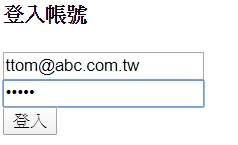
登入後
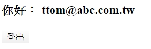
撰寫測試 接下來回到login.compenent.spec.ts開如著手撰寫測試內容。
我們要測試的項目有以下兩種：
登入前要有登入按鈕、登入按鈕文字為”登入”，登出按鈕是”消失”的。
登入後要蚏登出按鈕、要顯示使用的email、登入按鈕是”消失”的。
大概就是這兩項。
一樣我們在login.component.spec.ts額外寫一個describe()來為這次的detect change做撰寫測試內容。以下是基本的測試環境建立。
1 2 3 4 5 6 7 8 9 10 11 12 13 14 15 16 17 18 19 describe('LoginComponent login' , () => let component: LoginComponent; let fixture: ComponentFixture<LoginComponent>; let service: DemoService; let el: DebugElement; beforeEach(() => TestBed.configureTestingModule({ declarations: [LoginComponent], imports: [ReactiveFormsModule], providers: [DemoService] }); fixture = TestBed.createComponent(LoginComponent); component = fixture.componentInstance; service = TestBed.get(DemoService); el = fixture.debugElement; fixture.detectChanges(); }); });
這邊我們注意到一個新的Type名稱：DebugElement，這是一個在@angular/core裡登拱物件。所以我們要import DebugElemnt進來：
1 import { DebugElement } from '@angular/core' ;
DebugElement:
這是Angular提供來query測試時產生出來的DOM或是頁面上elements，熟知Angular的人知道我們通常會用fixture.nativeElement這個物件來query我們app前𧛙的DOM與elements。實際上在測試的時也是可以用原棖的fixturs.nativeElement去query前端的DOM並且用他做一些判存不存或是修改文字、CSS…等功能，但是為什麼Angular還要提供DebugElement呢？主要是因為原本的nativeElement是依靠運行時的環境！但是你測試的時候可能是在沒有瀏覽器的server端做測試（持續交付的流程下會採用Jenkins、Travis或CircleCI）這時候就沒有真的DOM可以使用HTML api去quert 。
所以Angular依靠DebugElement抽象化物件來取代建立真正的HTML elements tree。Angular建立DebugElement tree來包裝各個原生平台的elements tree並且安全支持在各種平台上。
接著我們來看看第一頁測試的程式碼要如何寫。
1 2 3 4 5 6 7 8 9 10 11 12 it('Should get login button and without logout button befor authenticatrd user' , () => const loginBTN = el.nativeElement.querySelector('button[type="submit"]' ); const logoutBTN = el.nativeElement.querySelector('#logoutBtn' ); expect(loginBTN).toBeTruthy(); expect(loginBTN.textContent.trim()).toBe('登入' ); expect(logoutBTN).toBeNull(); });
這邊我們可以看到DebugElemtn的使用上也跟我們在使用Angular原本的nativeElement用法一樣，可以使用querySelector()來query我們要的DOM並透過回傳的物件作為我們測試的用途。
再來是第二項的測試，這邊必須用到上一章提到的fixrure.detectChanges()作為我們執行submit後要求Angular去做data binding跟畫面上的變化。
此外我們使用的是Reactive Form的表單，所以在手動給予Email跟Password的時候記得要用pathValue()的方式。
1 2 3 4 5 6 7 8 9 10 11 12 13 14 15 16 17 18 it('should show user email, logout button and without login button after auteenticated.' , () => const testEmail = 'clover@example.com' ; const testPass = 'abcd1234' ; spyOn(service, 'isAuthenticated' ).and.returnValue(true ); component.formModel.patchValue({ email: testEmail, password: testPass }); component.onSubmit(); fixture.detectChanges(); const userEmail = el.nativeElement.querySelector('#userEmial' ); const loginBTN = el.nativeElement.querySelector('button[type="submit"]' ); const logoutBTN = el.nativeElement.querySelector('#logoutBtn' ); expect(userEmail.textContent.trim()).toBe(testEmail); expect(logoutBTN).toBeTruthy(); expect(loginBTN).toBeNull(); });
這樣就完成了我們在使用登入後要能看見使用者的Email、登出按鈕與登入按鈕必須消失的畫面。
關於Component with async的測試 來由 在前端的服務裡，我們很常會透過API跟後端拿取資料，不管是登入的認證或是一些資料的顯示都必須透過網路這種會有延遲、非同步的、必須等待的方式與服務。所以在非同步的service我們要怎麼做測試呢？這次就來撰寫有關async的測試吧！
加入非同步service 我們在demo.service.ts內加入一個非同步的認證服務來當作async的service如下：
1 2 3 4 5 6 7 8 9 10 11 12 13 14 15 import { of, Observable } from 'rxjs' ;import { delay } from 'rxjs/operators' ;@Injectable ({ providedIn: 'root' }) export class DemoService { asyncAuthecticated(): Observable<boolean > { return of(!!localStorage.getItem('token' )) .pipe(delay(3000 )); } }
上述的程式碼會在3秒後才會回傳localStorage是否有沒有token這個物件。有的話我們就認為認證成功，沒有的話就否。
所以接下來我們修改login.component.ts內的onSubmit()原生認證的方式，由isAuthenticated()改為asyncAuAythenticatrd()
在src\app\login\login.component.ts
1 2 3 4 5 6 7 8 9 10 11 12 13 14 15 16 17 18 19 20 21 22 23 24 25 26 27 28 29 30 31 export class LoginComponent implements OnInit { onSubmit() { if (this .formModel.valid) { localStorage.setItem('token' , JSON .stringify({ email: this .formModel.value.email })); this .userInfo = this .formModel.value; this .demo.asyncAuthecticated().subscribe( res => { if (res) { this .isAuthenticated = true ; } else { this .isAuthenticated = false ; } } ); } } }
這樣子基本上我們就可以模擬網路延遲的認證情況。
測試撰寫 在我們原本撰寫的登入測試should show user email, logout button and without login button after authenticated的部份，把spyOn的isAuthecticated改成asyncAuthenticated並把回傳值設為Observable，執行測試會發生錯誤資訊。
1 2 3 4 5 6 7 8 9 10 11 12 13 14 15 16 17 18 19 it('should show user email, logout button and without login button after authenticated.' , () => const testEmail = 'clover@example.com' ; const testPass = 'abcd1234' ; spyOn(service, 'asyncAuthecticated' ).and.returnValue(of(true ).pipe(delay(3000 ))); component.formModel.patchValue({ email: testEmail, password: testPass }); component.onSubmit(); fixture.detectChanges(); const userEmail = el.nativeElement.querySelector('#userEmial' ); const loginBTN = el.nativeElement.querySelector('button[type="submit"]' ); const logoutBTN = el.nativeElement.querySelector('#logoutBtn' ); expect(userEmail.textContent.trim()).toBe(testEmail); expect(logoutBTN).toBeTruthy(); expect(loginBTN).toBeNull(); });
結果：
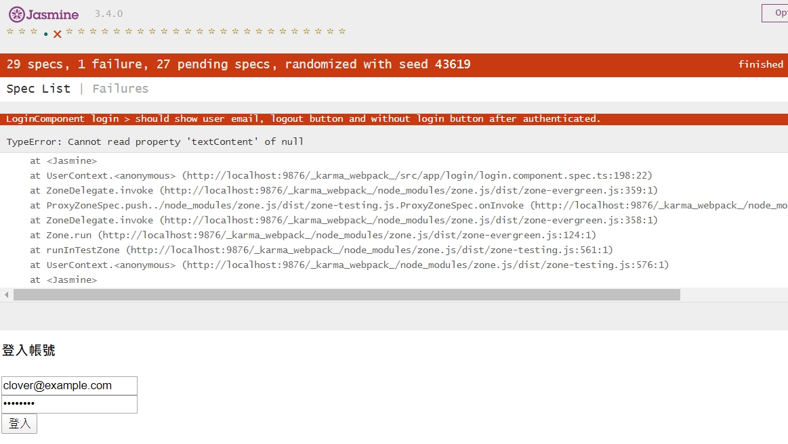
這邊會看到在測試的時候其實抓不到使用者的email資訊，因為我們的認證在我們「故意」的delay下必須等待3秒才能通過證為在之後將使用者的emial顯示在網頁上。
測試Async Service 這僂我們先把原本的測試it()加上x讓Jasmine先忽略這個測試項目並且額外撰寫一個新的describe()測試項目。
1 2 3 4 5 6 7 8 9 10 11 12 13 14 15 16 17 18 19 20 21 22 23 24 25 26 describe('Async testing authenticated' , () => let component: LoginComponent; let fixture: ComponentFixture<LoginComponent>; let service: DemoService; let el: DebugElement; let fakeService = jasmine.createSpyObj('demo' , ['asyncAuthenticatrd' ]); let spy = fakeService.asyncAuthecticated.and.returnValue(of(true ).pipe(delay(3000 ))); beforeEach(() => TestBed.configureTestingModule({ declarations: [LoginComponent], imports: [ReactiveFormsModule], providers: [ { provide: DemoService, userValue: fakeService } ] }); fixture = TestBed.createComponent(LoginComponent); component = fixture.componentInstance; el = fixture.debugElement; fixture.detectChanges(); }); });
這邊我們採用Jasmine的createSpyObj()來產生一個我們之前使用spyOn的物件，用他來當作我們「假的」demo service只不過我們目前這個假的service只有一個方法叫做asyncAuthenticated名字跟我們demo.service裡的asyncAuthecticated一模一樣。
接著我們來讓這個fakeService的asyncAuthenticated方法回傳一個delay3秒的true Observable物件。
最後在產生測試環境的設定裡providers內用fakeService取代DemoService就可以得到我們的測試空間。
使用Jamine done function
這個done function 是Jasmine內建的測試async spec，這個使用的注意地方在於我們it()後方的function原本是沒有傳入任何參數的。但是使用done function必須傳入done 這個 function參數並且在async測試結事地方加入done()來告知Jasmine這一段是做async的測試。
done function
1 2 3 4 5 6 7 8 9 10 11 12 13 14 15 16 17 18 19 it('async testing via done:after authenticated should get email info,logout button and can not see lgoin button' , (done: DoneFn ) => { const testEmail = 'clover@example.com' ; const testPass = 'adcd1234' ; component.formModel.patchValue({ email: testEmail, password: testPass }); component.onSubmit(); spy.calls.mostRecent().returnValue.subscribe(() => fixture.detectChanges(); const userEmail = el.nativeElement.querySelector('#userEmial' ); const loginBTN = el.nativeElement.querySelector('button[type="submit"]' ); const logoutBTN = el.nativeElement.querySelector('#logoutBtn' ); expect(userEmail.textContent.trim()).toBe(testEmail); expect(logoutBTN).toBeTruthy(); done(); }); });
在這額外注意的是mostRecent()這個method這個是回傳最近一次這個spy被使用的資訊然後透過fixture.detectChanges()做data binding再來做頁面的上面測試。
另外這這邊要注意的事情是由於我們的Spy Object回傳的是Observable所以最後mostRecent().ReturnValue後面是subscribe()，如果你的Spy Object回傳是Promise要變用then來做剩下的expect測試。
使用fakeAsync()和tick()未成功 另一種方式為angular提供的fakeAsync()搭配tick()來做async測試。首先我們要先impot fakeAsync與tick這兩個在@angular/core/teting的物件進來。
接著我們撰寫一個新的it()做測試，程試碼如下：
1 2 3 4 5 6 7 8 9 10 11 12 13 14 15 16 17 18 19 it('async testing vi fakeAsync and tick' , fakeAsync(() => const testEmail = 'clover@example.com' ; const testPass = 'adcd1234' ; component.formModel.patchValue({ email: testEmail, password: testPass }); tick(3000 ); fixture.detectChanges(); const userEmail = el.nativeElement.querySelector('#userEmail' ); console .log('userEmail=>' + userEmail); const loginBTN = el.nativeElement.querySelector('button[type="submit"]' ); const logoutBTN = el.nativeElement.querySelector('#logoutBtn' ); console .log('logoutBTN=>' + logoutBTN); expect(userEmail.textContent.trim()).toBe(testEmail); expect(logoutBTN).toBeTruthy(); }));
使用aynce() with fixture.whenSable()做非同步測試 1 2 3 4 5 6 7 8 9 10 11 12 13 14 15 16 17 18 19 20 21 22 23 24 25 26 it('async testing via WhenStable: after authenticated should get email info, logut button and can not find login button.' , () => { const testEmail = 'clover@example.com' ; const testPass = 'abcd1234' ; component.formModel.patchValue({ email: testEmail, password: testPass }); component.onSubmit(); fixture.whenStable().then(() => fixture.detectChanges(); const userEmail = el.nativeElement.querySelector('#userEmail' ); const loginBTN = el.nativeElement.querySelector('button[type="submit"]' ); const logoutBTN = el.nativeElement.querySelector('#logoutBtn' ); expect(userEmail.textContent.trim()).toBe(testEmail); expect(logoutBTN).toBeTruthy(); expect(loginBTN).toBeNull(); }); });
測試Directive與Compoent結合(未成功) 這次我們來測試Angular directive元件。一樣我們要先產生一個directive這邊我們會使用Angular官方的教學文件範例來做測試。
新增directive 1 ng g directive _directive/hoverFocus
會在_diretive下看到兩個angular cli產生的directive檔案
src\app_directive\hover-focus.directive.ts
src\app_directive\hover-focus.directive.spec.ts
撰寫Directive 我們先修變hover-focus.directive.ts檔案，撰寫一個「當滑鼠游標移到這個directive標注的dom上面」就把背景顏色改成黃色。
在src\app\_directive\hover-focus.directive.ts
1 2 3 4 5 6 7 8 9 10 11 12 13 14 15 16 17 18 import { Directive, ElementRef, HostListener } from '@angular/core' ;@Directive ({ selector: '[appHoverFocus]' }) export class HoverFocusDirective { constructor (private el: ElementRef @HostListener ('mouseenter' ) onMouseEnter() { this .hightlight('yellow' ); } @HostListener ('mouseleave' ) onMouseLeave() { this .hightlight(null ); } private hightlight(color: string ) { this .el.nativeElement.style.backgroundColor = color; } }
我們可以在login.component.html的「登入帳號」的dom裡面加入這個directive就可以看到當滑鼠移入這個名字上，這個h4的tag背影被改成黃色。
在src\app\login\login.component.html
1 2 3 4 <section *ngIf ="!isAuthenticated" > <h4 appHoverFocus > 登入帳號</h4 > </section >
撰寫測試： 我們先看angular cli幫我們產生好的hover focus的測試檔內容：
1 2 3 4 5 6 7 8 import { HoverFocusDirective } from './hover-focus.directive' ;describe('HoverFocusDirective' , () => it('should create an instance' , () => const directive = new HoverFocusDirective(); expect(directive).toBeTruthy(); }); });
在這個測試檔下是會測試失敗的！因為我們的hover focus在constructor()裡面有加入一個private el:ElementRef的預設member所以在const directive = new HoverFocusDirective();會失敗。
所以這邊我們給他一個new directive參數就可以使用就能通過這個測試。
1 2 3 4 5 6 7 8 9 10 import { HoverFocusDirective } from './hover-focus.directive' ;import { ElementRef } from '@angular/core' ;describe('HoverFocusDirective' , () => let el: ElementRef; it('should create an instance' , () => const directive = new HoverFocusDirective(el); expect(directive).toBeTruthy(); }); });
但是上述的測試只是單純驗證這個directive到底有沒有存在，但是對於這個directive到底有有有在滑鼠游移在我們指定的dom上面時把背景改成黃色呢？因此我們必須在測試時候產生一個有html dom的測試環境來針對我們的directive做測試。
首先我們必須產生一個有html dom的template物件，然後在這個物件上面的可入directive來做測試驗證
1 2 3 4 5 6 7 8 9 10 11 12 13 14 15 16 17 18 19 20 21 22 23 24 25 26 27 28 29 import { HoverFocusDirective } from './hover-focus.directive' ;import { ElementRef, Component, DebugElement } from '@angular/core' ;import { ComponentFixture, TestBed } from '@angular/core/testing' ;import { By } from '@angular/platform-browser' ;@Component ({ template: `<h1 id='title'>Hello World</h1>` , }) class TestHoverFocusComponent { }describe('HoverFocusDirective' , () => let component: TestHoverFocusComponent; let fixture: ComponentFixture<TestHoverFocusComponent>; let titleEl: DebugElement; let el: ElementRef; beforeEach(() => TestBed.configureTestingModule({ declarations: [TestHoverFocusComponent, HoverFocusDirective], }); fixture = TestBed.createComponent(TestHoverFocusComponent); component = fixture.componentInstance; titleEl = fixture.debugElement.query(By.css('#title' )); }); it('should create an instance' , () => const directive = new HoverFocusDirective(el); expect(directive).toBeTruthy(); }); });
這邊要注要的是titleEl我們用的Angular提供By的方式來抓取在html上的title而非之前我們使用ElementRef的querySelector()這是因為我們在後續it()使用riggerEventHandler()的function。
再來是it()部份程式碼如下：
1 2 3 4 5 6 7 8 it('hovering over title' , () => titleEl.triggerEventHandler('mouseenter' , null ); fixture.detectChanges(); expect(titleEl.nativeElement.style.backgroundColor).toBe('yellow' ); titleEl.triggerEventHandler('mouseleave' , null ); fixture.detectChanges(); expect(titleEl.nativeElement.style.backgroundColor).toBe('' ); });
這邊說明一下我們為什麼要使用By.css()來抓取我們要測試的目標。
因為triggerEventHandler()是我們用來要求Angular來做mouser enter的行為，但是這個triggerEventHandler()是屬於angular提供的功能而非HTML DOM本身的功能，所以如果我們使用fixture.debugElement.nativeElement.querySelector()來抓title的話。會因為DOM本身沒有triggerEventHandler()的功能變成測試產生錯誤。
套用到login component上的測試 一樣寫一個新的 describe() 與包含 HoverFocusDirective 的測試環境。
1 2 3 4 5 6 7 8 9 10 11 12 13 14 15 16 17 18 19 20 21 22 23 24 25 26 27 28 29 30 describe('Test directive in LoginComponent' , () => let component: LoginComponent; let fixture: ComponentFixture<LoginComponent>; let service: DemoService; let el: DebugElement; beforeEach(() => TestBed.configureTestingModule({ declarations: [ LoginComponent, HoverFocusDirective], imports: [ReactiveFormsModule], providers: [DemoService] }); fixture = TestBed.createComponent(LoginComponent); component = fixture.componentInstance; service = TestBed.get(DemoService); el = fixture.debugElement; fixture.detectChanges(); }); it('test hover focus directive on LoginComponent' , () => let titleEl = el.query(By.css('h4' )); titleEl.triggerEventHandler('mouseenter' , null ); fixture.detectChanges(); expect(titleEl.nativeElement.style.backgroundColor).toBe('yellow' ); titleEl.triggerEventHandler('mouseleave' , null ); fixture.detectChanges(); expect(titleEl.nativeElement.style.backgroundColor).toBe('' ); }); });
lession11-1:注射器樹基礎知識 為了能更方更地理解後面的內容，需要預先理解以下兩個概念：
同時還要介紹一個調試神器Augury，是“占卜”、“預言”的意思，不是angry。不是憤怒！
組件樹 目前，幾乎所有前端框架都在玩“組件化”，而且最近都不約而同地選擇了，“標籤化”這種思路，Angular也不例外。“標籤化”會導致一個很自然的結果，組件之𫂾會形成樹形結構。例如，對於下面這樣一個界面：
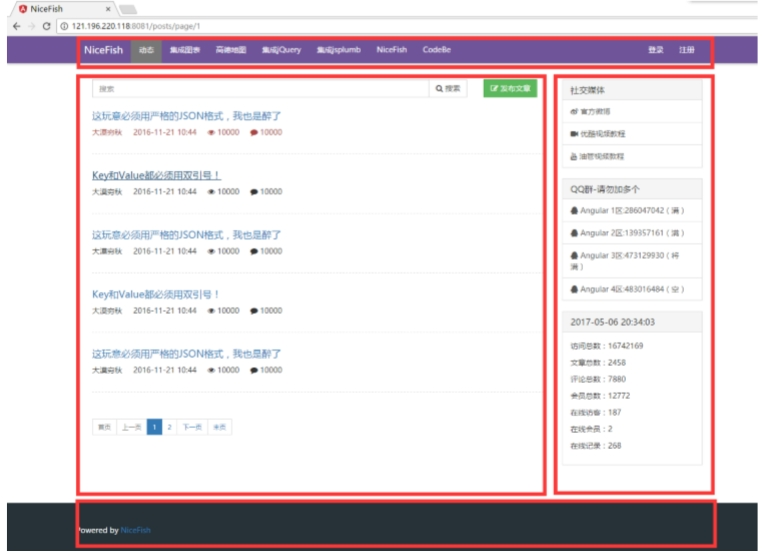
用Angular實現出來的組件樹結構是這樣的：
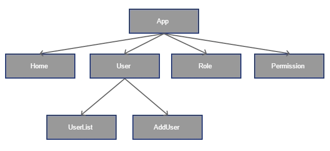
Injector Tree 如你所知，AngularJS是第一個把“依賴注入”（Dependency Injection）思想帶到前端開發領域的框架。
關於“注射器樹”這里說得更精確一點：如果一個DOM元素上面被創建了Component或者Directive，Angular就會創建一個對應的注射器實例。
對於上面的組件結構，形成的注射器結構是這樣的：
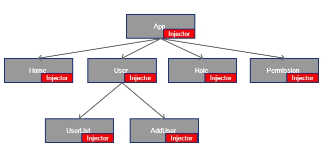
很明顯，這些Injector實例也構成了樹形結構：
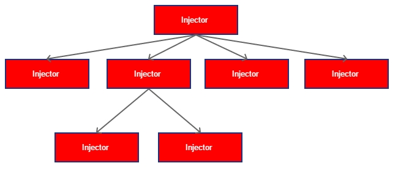
利用Augury可視化查看注射器樹 Augury是一款Chrome插件，它是調試Angular應用的利器，利用它可以可視化展示組件樹，路由樹，以及服務依賴關系。
小結 到這里為止你知道了：**在Angular應用運行時，組件之間會構成樹形結構，Injector（注射器）的實例也會構成樹形結構。
lession11-2:Angular依賴注入的基本玩法（1） Angular的依賴注入機制很強大，有三種最典的場景：
全局單例模式的Service
多實例模式的Service
異步模上的Service
全局單例模式 安裝
1 npm install angular2-uuid --save
建立UserList
建立UserListService
1 ng g service user-list/service/UserList
在src\app\app.component.html
1 2 3 <user-list > </user-list > <user-list > </user-list > <router-outlet > </router-outlet >
在src\app\user-list\service\user-list.service.ts
1 2 3 4 5 6 7 8 9 10 11 12 13 14 15 16 17 18 19 20 21 22 23 24 25 26 import { Injectable } from '@angular/core' ;import { UUID } from 'angular2-uuid' ;@Injectable ({ providedIn: 'root' }) export class UserListService { private _id: string ; get id(): string { return this ._id; } constructor ( this ._id = UUID.UUID(); } getUserlist(): Array <any > { return [ { userName: "大漠窮秋" , age: 18 }, { userName: "大漠窮秋" , age: 18 }, { userName: "大漠窮秋" , age: 18 }, { userName: "大漠窮秋" , age: 18 }, { userName: "大漠窮秋" , age: 18 }, { userName: "大漠窮秋" , age: 18 } ]; } }
在src\app\user-list\user-list.component.html
1 2 3 4 5 6 7 8 9 10 <div> <div>Serviec 實例--{{userListService.id}}</div> <div> <ul> <li *ngFor="let user of userList;let i=index;"> {{i+1}}--{{user.userName}}-{{user.age}} </ li> </ul> </ div></div>
在src\app\user-list\user-list.component.ts
1 2 3 4 5 6 7 8 9 10 11 12 13 14 15 16 17 18 import { Component, OnInit } from '@angular/core' ;import { UserListService } from './service/user-list.service' ;@Component ({ selector: 'user-list' , templateUrl: './user-list.component.html' , styleUrls: ['./user-list.component.scss' ] }) export class UserListComponent implements OnInit { userList: Array <any >; constructor (private userListService: UserListService ngOnInit() { this .userList = this .userListService.getUserlist(); } }
看一下以上的代碼，沒有直接new UserListService對不對？很明顯，Angular在運行時自動幫你創建了Service的實例。
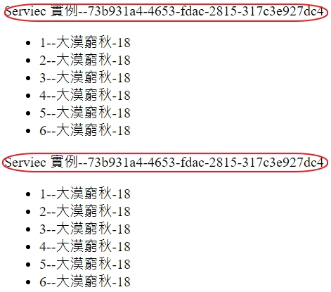
在畫面上可以看到兩個UserListComponent實例中，使用的都是同一個UserListService實例。
這種全局單例模式很有用，你可以利用它來實現整個App範圍內的數據共享。
注意：在同步NgModule里面配置的provicer在整個App範圍內都是可見的，也就是說，即使你在某個子模塊童面配直的provider，它們依然是全局可見的，可以被注射到任意類里面。
lession11-2:@Injectable & @Injeect（2） 自動檔–＠Injectable 在上節裏，UserListService服務直接返回了一個數組字面值，在真實的應用中，我們需要服務端去加載數據，這就需要用到Angular提供的HttpClient服務了，這里我們需要把HttpClient服務注射到UserListService服務里面去，做法如下：
在src\app\user-list\service\user-list.service.ts
1 2 3 4 5 6 7 8 9 10 11 12 13 14 import { Injectable } from '@angular/core' ;import { UUID } from 'angular2-uuid' ;import { HttpClient } from '@angular/common/http' ;@Injectable ({ providedIn: 'root' }) export class UserListService { constructor (private http: HttpClient this ._id = UUID.UUID(); } }
在src\app\app.module.ts中要加入HttpClientModule
1 2 3 4 5 6 7 8 9 10 11 12 13 import { HttpClientModule } from '@angular/common/http' ;@NgModule ({ imports: [ BrowserModule, HttpClientModule, ], }) export class AppModule { }
我們注意到，在以上第一段代碼里面，UserListService頂部有一個＠Injectable裝飾器，那麼＠Injetable到底對UserListService做了什麼事情呢？
OK, 我們可以以ng build來看產生出來的代碼，大概可以猜到＠Injectable裝飾器的作用了：如果存在＠Injectable裝飾器，TS編譯器就會在最終生成的代嗎里面保留類型元數據，然後Angular在運行時就可以根據這些信息來注射指定的對象。否則，運行時就無法解析參數類型。
簡而言之：如果一個Service里面需要依賴其他Service，需要使用＠Injectable裝飾器進行裝飾。
為了不給自已找麻煩，最好所有Service都加上＠Injectable裝飾器，這是一種良好的編碼風格，用＠angular/cli生成的Service會自動在頭部加上＠Injdectable裝飾器，不需要操心。
手動檔–利用＠Injet自己指定類型信息 除了在UserListService頂部添加＠Injectable裝飾器之外，還有一種非常不常用的方法，怳用＠Inject裝飾器手動指定類型信息， 代碼如下在src\app\user-list\service\user-list.service.ts
1 2 3 4 5 6 7 8 9 10 import { HttpClient } from '@angular/common/http' ;export class UserListService { constructor (@Inject (HttpClient) private http this ._id = UUID.UUID(); } }
我們自無使用＠Inject裝飾器編譯之後也生成了對應的類型元數據並且運行起來也不會報錯。
仔細觀察你就會發現，用＠Inject和用＠Injectable最終編譯出來的代碼是不一樣的。用＠Inject生鐟的代碼多了很多東西，如果出現大量這種代碼，最終編譯出來的文件體積會變大。
＠Inject的其他用法 在以上例子里面，我們注入的都是強類型的對象。
有人就會問了：如果想注入弱類型的對象字面值可不可以呢？
當然可以，但是稍微麻煩一點。
比如想把這樣一個配置對象注入給LiteralService服務
先來產生配置對象在src\app\下建立my-config.ts
1 2 3 4 5 6 7 8 import { InjectionToken } from '@angular/core' export const MY_CONFIG = { appName: "我的App" , version: "1.0" } export const MY_CONFIG_TOKEN = new InjectionToken<string >('my-config.ts' );
1 ng g service user-list/service/Literal
1 2 3 4 5 6 7 8 9 10 11 12 13 14 import { Injectable, Inject } from '@angular/core' ;import { MY_CONFIG_TOKEN } from 'src/app/my-config' ;@Injectable ({ providedIn: 'root' }) export class LiteralService { constructor ( @Inject (MY_CONFIG_TOKEN) config: Object ) { console .log(config); } }
在src\app\app.module.ts中
1 2 3 4 5 6 7 8 9 10 11 12 13 14 15 import { MY_CONFIG_TOKEN, MY_CONFIG } from './my-config' ;@NgModule ({ declarations: [ ], imports: [ ], providers: [{ provide: MY_CONFIG_TOKEN, useValue: MY_CONFIG }], bootstrap: [AppComponent], entryComponents: [], exports: [] }) export class AppModule { }
在使用src\app\user-list\user-list.component.ts
1 2 3 4 5 6 7 8 9 10 11 12 13 14 15 16 17 18 19 20 21 22 import { Component, OnInit } from '@angular/core' ;import { UserListService } from './service/user-list.service' ;import { LiteralService } from './service/literal.service' ;@Component ({ selector: 'user-list' , templateUrl: './user-list.component.html' , styleUrls: ['./user-list.component.scss' ] }) export class UserListComponent implements OnInit { userList: Array <any >; constructor ( private userListService: UserListService, private literalService: LiteralService ) { } ngOnInit() { this .userList = this .userListService.getUserlist(); } }
在LiteralService中會打印
1 2 3 {appName: "我的App", version: "1.0"}appName: "我的App"version: "1.0"__proto__: Object core.js:38781 Angular is running in the development mode. Call enableProdMode() to enable the production mode. client:52 [WDS] Live Reloading enabled.
**特別注意：這種玩法非常罕見，除非你想自已實甚一些特別的功能才用得到。比如上面這個例子，可以直接稅用TypeScript的Import機級，直接把配置文件Import進來完事。
總結 簡而言之，＠Injectable與＠Inject之間的關系，就像自動檔和手動檔的區別，如果不是有奇怪的癖好，當然是自動檔開起來舒服，老司機都懂的。
我們可以自已手動用＠Inject裝鈽器來讓TypeScript編譯器保留類型元數據，但是一般來說不需要這麼做（也就是說，＠Inject裝飾器一般是用不到的，除非你想做一些其他的事情）
保留類型元𠐍據的另一個簡便方法是使用＠Injectable裝飾器，＠Injectable并沒有什麼神奇的作用，它只是告訴TS編譯器，請生成類型元數據，然後Angular在運行時就知道應該注射什麼類型的對象了。
這是TypeScript強加的一規則，如果不加＠Inectable裝飾器。TS編譯器會把參數類型元數據𠫢棄。
對於Angular中的Service來說，最好都加上＠Injectable裝飾器，這是一種良好的𤚴碼風格。
lession11-3:@Self裝飾器 使用父層組件上的UserListService實例
第11-1課 中介紹過，Injector會構成樹形結構，就像這樣
這就意味著，如果我們在父層組件里面定義了UserListService，子層組件可以直接使用同一個實例。
我們繼續前面的例子進行改造，給UserListComponent加一層子組件，組件名字就叫ChildComponent，建立子元件
在src\app\app.component.html
在src\app\user-list\user-list.component.html
1 2 3 4 5 6 <div > <div > Serviec 實例--{{userListService.id}}</div > <div > <app-child > </app-child > </div > </div >
在src\app\user-list\user-list.component.ts
1 2 3 4 5 6 7 8 9 10 11 12 13 14 15 16 import { Component, OnInit } from '@angular/core' ;import { UserListService } from './service/user-list.service' ;@Component ({ selector: 'user-list' , templateUrl: './user-list.component.html' , styleUrls: ['./user-list.component.scss' ] }) export class UserListComponent implements OnInit { userList: Array <any >; constructor ( private userListService: UserListService, ) { } ngOnInit() { } }
在src\app\child\child.component.html
1 2 3 4 <div > <p > child works!</p > <p > Serviec 實例--{{userListService.id}}</p > </div >
在src\app\child\child.component.scss
1 2 3 4 5 div { border-color : #aaa ; border-width : 1px ; border-style : dashed; }
在src\app\child\child.component.ts
1 2 3 4 5 6 7 8 9 10 11 12 13 14 15 16 import { Component, OnInit } from '@angular/core' ;import { UserListService } from '../user-list/service/user-list.service' ;@Component ({ selector: 'app-child' , templateUrl: './child.component.html' , styleUrls: ['./child.component.scss' ] }) export class ChildComponent implements OnInit { constructor ( private userListService: UserListService, ) { } ngOnInit() { } }
結果如下
我們在ChildComponent里面沒有配置providers,而是父層的UserListComponet配置了providers,從運行效果可以看到：由於ChildComponent嵌套在UserListCompoent內部，而且它自已沒有配置providers，因此它其享了父層的UerListService實例。
那麼問是就來了，如果ChildComponent相要自已獨立的UserListService實例，應該怎麼做呢？
@Self裝飾器
我們可以利用@Self裝飾來提示注射器，不要向上查找，只在組件自身內部查找依賴。我們給ChildCompoent內部的UserListService聲明加上@Self裝飾器
1 2 3 4 5 6 7 8 9 10 11 12 13 14 15 16 import { Component, OnInit, Self } from '@angular/core' ;import { UserListService } from '../user-list/service/user-list.service' ;@Component ({ selector: 'app-child' , templateUrl: './child.component.html' , styleUrls: ['./child.component.scss' ] }) export class ChildComponent implements OnInit { constructor ( @Self () private userListService: UserListService, ) { } ngOnInit() { } }
然後就報錯如下的訊息
1 2 3 4 5 6 7 Error: Template parse errors: No provider for UserListService (" <div>Serviec 實例--{{userListService.id}}</div> <div> [ERROR ->]<app-child></app-child> </div> </div>
很好理解對吧，我們用@Self裝飾器把查找依賴的范圍限定在ChildComponent組件自身內部，但是ChildComponent自已并沒有配置UerListService當然就找不到了。
因此我們要在ChildComponent組件內部補上providers配置配：
1 2 3 4 5 6 7 8 9 10 @Component ({ selector: 'app-child' , templateUrl: './child.component.html' , styleUrls: ['./child.component.scss' ], providers: [UserListService] }) export class ChildComponent implements OnInit {}
從運行結果可以看到，父層和子層已經是不同的UserListService實例了：
lession11-4:@Optional @Optional基本用法
我們在ChildComponent的構造函數里面加上@Optional裝飾器進行裝飾：
1 2 3 4 5 6 7 8 9 10 11 12 13 14 15 16 17 18 19 import { Component, OnInit, Optional, Self } from '@angular/core' ;import { UserListService } from '../user-list/service/user-list.service' ;@Component ({ selector: 'app-child' , templateUrl: './child.component.html' , styleUrls: ['./child.component.scss' ], }) export class ChildComponent implements OnInit { constructor ( @Optional () private userListService: UserListService, ) { } ngOnInit() { } }
在src\app\user-list\user-list.component.ts
1 2 3 4 5 6 7 8 9 10 11 12 13 14 15 16 import { Component, OnInit } from '@angular/core' ;import { UserListService } from './service/user-list.service' ;@Component ({ selector: 'user-list' , templateUrl: './user-list.component.html' , styleUrls: ['./user-list.component.scss' ], providers: [UserListService] }) export class UserListComponent implements OnInit { userList: Array <any >; constructor ( private userListService: UserListService, ) { } ngOnInit() { } }
注射器看到@Optional裝飾器之後就知道這個服𠨟是可選的，處理邏輯如下：
沿著Injector Tree向上找一遍，如果找到了需要注入的類型，就創建實例
如果啥都沒找到，直接賦值為null，不拋異常
@Self與@Optional組合使用
注意：組合使用的方式在官文檔沒有詳細說明，請對照例子理解一下
裝飾器是可以組合使用的，因此ChildComponent的構造函數里面可以寫成這樣
1 2 3 4 5 constructor ( @Self () @Optional () private userListService: UserListService, ) { }
這種用法的含義是：
因為@Self裝飾器限定了查找范圍，所以只在ChildCompoent自身內部進行查找，父層組件有沒有定義對應的服務，不會產生任何影響
因為有＠Optional裝飾器，所以如果ChildComponent自身內部提供了對應的服務，就創建實例，否則就直接賦為null，不拋異常
lession11-5:@SkipSelf
@SkipSelf基本用法
從名字可以猜出來它的含義：跳過組件自身，然後沿著Injector Tree向上查找，繼續在前面的例子上改造ChildComponent
在src\app\child\child.component.ts
1 2 3 4 5 6 7 8 9 10 11 12 13 14 15 16 17 import { Component, OnInit, Optional, Self, SkipSelf } from '@angular/core' ;import { UserListService } from '../user-list/service/user-list.service' ;@Component ({ selector: 'app-child' , templateUrl: './child.component.html' , styleUrls: ['./child.component.scss' ], providers: [UserListService] }) export class ChildComponent implements OnInit { constructor ( @SkipSelf () private userListService: UserListService, ) { } ngOnInit() { } }
在父組件src\app\user-list\user-list.component.ts
1 2 3 4 5 6 7 8 9 10 11 12 13 14 15 16 import { Component, OnInit } from '@angular/core' ;import { UserListService } from './service/user-list.service' ;@Component ({ selector: 'user-list' , templateUrl: './user-list.component.html' , styleUrls: ['./user-list.component.scss' ], providers: [UserListService] }) export class UserListComponent implements OnInit { userList: Array <any >; constructor ( private userListService: UserListService, ) { } ngOnInit() { } }
可以看到，我們在ChildComponent和它的父層組件UserListComponent上都配置了UserListService，但是ChildComponent上有@SkipSelf裝飾器，因此ChildComponent上的配罝并沒有起作用，使用的還是UserListCompoent上的實例
@SkipSelf與@Optional組合使用
同樣，我們可以組合使用@SkipSelf與@Optional:
1 2 3 4 5 constructor ( @SkipSelf () @Optional () private userListService: UserListService,
這樣寫的含義是：
因為使用了@SkipSelf裝飾器，𣢇以直接跳過ChildComponent組件自身，從Injector Tree的父層節點向上進行查找，也就是說，不管ChildComponent組件自已有沒有配置UserListService都不起作用，因為跳過去了
因為使用了@Optional裝飾器，如果在父層上面找到了指定的類型，那就創建實例；否則，直接設置為null，不拋異常。
lession11-6:@Host Host這個單詞有“宿主”的意思，就像病毒和OS之𫂾的關系。
可以意會一下@Host這個裝飾的特性
@Host的基本用法默認情況下，＠Host裝飾器會指示注射器在組件自己內部去查找依賴的類型，就像這樣：
在src\app\child\child.component.ts
1 2 3 4 5 6 7 8 9 10 11 12 13 14 15 16 17 import { Component, OnInit, Optional, Self, SkipSelf, Host } from '@angular/core' ;import { UserListService } from '../user-list/service/user-list.service' ;@Component ({ selector: 'app-child' , templateUrl: './child.component.html' , styleUrls: ['./child.component.scss' ], providers: [UserListService] }) export class ChildComponent implements OnInit { constructor ( @Host () private userListService: UserListService, ) { } ngOnInit() { } }
如果＠Host只有這一個特性的話，它就沒有麼存在的必要了，實際上它更核心的功能與所謂的Content Projection（內容投影）機制有關
Content Projetion（內容投影） 有時候，組件內部放什麼內容并不固定，而是需要調用方在使用組件的時候去指定，這豆Content Projection最核心的一個作用。
我們繼續修改ChildComponent這個組件，在上面使用@Host裝飾器，但是不配置UserListService就像這樣
1 2 3 4 5 6 7 8 9 10 11 12 13 14 15 16 import { Component, OnInit, Optional, Self, SkipSelf, Host } from '@angular/core' ;import { UserListService } from '../user-list/service/user-list.service' ;@Component ({ selector: 'app-child' , templateUrl: './child.component.html' , styleUrls: ['./child.component.scss' ], }) export class ChildComponent implements OnInit { constructor ( @Host () private userListService: UserListService, ) { } ngOnInit() { } }
父層組件UserListComponent的改動幅度比較大，首先還是給它配置了UserListService，就像這樣
1 2 3 4 5 6 7 8 9 10 11 12 13 14 15 16 import { Component, OnInit } from '@angular/core'; import { UserListService } from './service/user-list.service'; @Component({ selector: 'user-list', templateUrl: './user-list.component.html', styleUrls: ['./user-list.component.scss'], providers: [UserListService] }) export class UserListComponent implements OnInit { userList: Array<any>; constructor( private userListService: UserListService, ) { } ngOnInit() { } }
然後還修改了UserListComponent的HTML模板代碼，這里跟前面的例子者不一樣，我們不再把顯示寫死在模板內部，而是在模板里面使用了一個標籤，ng-content的本質是一個占位符，這個占位符會被被直正投影進立的內容替換掉。
現在UserListComponent的模板代碼如下：
1 2 3 4 5 6 7 <div > <div > 父元件</div > <p > Serviec 實例--{{ userListService!=null ? userListService.id:''}}</p > <div > <ng-content select ="app-child" > </ng-content > </div > </div >
在AppComponent的HTML模板里面，使用UserListComponent的方式也發生了改變，標籤的內部嵌套了一個子層標籤，這在之前的例子里面是沒有出現過的，就像這樣
1 2 3 <user-list > <app-child > </app-child > </user-list >
運行效果是這樣的
可以看到，設影進來的子組件和父層的宿主組件共用了同一個UserListService實例
“內容投影”的優點在於：UserListComponent的HTML模板沒有和ChildCpmoponent緊密耦合在一起，因為ChildCompoent是被”投影”進來的，未來如果你覺得不爽，可以投影一個另外的組件實例進來（當然這里的代碼還得小改一番），于是兩個組件變得比較靈渚，而不會出現誰也離不開的情況。
＠Host裝飾器會提示注射器：要麼在組件自已內部查找需要的依賴，要麼到Host（宿主）上去查找。
怎麼樣，能理解這里Host一詞的意味了吧？
簡而言之：＠Host飾器是用來在被投影的組件和它的宿主之間構建聯系的。
“內容投影”機制還有很多非常重要的作用，在前面的內容中已經有非常瑣碎的描述。
@Host和＠Optional組合使用 如上所述，＠Host會嘗式到宿主組件上去查找依賴，那麼問題就來了，如果宿主上面并沒有所需要的東西，怎麼辦呢？
借著上面的例子，我們把UserListCompoent里面配置的UserListService注䆁掉：
1 2 3 4 5 6 7 8 9 10 11 12 13 14 15 16 import { Component, OnInit } from '@angular/core' ;import { UserListService } from './service/user-list.service' ;@Component ({ selector: 'user-list' , templateUrl: './user-list.component.html' , styleUrls: ['./user-list.component.scss' ], }) export class UserListComponent implements OnInit { userList: Array <any >; constructor ( ) { } ngOnInit() { } }
然後理所當然就報錯了，因為現在宿主上并沒有所需要的對象，如不想出現這種報錯，而且你認為對於ChildComponent來說，UserListService并不是在構造的時候就必須的，＠Optional裝飾器就可以派上用場了
1 2 3 4 5 6 7 8 9 10 export class ChildComponent implements OnInit { constructor ( @Host () @Optional () private userListService: UserListService, ) { } ngOnInit() { } }
lession11-7:手動操作注射器實例 官方文檔特別強調：開發者可以手動操作Injector的實例，但是這種情況非常罕見。
因此那部分文檔隱藏了一些黑魔法，這里我們自已揭開蓋子來玩。
注入Injector實例 我們繼續在前面的例子上改進，來嘗試手動操作Injector實例
在src\app\user-list\user-list.component.ts
1 2 3 4 5 6 7 8 9 10 11 12 13 14 15 16 17 18 19 20 21 22 23 24 25 26 import { Component, OnInit, Injector } from '@angular/core' ;import { UserListService } from './service/user-list.service' ;@Component ({ selector: 'user-list' , templateUrl: './user-list.component.html' , styleUrls: ['./user-list.component.scss' ], }) export class UserListComponent implements OnInit { userList: Array <any >; userListService: UserListService; constructor ( private injector: Injector ) { console .log(this .userListService); console .log(this .injector); } ngOnInit() { this .userListService = this .injector.get(UserListService); console .log(this .userListService); this .userListService.getUserlist().subscribe((userList: Array <any > ) => { this .userList = userList; }); } }
修改一下src\app\user-list\service\user-list.service.ts
1 2 3 4 5 6 7 8 9 10 11 12 13 14 15 16 17 18 19 20 21 22 23 24 25 26 import { Injectable, Inject } from '@angular/core' ;import { UUID } from 'angular2-uuid' ;import { HttpClient } from '@angular/common/http' ;import { of, Observable } from 'rxjs' ;@Injectable ({ providedIn: 'root' }) export class UserListService { private _id: string ; get id(): string { return this ._id; } constructor (@Inject (HttpClient) private http this ._id = UUID.UUID(); } getUserlist(): Observable<any > { return of([ { userName: "大漠窮秋" , age: 18 }, { userName: "大漠窮秋" , age: 18 }, { userName: "大漠窮秋" , age: 18 }, { userName: "大漠窮秋" , age: 18 }, { userName: "大漠窮秋" , age: 18 }, { userName: "大漠窮秋" , age: 18 } ]); } }
可以用Chrome打開開發者工具看看Injector實例上面都有些什麼屬性，很明顯，Injector本身也是一個服務。
在上面的例子里面，Injector實例是Angular幫我們自動創建的，如果我們自已創建注射器，可不可以呢？
當然是OK的，Angular內核默提供了3種Injector的實現
_NullInjector是內部使用的私有類，外部無法引用
StaticInjector可以在外部使用，但是文檔里面沒有描述
ReflectiveInjector反射型注射器，如果你學過Java里面的反射機制，從ReflectiveInjector這個名字可以猜測到它內部是 怎麼運行的。
測試代碼
先建立服務
1 ng g service user-list/service/Test
在src\app\user-list\user-list.component.ts
1 2 3 4 5 6 7 8 9 10 11 12 13 14 15 16 17 18 19 20 21 22 23 24 25 26 27 28 29 30 31 32 33 34 35 36 37 38 import { Component, OnInit, Injector, ReflectiveInjector } from '@angular/core' ;import { UserListService } from './service/user-list.service' ;import { TestService } from './service/test.service' ;@Component ({ selector: 'user-list' , templateUrl: './user-list.component.html' , styleUrls: ['./user-list.component.scss' ], }) export class UserListComponent implements OnInit { userList: Array <any >; userListService: UserListService; private reflectiveInjector: ReflectiveInjector; private testService: TestService; constructor ( private injector: Injector ) { console .log(this .userListService); console .log(this .injector); } ngOnInit() { this .userListService = this .injector.get(UserListService); console .log(this .userListService); this .userListService.getUserlist().subscribe((userList: Array <any > ) => { this .userList = userList; }); let myInjector = ReflectiveInjector.resolveAndCreate([ { provide: "TestService" , useClass: TestService } ]); console .log(myInjector); this .testService = myInjector.get("TestService" ); console .log(this .testService); } }
嘗試自已創建注射器，然後利用注射器創建TestService服務實例。
注意：從Angular 5.x開始，ReflectiveInjector被標記成了過時的，官方建議使用靜態方法Injector.create
參考資料 大漠窮秋老師的gitte